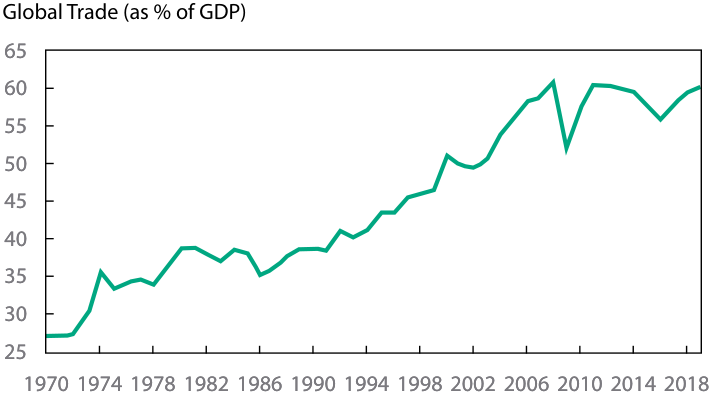
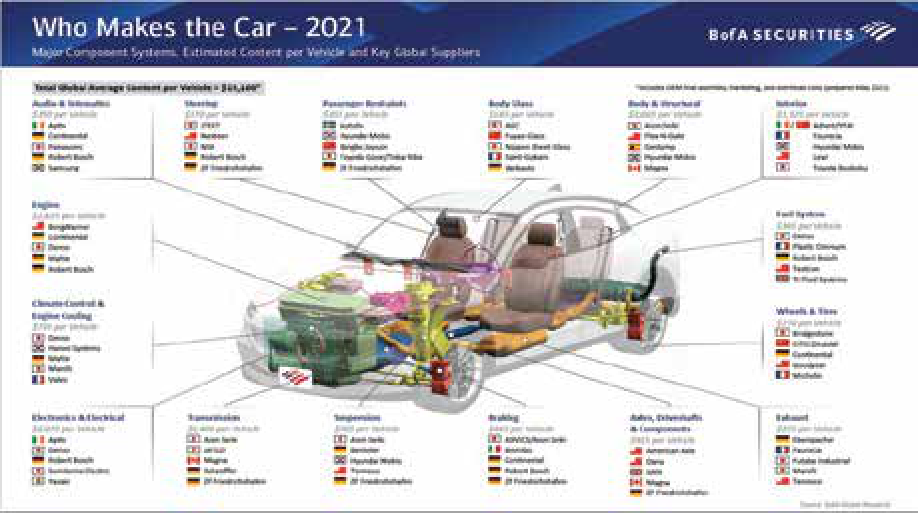
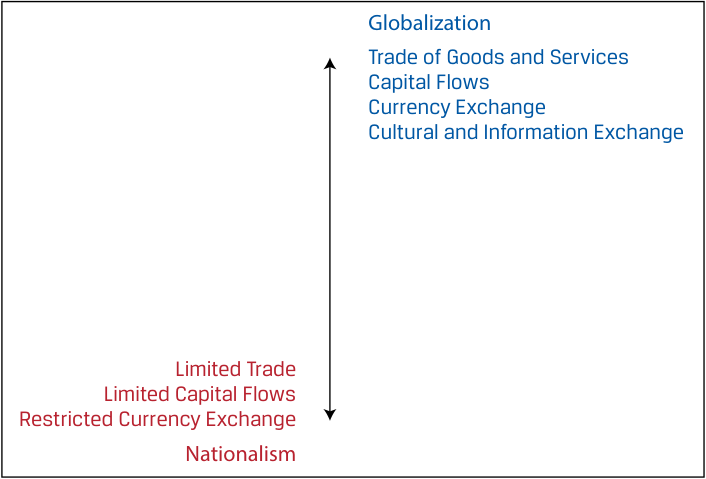

[Toàn Chương] LM05 — Learning Module 5 Introduction to Geopolitics
Volume 2: Economics
Learning Module 5 Introduction to Geopolitics
Part 1/4: Introduction (PDF Pages 149–159)
Tập 2: Kinh tế học (Volume 2: Economics)
Học phần 5: Giới thiệu về Địa chính trị (Learning Module 5: Introduction to Geopolitics)
Phần 1/4: Giới thiệu (Introduction) (Trang PDF 149–159)
L E A R N I N G M O D U L E
H Ọ C P H Ầ N (L E A R N I N G M O D U L E)
5
5
Introduction to Geopolitics
Giới thiệu về Địa chính trị (Introduction to Geopolitics)
by Goodwin Lauren, Nair-Reichert Usha, PhD, and Witschi Daniel Rober, PhD.
Tác giả: Goodwin Lauren, Nair-Reichert Usha, PhD, và Witschi Daniel Rober, PhD.
Lauren Goodwin, CFA, is at New York Life Investments (USA). Usha Nair-Reichert, PhD, is at Georgia Institute of Technology (USA). Daniel Robert Witschi, PhD, CFA, is at Dreyfus Sons & Co Ltd. (Switzerland).
Lauren Goodwin, CFA, làm việc tại New York Life Investments (Hoa Kỳ). Usha Nair-Reichert, PhD, làm việc tại Viện Công nghệ Georgia (Georgia Institute of Technology, Hoa Kỳ). Daniel Robert Witschi, PhD, CFA, làm việc tại Dreyfus Sons & Co Ltd. (Thụy Sĩ).
LEARNING OUTCOMES
MỤC TIÊU HỌC TẬP (LEARNING OUTCOMES)
| Mastery | The candidate should be able to: |
|---|---|
| describe geopolitics from a cooperation versus competition perspective |
|
| describe geopolitics and its relationship with globalization | |
| describe functions and objectives of the international organizations that facilitate trade, including the World Bank, the International Monetary Fund, and the World Trade Organization describe geopolitical risk |
|
| describe tools of geopolitics and their impact on regions and economies |
|
| describe the impact of geopolitical risk on investments |
| Mức độ thành thạo (Mastery) | Ứng viên cần có khả năng (The candidate should be able to): |
|---|---|
| mô tả địa chính trị từ góc độ hợp tác so với cạnh tranh (cooperation versus competition perspective) | |
| mô tả địa chính trị và mối quan hệ của nó với toàn cầu hóa (globalization) | |
| mô tả chức năng và mục tiêu của các tổ chức quốc tế tạo thuận lợi cho thương mại, bao gồm Ngân hàng Thế giới (World Bank), Quỹ Tiền tệ Quốc tế (International Monetary Fund – IMF) và Tổ chức Thương mại Thế giới (World Trade Organization – WTO) | |
| mô tả rủi ro địa chính trị (geopolitical risk) | |
| mô tả các công cụ của địa chính trị (tools of geopolitics) và tác động của chúng đối với các khu vực và nền kinh tế | |
| mô tả tác động của rủi ro địa chính trị đối với các khoản đầu tư |

INTRODUCTION
GIỚI THIỆU (INTRODUCTION)
Investors study geopolitics and geopolitical risk because they can have a material impact on investment outcomes. These relations affect key drivers of investment performance, including economic growth, business performance, market volatility, and transaction costs. On a portfolio level, geopolitical risk can affect the suitability of a security or strategy for an investor’s goals, risk tolerance, and time horizon. In this learning module, we will build a framework by which investors can measure, assess, track, and react to geopolitical risk, with a goal of improving investment outcomes.
Các nhà đầu tư nghiên cứu địa chính trị (geopolitics) và rủi ro địa chính trị (geopolitical risk) vì chúng có thể gây ra tác động trọng yếu đến kết quả đầu tư. Những mối quan hệ này ảnh hưởng đến các động lực chính của hiệu quả đầu tư, bao gồm tăng trưởng kinh tế (economic growth), kết quả hoạt động kinh doanh (business performance), biến động thị trường (market volatility) và chi phí giao dịch (transaction costs). Ở cấp độ danh mục đầu tư, rủi ro địa chính trị có thể ảnh hưởng đến sự phù hợp của một chứng khoán hoặc chiến lược đối với mục tiêu, mức độ chấp nhận rủi ro (risk tolerance) và khung thời gian đầu tư (time horizon) của nhà đầu tư. Trong học phần này, chúng ta sẽ xây dựng một khung phân tích giúp các nhà đầu tư có thể đo lường, đánh giá, theo dõi và phản ứng trước rủi ro địa chính trị, với mục tiêu cải thiện kết quả đầu tư.
LEARNING MODULE OVERVIEW
TỔNG QUAN HỌC PHẦN (LEARNING MODULE OVERVIEW)
-
Geopolitics is the study of how geography affects politics and international relations. Within the field of geopolitics, analysts study actors—the individuals, organizations, companies, and national governments that carry out political, economic, and financial activities—and how they interact with one another.
-
State actors can be cooperative or non-cooperative. A country may want to cooperate with its neighbors or with other state actors for many reasons. These reasons are typically defined by a country’s national interest—its goals and ambitions—whether they be military, economic, or cultural.
-
The cooperation and engagement among countries is also affected by its resource endowment, standardization of the rules of engagement, and cultural factors and soft power.
-
A country’s national interest can be viewed as a hierarchy of factors, with those essential for survival at the top of the hierarchy and nicebut-not-essential elements lower in the hierarchy. Governments use the hierarchy of interests to guide their behavior.
-
Political cooperation versus non-cooperation is only one lens through which geopolitical actors engage with the world, but it is an important one for understanding countries’ priorities.
-
Globalization is marked by economic and financial cooperation, including the active trade of goods and services, capital flows, currency exchange, and cultural and information exchange. By contrast, antiglobalization or nationalism is the promotion of a country’s own economic interests to the exclusion or detriment of the interests of other nations. Nationalism is marked by limited economic and financial cooperation.
-
Globalization provides potential gains, such as:
-
increased profits—through increasing sales and/or reducing costs,
-
access to resources—market access and investment opportunities, and
-
intrinsic gains—an improved quality of life.
-
Globalization also has some potential drawbacks, such as:
-
unequal economic and financial gains,
-
interdependence that can lead to supply chain disruption, and
-
possible exploitation of social and environmental resources.
-
The International Monetary Fund’s (IMF’s) main mandate is to ensure the stability of the international monetary system, the system of exchange rates and international payments that enables countries to buy goods and services from each other.
-
The World Bank’s main objective is to help developing countries fight poverty and enhance environmentally sound economic growth.
-
The World Trade Organization (WTO) provides the legal and institutional foundation of the multinational trading system. It regulates cross-border trade relationships among nations on a global scale.
-
Địa chính trị (Geopolitics) là ngành nghiên cứu về cách thức các yếu tố địa lý ảnh hưởng đến chính trị và quan hệ quốc tế. Trong lĩnh vực địa chính trị, các nhà phân tích nghiên cứu các chủ thể (actors) — những cá nhân, tổ chức, công ty và chính phủ quốc gia thực hiện các hoạt động chính trị, kinh tế và tài chính — và cách thức họ tương tác với nhau.
-
Các chủ thể nhà nước (state actors) có thể mang tính hợp tác (cooperative) hoặc bất hợp tác (non-cooperative). Một quốc gia có thể muốn hợp tác với các nước láng giềng hoặc với các chủ thể nhà nước khác vì nhiều lý do. Những lý do này thường được xác định bởi lợi ích quốc gia (national interest) của đất nước đó — tức các mục tiêu và tham vọng của họ — dù là về quân sự, kinh tế hay văn hóa.
-
Sự hợp tác và gắn kết giữa các quốc gia cũng chịu ảnh hưởng bởi nguồn lực tự nhiên sẵn có (resource endowment), sự chuẩn hóa các quy tắc ứng xử (standardization of the rules of engagement), cùng các yếu tố văn hóa và quyền lực mềm (soft power).
-
Lợi ích quốc gia của một đất nước có thể được xem như một hệ thống phân cấp các yếu tố (hierarchy of factors), với những yếu tố thiết yếu cho sự sinh tồn nằm ở đỉnh tháp phân cấp và những yếu tố tốt-nhưng-không-thiết-yếu nằm ở vị trí thấp hơn. Các chính phủ sử dụng hệ thống phân cấp lợi ích (hierarchy of interests) để định hướng hành vi của mình.
-
Hợp tác chính trị so với bất hợp tác chỉ là một lăng kính qua đó các chủ thể địa chính trị tương tác với thế giới, nhưng đó là một lăng kính quan trọng để thấu hiểu các ưu tiên của các quốc gia.
-
Toàn cầu hóa (Globalization) được đặc trưng bởi sự hợp tác kinh tế và tài chính, bao gồm hoạt động trao đổi thương mại hàng hóa và dịch vụ sôi động, các dòng vốn (capital flows), trao đổi tiền tệ (currency exchange), cũng như trao đổi văn hóa và thông tin. Ngược lại, chống toàn cầu hóa (antiglobalization) hay chủ nghĩa dân tộc (nationalism) là việc thúc đẩy lợi ích kinh tế của chính một quốc gia mà loại trừ hoặc gây phương hại đến lợi ích của các quốc gia khác. Chủ nghĩa dân tộc được đặc trưng bởi sự hợp tác kinh tế và tài chính hạn chế.
-
Toàn cầu hóa mang lại những lợi ích tiềm năng, chẳng hạn như:
-
gia tăng lợi nhuận — thông qua việc tăng doanh số bán hàng và/hoặc giảm chi phí,
-
tiếp cận các nguồn lực — tiếp cận thị trường và các cơ hội đầu tư, và
-
lợi ích nội tại (intrinsic gains) — chất lượng cuộc sống được cải thiện.
-
Toàn cầu hóa cũng có một số hạn chế tiềm tàng, chẳng hạn như:
-
lợi ích kinh tế và tài chính phân bổ không đồng đều,
-
sự phụ thuộc lẫn nhau (interdependence) có thể dẫn đến đứt gãy chuỗi cung ứng (supply chain disruption), và
-
khả năng khai thác quá mức các nguồn lực xã hội và môi trường.
-
Nhiệm vụ chính của Quỹ Tiền tệ Quốc tế (International Monetary Fund – IMF) là đảm bảo sự ổn định của hệ thống tiền tệ quốc tế (international monetary system), tức hệ thống tỷ giá hối đoái và thanh toán quốc tế cho phép các quốc gia mua bán hàng hóa và dịch vụ lẫn nhau.
-
Mục tiêu chính của Ngân hàng Thế giới (World Bank) là giúp các nước đang phát triển xóa đói giảm nghèo và thúc đẩy tăng trưởng kinh tế bền vững với môi trường.
-
Tổ chức Thương mại Thế giới (World Trade Organization – WTO) cung cấp nền tảng pháp lý và thể chế cho hệ thống thương mại đa phương. Tổ chức này điều tiết các mối quan hệ thương mại xuyên biên giới giữa các quốc gia trên phạm vi toàn cầu.
| ■ | A geopolitical framework for analysis includes four archetypes of country behavior: autarky, hegemony, multilateralism, and bilateral- ism. Each archetype has its own costs, benefits, and trade-offs with respect to geopolitical risk. |
|---|---|
| ■ | Geopolitical risk is the risk associated with tensions or actions between actors (state and non-state) that affect the normal and peaceful course of international relations. Geopolitical risk tends to rise when the geographic and political factors underpinning country relations shift. |
| ■ | The tools of geopolitics may be separated into the following three types: |
| ● national security tools, |
|
| ● economic tools, and ● financial tools. |
|
| ■ | i The most extreme example of a national security tool is that of armed conflict. Espionage is an indirect national security tool. Military alli- ances are often used either to aid in direct conflict or to deter conflict from arising in the first place. |
| ■ | i Economic tools are used to reinforce a cooperative or non-cooperative stance through economic means. Among state actors, economic tools can include multilateral trade agreements or the global harmonization of tariff rules. Economic tools also can be non-cooperative in nature. Nationalization is a non-cooperative approach to asserting economic control. |
| ■ | Financial tools are the actions used to reinforce a cooperative or non-cooperative stance through financial mechanisms. Examples of cooperative financial tools include the free exchange of currencies across borders and allowing foreign investment. Examples of non-co- operative financial tools include limiting access to local currency markets and restricting foreign investment. |
| ■ | There are three basic types of geopolitical risk: |
| ● event risk, |
|
| ● exogenous risk, and ● thematic risk. |
|
| ■ | Event risk evolves around set dates known in advance. Political events, for example, often result in changes to investor expectations related to a country’s cooperative stance. Brexit is an example of event risk. |
| ■ | Exogenous risk is a sudden or unanticipated risk that can affect either a country’s cooperative stance, the ability of non-state actors to glo- balize, or both. Examples include sudden uprisings, invasions, or the aftermath of natural disasters. |
| ■ | Thematic risks are known risks that evolve and expand over time. Climate change, cyber threats, and the ongoing threat of terrorism fall into this category. |
| ■ | To make an assessment, an investor considers geopolitical risk in terms of the following three areas: ● likelihood it will occur, |
| ■ | Một khung phân tích địa chính trị bao gồm bốn hình mẫu (archetypes) hành vi của quốc gia: tự cung tự cấp (autarky), bá quyền (hegemony), chủ nghĩa đa phương (multilateralism), và chủ nghĩa song phương (bilateralism). Mỗi hình mẫu đều có chi phí, lợi ích và sự đánh đổi riêng đối với rủi ro địa chính trị. |
|---|---|
| ■ | Rủi ro địa chính trị (Geopolitical risk) là rủi ro gắn liền với những căng thẳng hoặc hành động giữa các chủ thể (nhà nước và phi nhà nước) làm ảnh hưởng đến tiến trình bình thường và hòa bình của quan hệ quốc tế. Rủi ro địa chính trị có xu hướng gia tăng khi các yếu tố địa lý và chính trị làm nền tảng cho quan hệ giữa các quốc gia dịch chuyển. |
| ■ | Các công cụ của địa chính trị có thể được chia thành ba loại sau: |
| ● các công cụ an ninh quốc gia (national security tools), | |
| ● các công cụ kinh tế (economic tools), và ● các công cụ tài chính (financial tools). |
|
| ■ | Ví dụ cực đoan nhất của công cụ an ninh quốc gia là xung đột vũ trang (armed conflict). Gián điệp (Espionage) là một công cụ an ninh quốc gia gián tiếp. Các liên minh quân sự (Military alliances) thường được sử dụng để hỗ trợ trong xung đột trực tiếp hoặc để răn đe, ngăn chặn xung đột phát sinh ngay từ đầu. |
| ■ | Các công cụ kinh tế được sử dụng để củng cố lập trường hợp tác hoặc bất hợp tác thông qua các biện pháp kinh tế. Giữa các chủ thể nhà nước, công cụ kinh tế có thể bao gồm các hiệp định thương mại đa phương (multilateral trade agreements) hoặc sự hài hòa hóa toàn cầu các quy tắc thuế quan (harmonization of tariff rules). Các công cụ kinh tế cũng có thể mang bản chất bất hợp tác. Quốc hữu hóa (Nationalization) là một cách tiếp cận bất hợp tác nhằm khẳng định quyền kiểm soát kinh tế. |
| ■ | Các công cụ tài chính là những hành động được sử dụng để củng cố lập trường hợp tác hoặc bất hợp tác thông qua các cơ chế tài chính. Ví dụ về các công cụ tài chính hợp tác bao gồm việc tự do chuyển đổi tiền tệ qua biên giới và cho phép đầu tư nước ngoài. Ví dụ về các công cụ tài chính bất hợp tác bao gồm việc hạn chế tiếp cận thị trường tiền tệ trong nước và hạn chế đầu tư nước ngoài. |
| ■ | Có ba loại rủi ro địa chính trị cơ bản: |
| ● rủi ro sự kiện (event risk), | |
| ● rủi ro ngoại sinh (exogenous risk), và ● rủi ro theo chủ đề / xu hướng dài hạn (thematic risk). |
|
| ■ | Rủi ro sự kiện (Event risk) xoay quanh những ngày ấn định đã được biết trước. Ví dụ, các sự kiện chính trị thường dẫn đến những thay đổi trong kỳ vọng của nhà đầu tư liên quan đến lập trường hợp tác của một quốc gia. Sự kiện Brexit là một ví dụ về rủi ro sự kiện. |
| ■ | Rủi ro ngoại sinh (Exogenous risk) là một rủi ro đột ngột hoặc không lường trước được, có thể ảnh hưởng đến lập trường hợp tác của một quốc gia, khả năng toàn cầu hóa của các chủ thể phi nhà nước, hoặc cả hai. Các ví dụ bao gồm các cuộc nổi dậy bất ngờ, các cuộc xâm lược, hoặc hậu quả của thiên tai. |
| ■ | Rủi ro theo chủ đề (Thematic risks) là những rủi ro đã được nhận diện nhưng phát triển và mở rộng theo thời gian. Biến đổi khí hậu, các mối đe dọa an ninh mạng và mối đe dọa khủng bố thường trực thuộc nhóm này. |
| ■ | Để đưa ra đánh giá, nhà đầu tư xem xét rủi ro địa chính trị trên ba khía cạnh sau: ● xác suất xảy ra rủi ro (likelihood it will occur), |
-
velocity (speed) of its impact, and
-
size and nature of that impact.
-
Geopolitical risks seldom develop in linear fashion, making it difficult to monitor and forecast their likelihood, velocity, and size and nature of impact on a portfolio. As a result, many investors deploy an approach that includes scenario building and signposting rather than a single point forecast.
-
Investors study geopolitical risk because it has a tangible impact on investment outcomes. On a macroeconomic level, these risks can affect capital markets conditions, such as economic growth, interest rates, and market volatility.
-
Changes in capital markets conditions can have an important influence on asset allocation decisions, including an investor’s choice of geographic exposures.
-
On a portfolio level, geopolitical risk can influence the appropriateness of an investment security or strategy for an investor’s goals, risk tolerance, and time horizon.
-
tốc độ (velocity/speed) tác động của nó, và
-
quy mô và bản chất của tác động đó (size and nature of that impact).
-
Rủi ro địa chính trị hiếm khi diễn biến theo kiểu tuyến tính, khiến việc theo dõi và dự báo xác suất, tốc độ cũng như quy mô và bản chất tác động của chúng lên danh mục đầu tư trở nên khó khăn. Do đó, nhiều nhà đầu tư triển khai một phương pháp tiếp cận bao gồm xây dựng kịch bản (scenario building) và theo dõi các dấu hiệu chỉ báo (signposting) thay vì dự báo điểm đơn lẻ (single point forecast).
-
Các nhà đầu tư nghiên cứu rủi ro địa chính trị vì nó có tác động hữu hình đến kết quả đầu tư. Ở cấp độ kinh tế vĩ mô, những rủi ro này có thể ảnh hưởng đến các điều kiện trên thị trường vốn (capital markets conditions), chẳng hạn như tăng trưởng kinh tế, lãi suất và mức độ biến động của thị trường.
-
Những thay đổi trong điều kiện thị trường vốn có thể có ảnh hưởng quan trọng đến các quyết định phân bổ tài sản (asset allocation decisions), bao gồm cả sự lựa chọn mức độ tiếp xúc theo khu vực địa lý (geographic exposures) của nhà đầu tư.
-
Ở cấp độ danh mục đầu tư, rủi ro địa chính trị có thể ảnh hưởng đến mức độ phù hợp của một chứng khoán hoặc chiến lược đầu tư đối với mục tiêu, mức độ chấp nhận rủi ro và khung thời gian đầu tư của nhà đầu tư.
2
2
NATIONAL GOVERNMENTS AND POLITICAL COOPERATION
CHÍNH PHỦ QUỐC GIA VÀ HỢP TÁC CHÍNH TRỊ (NATIONAL GOVERNMENTS AND POLITICAL COOPERATION)
describe geopolitics from a cooperation versus competition perspective
mô tả địa chính trị từ góc độ hợp tác so với cạnh tranh (describe geopolitics from a cooperation versus competition perspective)
The international environment is constantly evolving. Such trends as the growth of emerging market economies, globalization, and the rise of populism affect the range of opportunities and threats that companies, industries, nations, and regional groups face. Geopolitics is the study of how geography affects politics and international relations. Within the field of geopolitics, analysts study actors—the individuals, organizations, companies, and national governments that carry out political, economic, and financial activities—and how they interact with one another. The role of state and non-state actors is discussed in the following section.
Môi trường quốc tế luôn không ngừng vận động. Những xu hướng như sự tăng trưởng của các nền kinh tế thị trường mới nổi (emerging market economies), toàn cầu hóa và sự trỗi dậy của chủ nghĩa dân túy (populism) đều tác động đến phạm vi các cơ hội và mối đe dọa mà các công ty, ngành công nghiệp, quốc gia và các nhóm khu vực phải đối mặt. Địa chính trị (Geopolitics) là ngành nghiên cứu về cách thức địa lý ảnh hưởng đến chính trị và quan hệ quốc tế. Trong lĩnh vực địa chính trị, các nhà phân tích nghiên cứu các chủ thể (actors) — các cá nhân, tổ chức, công ty và chính phủ quốc gia thực hiện các hoạt động chính trị, kinh tế và tài chính — và cách họ tương tác với nhau. Vai trò của các chủ thể nhà nước và phi nhà nước được thảo luận trong phần tiếp theo.
State and Non-State Actors
Chủ thể Nhà nước và Chủ thể Phi nhà nước (State and Non-State Actors)
Relationships within and among countries can be complex. To begin, many actors influence international relations, political developments, and economic affairs. In the introduction, we defined actors as the individuals, organizations, companies, and national governments that carry out political, economic, and financial activities. This definition can be divided into two types of actors relevant for geopolitical risk: state actors and non-state actors. State actors are typically national governments, political organizations, or country leaders that exert authority over a country’s national security and resources. The South African president, sultan of Brunei, Malaysia’s parliament, and the British Prime minister are all examples of state actors. Non-state actors are those that participate in global political, economic, or financial affairs but do not
Các mối quan hệ bên trong mỗi quốc gia và giữa các quốc gia với nhau có thể rất phức tạp. Trước hết, có rất nhiều chủ thể ảnh hưởng đến quan hệ quốc tế, các diễn biến chính trị và các vấn đề kinh tế. Trong phần giới thiệu, chúng ta đã định nghĩa các chủ thể (actors) là những cá nhân, tổ chức, công ty và chính phủ quốc gia thực hiện các hoạt động chính trị, kinh tế và tài chính. Định nghĩa này có thể được chia thành hai loại chủ thể có liên quan đến rủi ro địa chính trị: chủ thể nhà nước và chủ thể phi nhà nước. Chủ thể nhà nước (State actors) thường là các chính phủ quốc gia, các tổ chức chính trị hoặc các nhà lãnh đạo đất nước thực thi quyền lực đối với an ninh quốc gia và tài nguyên của một đất nước. Tổng thống Nam Phi, Quốc vương Brunei, Quốc hội Malaysia và Thủ tướng Anh đều là những ví dụ về các chủ thể nhà nước. Chủ thể phi nhà nước (Non-state actors) là những chủ thể tham gia vào các vấn đề chính trị, kinh tế hoặc tài chính toàn cầu nhưng không
directly control national security or country resources. Examples of non-state actors are non-governmental organizations (NGOs), multinational companies, charities, and even influential individuals, such as business leaders or cultural icons.
trực tiếp kiểm soát an ninh quốc gia hay tài nguyên đất nước. Ví dụ về các chủ thể phi nhà nước là các tổ chức phi chính phủ (non-governmental organizations – NGOs), các công ty đa quốc gia (multinational companies), các tổ chức từ thiện, và thậm chí cả những cá nhân có tầm ảnh hưởng như các nhà lãnh đạo doanh nghiệp hoặc các biểu tượng văn hóa.
These actors are influenced not only by their relationship with one another but also by factors affecting their other allies and adversaries. For example, if Country A has a cooperative relationship with Country B but Country B attacks Country C, a close ally of Country A, then the relationship between Countries A and B may become strained or even broken. The opposite is also true: A country’s cooperation across many political, economic, or financial channels may increase trust over time. As a result, the international system is composed of multifaceted webs of affairs that can shape events and decisions as well as economic and market outcomes. Although a “one-size-fits-all” model does not exist for geopolitical actors, understanding and categorizing the threats and opportunities that a country faces may help us to gauge the likelihood that geopolitical risk will arise.
Các chủ thể này không chỉ chịu ảnh hưởng bởi mối quan hệ giữa họ với nhau mà còn bởi các yếu tố tác động đến các đồng minh và đối thủ khác của họ. Ví dụ, nếu Quốc gia A có mối quan hệ hợp tác với Quốc gia B nhưng Quốc gia B lại tấn công Quốc gia C — một đồng minh thân cận của Quốc gia A — thì mối quan hệ giữa Quốc gia A và B có thể trở nên căng thẳng hoặc thậm chí tan vỡ. Điều ngược lại cũng đúng: Sự hợp tác của một quốc gia trên nhiều kênh chính trị, kinh tế hoặc tài chính có thể làm gia tăng sự tin cậy theo thời gian. Kết quả là, hệ thống quốc tế được cấu thành từ những mạng lưới quan hệ đa diện có khả năng định hình các sự kiện và quyết định cũng như các kết quả kinh tế và thị trường. Mặc dù không tồn tại một mô hình “áp dụng chung cho tất cả” (one-size-fits-all) đối với các chủ thể địa chính trị, việc thấu hiểu và phân loại các mối đe dọa cũng như cơ hội mà một quốc gia phải đối mặt có thể giúp chúng ta đánh giá khả năng phát sinh rủi ro địa chính trị.
Countries and their governments are heavily influenced by economic, financial, and national security considerations as well as by social and cultural factors and non-state actors. In fact, economic and financial considerations are inextricably linked with a country’s national interest and political dynamic. That said, it is useful to isolate one of these areas—national actors and political cooperation—as a starting point in understanding actors’ interwoven goals and the way they may affect geopolitical risk. In the next section, we will develop a sense of state actors and their motivations for cooperation (versus non-cooperation) before adding layers of geopolitical risk analysis.
Các quốc gia và chính phủ của họ chịu ảnh hưởng nặng nề bởi các cân nhắc về kinh tế, tài chính và an ninh quốc gia, cũng như bởi các yếu tố xã hội, văn hóa và các chủ thể phi nhà nước. Trên thực tế, các cân nhắc về kinh tế và tài chính gắn kết chặt chẽ không thể tách rời với lợi ích quốc gia và động lực chính trị của một đất nước. Tuy nhiên, việc tách riêng một trong những lĩnh vực này — các chủ thể quốc gia và sự hợp tác chính trị — là rất hữu ích để làm điểm khởi đầu nhằm tìm hiểu các mục tiêu đan xen của các chủ thể và cách chúng có thể tác động đến rủi ro địa chính trị. Trong phần tiếp theo, chúng ta sẽ tìm hiểu về các chủ thể nhà nước và động cơ hợp tác (so với bất hợp tác) của họ trước khi bổ sung thêm các tầng phân tích rủi ro địa chính trị.
Features of Political Cooperation
Các đặc điểm của Hợp tác Chính trị (Features of Political Cooperation)
At the highest level, relations between countries or national governments (state actors) can be cooperative or competitive in nature. Cooperation is the process by which countries work together toward some shared goal or purpose. These goals may, and often do, vary widely—from strategic or military concerns to economic influence or cultural preferences. Given the expansive nature of country goals and interests, their interactions with one another also may be complex, generating the potential for geopolitical risk to arise.
Ở cấp độ cao nhất, mối quan hệ giữa các quốc gia hoặc các chính phủ quốc gia (các chủ thể nhà nước) có thể mang bản chất hợp tác hoặc cạnh tranh. Hợp tác (Cooperation) là quá trình mà qua đó các quốc gia làm việc cùng nhau hướng tới một mục tiêu hoặc mục đích chung nào đó. Những mục tiêu này có thể, và thường xuyên, rất khác biệt — từ những mối quan tâm chiến lược hoặc quân sự cho đến tầm ảnh hưởng kinh tế hoặc các sở thích văn hóa. Do bản chất rộng lớn của các mục tiêu và lợi ích quốc gia, sự tương tác giữa họ với nhau cũng có thể rất phức tạp, tạo ra khả năng phát sinh rủi ro địa chính trị.
We begin that framework by exploring one specific type of cooperation—political cooperation—which is the degree to which countries work toward agreements on rules and standardization for the activities and interactions between them. Within this context, a cooperative country is one that engages and reciprocates in rules standardization; harmonization of tariffs; and international agreements on trade, immigration, or regulation and that also allows for the free flow of information, including technology transfer. In contrast, a non-cooperative country is one with inconsistent and even arbitrary rules; restricted movement of goods, services, people, and capital across borders; retaliation; and limited technology exchange. We show the degree of political cooperation in Exhibit 1
Chúng ta bắt đầu khung phân tích đó bằng cách khám phá một loại hình hợp tác cụ thể — hợp tác chính trị (political cooperation) — là mức độ mà các quốc gia cùng nhau hướng tới các thỏa thuận về quy tắc và sự chuẩn hóa cho các hoạt động cũng như tương tác giữa họ. Trong bối cảnh này, một quốc gia hợp tác (cooperative country) là quốc gia tham gia và có sự đi lại tương xứng (reciprocates) trong việc chuẩn hóa quy tắc; hài hòa hóa thuế quan; và tham gia các hiệp định quốc tế về thương mại, nhập cư hoặc quy định pháp lý, đồng thời cho phép dòng chảy thông tin tự do, bao gồm cả chuyển giao công nghệ (technology transfer). Ngược lại, một quốc gia bất hợp tác (non-cooperative country) là quốc gia có các quy tắc thiếu nhất quán và thậm chí độc đoán, tùy tiện; hạn chế sự di chuyển của hàng hóa, dịch vụ, con người và vốn qua biên giới; có hành vi trả đũa (retaliation); và hạn chế trao đổi công nghệ. Chúng tôi thể hiện mức độ hợp tác chính trị trong Bảng minh họa 1 (Exhibit 1).
Exhibit 1: Political Cooperation and Non-Cooperation
Bảng minh họa 1: Hợp tác và Bất hợp tác Chính trị (Exhibit 1: Political Cooperation and Non-Cooperation)

Chú thích hình ảnh: - Bất hợp tác (Non-Cooperation): Quy tắc thiếu nhất quán (Inconsistent Rules); Quy tắc tùy tiện/độc đoán (Arbitrary Rule); Hạn chế di chuyển qua biên giới (Restricted Movement Across Borders); Hạn chế thương mại, Kiểm soát vốn (Restricted Trade; Capital Controls); Trả đũa (Retaliation); Thiếu trao đổi công nghệ (Lack of Technology Exchange). - Hợp tác (Cooperation): Chuẩn hóa quy tắc (Rules Standardization); Hài hòa hóa thuế quan (Harmonization of Tariffs); Tự do di chuyển qua biên giới (Free Movement Across Borders); Cho phép di chuyển hàng hóa, dịch vụ và vốn (Permitted Movement of Goods, Services, and Capital); Có đi có lại / Tương hỗ (Reciprocation); Trao đổi công nghệ (Technology Exchange).
A country may want to cooperate with its neighbors or with other state actors for many reasons. These reasons are typically defined by a country’s national interest—its goals and ambitions—whether they be military, economic, or cultural.
Một quốc gia có thể muốn hợp tác với các nước láng giềng hoặc với các chủ thể nhà nước khác vì nhiều lý do. Những lý do này thường được xác định bởi lợi ích quốc gia (national interest) của đất nước đó — tức các mục tiêu và tham vọng của họ — dù là về quân sự, kinh tế hay văn hóa.
National Security or Military Interest
Lợi ích An ninh Quốc gia hoặc Quân sự (National Security or Military Interest)
National security or national defense involves protecting a country, including its citizens, economy, and institutions, from external threat. These threats may be broad in nature—from military attacks and terrorism, to crime, cybersecurity, and even natural disasters.
An ninh quốc gia (National security) hay quốc phòng (national defense) bao gồm việc bảo vệ một đất nước, bao gồm công dân, nền kinh tế và các định chế của nước đó, khỏi các mối đe dọa từ bên ngoài. Những mối đe dọa này có thể mang bản chất rất rộng — từ các cuộc tấn công quân sự và khủng bố, cho đến tội phạm, an ninh mạng và thậm chí cả thiên tai.
Geographic factors play an important role in shaping a country’s approach to national security and the extent to which it will choose a cooperative approach. Landlocked countries, such as Switzerland, rely extensively on their neighbors for access to vital resources. This reliance may make cooperation more important for sustaining international access and growth or even for survival. By the same token, countries highly connected to trade routes, such as Singapore, or countries acting as a conduit for trade, such as Panama, may use their geographic location as a lever of power in broader international dynamics.
Các yếu tố địa lý đóng một vai trò quan trọng trong việc định hình cách tiếp cận của một quốc gia đối với an ninh quốc gia và mức độ mà quốc gia đó sẽ lựa chọn cách tiếp cận hợp tác. Các quốc gia không giáp biển (landlocked countries), chẳng hạn như Thụy Sĩ, phụ thuộc rất nhiều vào các nước láng giềng để tiếp cận các nguồn lực thiết yếu. Sự phụ thuộc này có thể khiến việc hợp tác trở nên quan trọng hơn để duy trì khả năng tiếp cận quốc tế và tăng trưởng, hoặc thậm chí là để sinh tồn. Tương tự như vậy, các quốc gia có kết nối chặt chẽ với các tuyến đường thương mại, chẳng hạn như Singapore, hoặc các quốc gia đóng vai trò là tuyến trung chuyển thương mại (conduit for trade), chẳng hạn như Panama, có thể sử dụng vị trí địa lý của mình như một đòn bẩy quyền lực trong các động lực quốc tế rộng lớn hơn.
Economic Interest
Lợi ích Kinh tế (Economic Interest)
Over time, the concept of national security has expanded to include economic factors, including access to such resources as energy, food, or water. On a domestic level, growing national wealth and limiting income inequality can contribute to social stability, another important component of national security. On the international level, the ability of national firms to operate on a global scale is increasingly important as well. In this context, countries that cooperate in support of their economic interest are likely focused on one of two factors: Either they would like to secure essential resources through trade, or they would like to level the global playing field for their companies or industries through standardization.
Theo thời gian, khái niệm an ninh quốc gia đã mở rộng để bao hàm cả các yếu tố kinh tế, bao gồm việc tiếp cận các nguồn tài nguyên như năng lượng, lương thực hoặc nước. Ở cấp độ trong nước, việc gia tăng sự giàu có của quốc gia và hạn chế bất bình đẳng thu nhập có thể góp phần vào sự ổn định xã hội, một cấu phần quan trọng khác của an ninh quốc gia. Ở cấp độ quốc tế, khả năng hoạt động trên quy mô toàn cầu của các doanh nghiệp trong nước cũng ngày càng trở nên quan trọng. Trong bối cảnh này, các quốc gia hợp tác để hỗ trợ cho lợi ích kinh tế của mình thường tập trung vào một trong hai yếu tố: Hoặc là họ muốn đảm bảo các nguồn lực thiết yếu thông qua thương mại (trade), hoặc là họ muốn tạo lập một sân chơi toàn cầu bình đẳng cho các công ty hoặc ngành công nghiệp của mình thông qua sự chuẩn hóa (standardization).
EXAMPLE 1
VÍ DỤ 1 (EXAMPLE 1)
Factors Affecting Cooperation
Các yếu tố ảnh hưởng đến sự hợp tác (Factors Affecting Cooperation)
- True or false: Geographic factors do not influence the extent to which a country will choose a cooperative approach. Explain your reasoning.
- A. True
- Đúng hay sai: Các yếu tố địa lý không ảnh hưởng đến mức độ mà một quốc gia sẽ lựa chọn cách tiếp cận hợp tác. Hãy giải thích lập luận của bạn.
- A. Đúng (True)
B. False
- B. Sai (False)
Solution:
Lời giải (Solution):
B is correct. Geographic factors play an important role in shaping a country’s approach to national security and the extent to which it will choose a cooperative approach. A country with limited access to resources because of its geographic characteristics might be more inclined to cooperate as it needs access to resources to thrive, whereas a country rich in internal resources might use its resources as leverage to influence international dynamics. Countries with direct access to the sea have an advantage related to trade and transport as well as the natural resources provided by the ocean.
B là đáp án đúng. Các yếu tố địa lý đóng vai trò quan trọng trong việc định hình cách tiếp cận của một quốc gia đối với an ninh quốc gia và mức độ mà quốc gia đó sẽ lựa chọn cách tiếp cận hợp tác. Một quốc gia có khả năng tiếp cận hạn chế với các nguồn tài nguyên do đặc điểm địa lý của mình có thể có xu hướng hợp tác nhiều hơn vì họ cần tiếp cận tài nguyên để phát triển thịnh vượng, trong khi một quốc gia giàu tài nguyên nội địa có thể sử dụng tài nguyên của mình làm đòn bẩy để gây ảnh hưởng đến các động lực quốc tế. Các quốc gia có đường ra biển trực tiếp có lợi thế liên quan đến thương mại và vận tải cũng như các nguồn tài nguyên thiên nhiên do đại dương cung cấp.
EXAMPLE 2
VÍ DỤ 2 (EXAMPLE 2)
Factors Affecting Cooperation
Các yếu tố ảnh hưởng đến sự hợp tác (Factors Affecting Cooperation)
- Fill in the blank: Two factors on which a cooperative country is likely focused include_ and.
- Điền vào chỗ trống: Hai yếu tố mà một quốc gia hợp tác nhiều khả năng sẽ tập trung vào bao gồm _ và .
Solution:
Lời giải (Solution):
Two factors on which a cooperative country is likely focused include trade and standardization .
Hai yếu tố mà một quốc gia hợp tác nhiều khả năng sẽ tập trung vào bao gồm thương mại (trade) và sự chuẩn hóa (standardization).
Resource Endowment, Standardization, and Soft Power
Nguồn lực tự nhiên sẵn có, Sự chuẩn hóa và Quyền lực mềm (Resource Endowment, Standardization, and Soft Power)
The cooperation and engagement among countries is also affected by its resource endowment, standardization of the rules of engagement, and cultural factors and soft power. These factors are examined in the section that follows.
Sự hợp tác và gắn kết giữa các quốc gia cũng chịu ảnh hưởng bởi nguồn lực tự nhiên sẵn có (resource endowment), sự chuẩn hóa các quy tắc ứng xử (standardization of the rules of engagement), cùng các yếu tố văn hóa và quyền lực mềm (soft power). Những yếu tố này được xem xét trong phần tiếp theo.
Geophysical Resource Endowment
Nguồn lực Địa vật lý Sẵn có (Geophysical Resource Endowment)
At a basic level, geophysical resource endowment includes such factors as livable geography and climate as well as access to food and water, which are necessary for sustainable growth. Geophysical resource endowment is highly unequal among countries. Some countries, such as the United States, Russia, Australia, and China, are relatively self-sufficient in their resource use. Others, such as Western Europe, Japan, and Turkey, are highly reliant on others for key factors of production, such as fossil fuels. Still others, such as Saudi Arabia, have a plentiful endowment of fossil fuels but rely on others for many basic needs.
Ở cấp độ cơ bản, nguồn lực địa vật lý sẵn có (geophysical resource endowment) bao gồm các yếu tố như địa lý và khí hậu có thể sinh sống được cũng như khả năng tiếp cận lương thực và nước uống — những yếu tố cần thiết cho sự tăng trưởng bền vững. Nguồn lực địa vật lý sẵn có là hết sức không đồng đều giữa các quốc gia. Một số quốc gia, chẳng hạn như Hoa Kỳ, Nga, Úc và Trung Quốc, tương đối tự chủ trong việc sử dụng tài nguyên của mình. Những khu vực và quốc gia khác, chẳng hạn như Tây Âu, Nhật Bản và Thổ Nhĩ Kỳ, lại phụ thuộc rất nhiều vào các nước khác đối với các yếu tố sản xuất chính, chẳng hạn như nhiên liệu hóa thạch. Lại có những quốc gia khác, chẳng hạn như Ả Rập Xê Út, có nguồn nhiên liệu hóa thạch dồi dào nhưng lại phụ thuộc vào các nước khác đối với nhiều nhu cầu cơ bản.
These different starting points create power dynamics that can affect the terms of engagement between states. A country heavily endowed with a resource may find itself with more political leverage when dealing with another country in desperate need of that resource. At the same time, a resource-rich country may become vulnerable if the use or sale of the resource benefits certain groups more than others, therefore contributing to internal political instability.
Những xuất phát điểm khác nhau này tạo ra các động lực quyền lực có thể ảnh hưởng đến các điều khoản cam kết và tương tác giữa các quốc gia. Một quốc gia được thiên nhiên ưu đãi dồi dào một loại tài nguyên có thể thấy mình có nhiều đòn bẩy chính trị hơn khi giao dịch với một quốc gia khác đang rất cần nguồn tài nguyên đó. Đồng thời, một quốc gia giàu tài nguyên có thể trở nên dễ bị tổn thương nếu việc sử dụng hoặc bán tài nguyên đó mang lại lợi ích cho một số nhóm nhất định nhiều hơn các nhóm khác, từ đó góp phần gây ra sự bất ổn chính trị nội bộ.
Standardization
Sự chuẩn hóa (Standardization)
Economic and financial activities may cross borders with or without explicit government support. As they do, governments have more incentive to cooperate with others in standardizing the rules of engagement. Standardization is the process of creating protocols for the production, sale, transport, or use of a product or service. Standardization occurs when relevant parties agree to follow these protocols together. It helps support expanded economic and financial activities across borders, such as
Các hoạt động kinh tế và tài chính có thể vượt qua biên giới dù có hay không có sự hỗ trợ rõ ràng của chính phủ. Khi điều đó diễn ra, các chính phủ có nhiều động lực hơn để hợp tác với các nước khác trong việc chuẩn hóa các quy tắc ứng xử. Sự chuẩn hóa (Standardization) là quá trình tạo lập các giao thức (protocols) cho việc sản xuất, bán hàng, vận chuyển hoặc sử dụng một sản phẩm hay dịch vụ. Sự chuẩn hóa diễn ra khi các bên liên quan đồng ý cùng nhau tuân theo các giao thức này. Nó giúp hỗ trợ mở rộng các hoạt động kinh tế và tài chính xuyên biên giới, chẳng hạn như
trade and capital flows, which support higher economic growth and standards of living. Rules standardization can take many forms—from regulatory cooperation, to process standardization, to operational synchronization. Rules standardization may also be driven by non-state entities, such as industry groups or organizations. Exhibit 2 provides examples of standardization.
thương mại và các dòng vốn, qua đó hỗ trợ tăng trưởng kinh tế và mức sống cao hơn. Việc chuẩn hóa quy tắc có thể diễn ra dưới nhiều hình thức — từ hợp tác quản lý (regulatory cooperation), chuẩn hóa quy trình (process standardization), cho đến đồng bộ hóa vận hành (operational synchronization). Việc chuẩn hóa quy tắc cũng có thể được thúc đẩy bởi các thực thể phi nhà nước, chẳng hạn như các hiệp hội ngành nghề hoặc các tổ chức. Bảng minh họa 2 (Exhibit 2) cung cấp các ví dụ về sự chuẩn hóa.
Exhibit 2: Types of Rules Standardization
Bảng minh họa 2: Các loại hình Chuẩn hóa Quy tắc (Exhibit 2: Types of Rules Standardization)
| Regulatory Cooperation | Process Standardization | Operational Synchronization | |
|---|---|---|---|
| Challenge | As financial cooperation expands, countries need a comprehensive standard for governance and risk management of the banking sector. |
Financial transactions across bor- ders faced higher costs and longer wait times, increasing the burden for cross-border activity. |
Increasing international trade created supply chain bottlenecks as containers of different sizes and shapes were sent to ports worldwide. |
| Solution | Basel Committee on Banking Supervision (BCBS) |
Society for Worldwide Interbank Financial Telecommunication (SWIFT) |
Containerization |
| Process | The BCBS was established in 1974 by the G–10 banking authorities. Membership has since expanded to the G–20. |
SWIFT was established in 1973 to provide a global financial infrastructure. |
Standards set for containers of uniform size and shape using mul- timodal forms of transport (land, sea, air, rail) and port cranes. |
| Benefit | Allows for more effective supervi- sion of the global banking sector and international capital flows. |
Facilitates global payments in more than 200 countries and territories, ser- vicing more than 11,000 institutions worldwide. |
Dramatically reduces the time and cost of shipping goods. |
| Hợp tác Quản lý (Regulatory Cooperation) | Chuẩn hóa Quy trình (Process Standardization) | Đồng bộ hóa Vận hành (Operational Synchronization) | |
|---|---|---|---|
| Thách thức (Challenge) | Khi hợp tác tài chính mở rộng, các quốc gia cần một tiêu chuẩn toàn diện về quản trị và quản lý rủi ro đối với lĩnh vực ngân hàng. | Các giao dịch tài chính xuyên biên giới phải đối mặt với chi phí cao hơn và thời gian chờ đợi lâu hơn, làm tăng gánh nặng cho hoạt động xuyên biên giới. | Thương mại quốc tế gia tăng đã tạo ra các điểm nghẽn trong chuỗi cung ứng khi các thùng chứa hàng (container) có kích thước và hình dạng khác nhau được gửi đến các cảng trên toàn thế giới. |
| Giải pháp (Solution) | Ủy ban Basel về Giám sát Ngân hàng (Basel Committee on Banking Supervision – BCBS) | Hiệp hội Viễn thông Tài chính Liên ngân hàng Toàn cầu (Society for Worldwide Interbank Financial Telecommunication – SWIFT) | Công-ten-nơ hóa (Containerization) |
| Quy trình (Process) | BCBS được thành lập vào năm 1974 bởi các cơ quan quản lý ngân hàng nhóm G–10. Tư cách thành viên sau đó đã mở rộng sang nhóm G–20. | SWIFT được thành lập vào năm 1973 nhằm cung cấp một cơ sở hạ tầng tài chính toàn cầu. | Các tiêu chuẩn được thiết lập cho các thùng container có kích thước và hình dạng đồng nhất sử dụng các phương thức vận tải đa phương thức (đường bộ, đường biển, đường hàng không, đường sắt) và cần cẩu tại cảng. |
| Lợi ích (Benefit) | Cho phép giám sát hiệu quả hơn đối với lĩnh vực ngân hàng toàn cầu và các dòng vốn quốc tế. | Tạo thuận lợi cho các khoản thanh toán toàn cầu tại hơn 200 quốc gia và vùng lãnh thổ, phục vụ hơn 11.000 định chế trên toàn thế giới. | Giảm đáng kể thời gian và chi phí vận chuyển hàng hóa. |
Cultural Considerations and Soft Power
Các cân nhắc về Văn hóa và Quyền lực mềm (Cultural Considerations and Soft Power)
Finally, countries may have cultural reasons for cooperating with others. These could be historical in nature, such as long-standing political ties, immigration patterns, shared experiences, or cultural similarities. In other cases, countries may engage in soft power , a means of influencing another country’s decisions without force or coercion. Soft power can be built over time through such actions as cultural programs, advertisement, travel grants, and university exchange. For example, the European Union (EU) Erasmus+ program provides funding for exchange programs in education and sport to drive social inclusion and participation between participants from different countries and also to promote such priority policies as the EU’s green and digital transitions. In another example, countries like South Korea advertise visiting Seoul, the country’s capital city, in subway systems globally. These advertisements use popular Korean-made products, musical acts, and actors to encourage interaction with Korean culture and business.
Cuối cùng, các quốc gia có thể có những lý do văn hóa để hợp tác với các nước khác. Những lý do này có thể mang bản chất lịch sử, chẳng hạn như mối quan hệ chính trị lâu đời, các mô hình di cư, những trải nghiệm được chia sẻ, hoặc những nét tương đồng về văn hóa. Trong các trường hợp khác, các quốc gia có thể sử dụng quyền lực mềm (soft power), một phương thức gây ảnh hưởng đến quyết định của quốc gia khác mà không dùng đến vũ lực hay sự ép buộc. Quyền lực mềm có thể được xây dựng theo thời gian thông qua các hành động như các chương trình văn hóa, quảng cáo, tài trợ du lịch và trao đổi đại học. Ví dụ, chương trình Erasmus+ của Liên minh Châu Âu (EU) cung cấp kinh phí cho các chương trình trao đổi trong giáo dục và thể thao nhằm thúc đẩy sự hòa nhập xã hội và sự tham gia giữa những người tham gia từ các quốc gia khác nhau, đồng thời thúc đẩy các chính sách ưu tiên như quá trình chuyển đổi xanh và chuyển đổi số của EU. Trong một ví dụ khác, các quốc gia như Hàn Quốc quảng cáo việc ghé thăm Seoul, thủ đô của đất nước, tại các hệ thống tàu điện ngầm trên toàn cầu. Những quảng cáo này sử dụng các sản phẩm phổ biến do Hàn Quốc sản xuất, các nhóm nhạc và diễn viên để khuyến khích sự tương tác với văn hóa và doanh nghiệp Hàn Quốc.
The Role of Institutions
Vai trò của các Định chế (The Role of Institutions)
An institution is an established organization or practice in a society or culture. An institution can be a formal structure, such as a university, organization, or process backed by law; or, it can be informal, such as customs or behavioral patterns important to a society. Institutions can, but need not be, formed by national governments. Examples of institutions include NGOs, charities, religious customs, family units, the media, political parties, and educational practice.
Một định chế / thể chế (institution) là một tổ chức hoặc tập quán đã được thiết lập vững chắc trong một xã hội hoặc nền văn hóa. Một định chế có thể là một cấu trúc chính thức, chẳng hạn như một trường đại học, tổ chức, hoặc quy trình được pháp luật hậu thuẫn; hoặc nó có thể là phi chính thức, chẳng hạn như các phong tục tập quán hoặc các khuôn mẫu hành vi quan trọng đối với một xã hội. Các định chế có thể, nhưng không nhất thiết phải, được thành lập bởi các chính phủ quốc gia. Ví dụ về các định chế bao gồm các tổ chức phi chính phủ (NGOs), các tổ chức từ thiện, phong tục tôn giáo, các đơn vị gia đình, truyền thông, các đảng phái chính trị và thông lệ giáo dục.
Generally, strong institutions contribute to more stable internal and external political forces. That consistency, in turn, gives a country more opportunity to develop cooperative relationships. Countries with strong institutions—including organizations
Nhìn chung, các định chế vững mạnh góp phần tạo nên các lực lượng chính trị nội bộ và đối ngoại ổn định hơn. Sự nhất quán đó, đến lượt nó, mang lại cho một quốc gia nhiều cơ hội hơn để phát triển các mối quan hệ hợp tác. Các quốc gia có các định chế vững mạnh — bao gồm các tổ chức
and structures promoting government accountability, rule of law, and property rights— allow them to act with more authority and independence in the international space. Stronger institutions also make cooperative relationships more durable. By integrating a cooperative relationship in multiple layers of society, strong institutions can reduce the likelihood that a country defects from its cooperative roles.
và cấu trúc thúc đẩy trách nhiệm giải trình của chính phủ (government accountability), pháp quyền (rule of law) và quyền sở hữu tài sản (property rights) — cho phép họ hành động với nhiều thẩm quyền và sự độc lập hơn trong không gian quốc tế. Các định chế vững mạnh hơn cũng làm cho các mối quan hệ hợp tác trở nên bền vững hơn. Bằng cách tích hợp mối quan hệ hợp tác vào nhiều tầng lớp của xã hội, các định chế vững mạnh có thể làm giảm khả năng một quốc gia từ bỏ vai trò hợp tác của mình.
Hierarchy of Interests and Costs of Cooperation
Hệ thống phân cấp Lợi ích và Chi phí của sự Hợp tác (Hierarchy of Interests and Costs of Cooperation)
The national interest of a country is its set of goals and ambitions. For some countries, national interest is viewed primarily in geospatial terms—the need for self-determination, survival as a nation state, the need for clear national borders, or expansion of the nation state. For others, national interest incorporates a wide array of interrelated factors, including the economic and social considerations discussed earlier. This broad approach can create conflicts among a country’s many important needs, which complicates the assessment of geopolitical actors and their motivations.
Lợi ích quốc gia (national interest) của một đất nước là tập hợp các mục tiêu và tham vọng của nước đó. Đối với một số quốc gia, lợi ích quốc gia được nhìn nhận chủ yếu dưới góc độ không gian địa lý (geospatial terms) — nhu cầu tự quyết (self-determination), sự sinh tồn với tư cách là một quốc gia dân tộc, nhu cầu về biên giới quốc gia rõ ràng, hoặc sự mở rộng lãnh thổ của quốc gia dân tộc. Đối với các quốc gia khác, lợi ích quốc gia kết hợp một loạt các yếu tố có liên quan mật thiết với nhau, bao gồm cả các cân nhắc về kinh tế và xã hội đã thảo luận ở phần trước. Cách tiếp cận rộng này có thể tạo ra những xung đột giữa nhiều nhu cầu quan trọng của một quốc gia, làm phức tạp hóa việc đánh giá các chủ thể địa chính trị và động cơ của họ.
We can think of a country’s national interest as a hierarchy of factors, with those essential for survival at the top of the hierarchy and nice-but-not-essential elements lower in the hierarchy. Governments use the hierarchy of interests to guide their behavior. They will choose to cooperate where it benefits the nation-state, but when two needs result in conflicting cooperation tactics, those higher on the hierarchy are prioritized. For example, cooperation in the form of tariff harmonization may benefit the country on a stand-alone basis; however, if those countries are in a military conflict, then there is a higher cost to cooperation. In this case, if military determination is higher on the countries’ hierarchies, then cooperation may not be in their national interest, despite the potential benefits.
Chúng ta có thể hình dung lợi ích quốc gia của một đất nước như một hệ thống phân cấp các yếu tố, với những yếu tố thiết yếu cho sự sinh tồn nằm ở đỉnh của hệ thống phân cấp và những yếu tố tốt-nhưng-không-thiết-yếu nằm ở vị trí thấp hơn trong hệ thống phân cấp. Các chính phủ sử dụng hệ thống phân cấp lợi ích (hierarchy of interests) để định hướng hành vi của mình. Họ sẽ chọn hợp tác ở những nơi mang lại lợi ích cho quốc gia dân tộc, nhưng khi hai nhu cầu dẫn đến các chiến thuật hợp tác xung đột nhau, những nhu cầu nằm ở vị trí cao hơn trong hệ thống phân cấp sẽ được ưu tiên. Ví dụ, sự hợp tác dưới hình thức hài hòa hóa thuế quan có thể mang lại lợi ích cho quốc gia khi xét riêng lẻ; tuy nhiên, nếu các quốc gia đó đang trong một cuộc xung đột quân sự, thì chi phí cho việc hợp tác sẽ cao hơn. Trong trường hợp này, nếu sự quyết tâm về quân sự nằm ở vị trí cao hơn trong hệ thống phân cấp của các quốc gia, thì việc hợp tác có thể không nằm trong lợi ích quốc gia của họ, bất chấp những lợi ích tiềm năng.
Exhibit 3 shows how countries prioritize their hierarchy of interests. Every country has different resources, goals, and leadership and thus different priorities, as well. In the exhibit, Country A prioritizes access to food and water. In contrast, Country B, prioritizes independence from foreign influence. Additionally, these priorities may shift as political leadership turns over or as global events change. For investors, it is important to understand how these resources, goals, and leadership styles may interact or even conflict with one another over time. When countries’ goals misalign or change, it may give rise to geopolitical risk.
Bảng minh họa 3 (Exhibit 3) cho thấy cách các quốc gia sắp xếp thứ tự ưu tiên trong hệ thống phân cấp lợi ích của mình. Mỗi quốc gia có các nguồn lực, mục tiêu và ban lãnh đạo khác nhau và do đó cũng có những ưu tiên khác nhau. Trong bảng minh họa, Quốc gia A ưu tiên khả năng tiếp cận lương thực và nước uống. Ngược lại, Quốc gia B ưu tiên sự độc lập khỏi ảnh hưởng của nước ngoài. Ngoài ra, những ưu tiên này có thể dịch chuyển khi ban lãnh đạo chính trị thay đổi hoặc khi các sự kiện toàn cầu biến chuyển. Đối với các nhà đầu tư, điều quan trọng là phải hiểu được cách thức mà các nguồn lực, mục tiêu và phong cách lãnh đạo này có thể tương tác hoặc thậm chí xung đột với nhau theo thời gian. Khi mục tiêu của các quốc gia lệch pha hoặc thay đổi, điều đó có thể làm phát sinh rủi ro địa chính trị.
Exhibit 3: Hierarchy of Interests
Bảng minh họa 3: Hệ thống phân cấp Lợi ích (Exhibit 3: Hierarchy of Interests)

Chú thích hình ảnh (Từ Ưu tiên Cao nhất — Highest Priority đến Ưu tiên Thấp nhất — Lowest Priority): - Ví dụ: Quốc gia A (Example: Country A): Tiếp cận lương thực và nước uống (Access to Food and Water) $\rightarrow$ An ninh biên giới (Border Security) $\rightarrow$ Ảnh hưởng kinh tế (Economic Influence) $\rightarrow$ Quan hệ văn hóa với các quốc gia khác (Cultural Ties with Other Countries). - Ví dụ: Quốc gia B (Example: Country B): Độc lập khỏi ảnh hưởng nước ngoài (Independence from Foreign Influence) $\rightarrow$ Sự thống trị của chính phủ đối với dân chúng (Government Dominance over Population) $\rightarrow$ Sự đồng nhất về văn hóa (Cultural Homogeneity) $\rightarrow$ Gia tăng tài sản cá nhân hoặc gia đình (Growing Personal or Family Wealth). - Ví dụ: Quốc gia C (Example: Country C): Ổn định kinh tế (Economic Stability) $\rightarrow$ Tiếp cận bình đẳng các nguồn lực như lương thực và giáo dục cho mọi công dân (Equal Access to Resources Such as Food and Education for all Citizens) $\rightarrow$ Chuyển giao quyền lực định kỳ thông qua bầu cử (Regular Transition of Power via Elections).
Power of the Decision Maker
Quyền lực của Người ra Quyết định (Power of the Decision Maker)
Some elements on the hierarchy of national interests may appear clear-cut; securing access to food and water may take precedence over funding a cultural program, for example. However, as basic societal needs are met, the hierarchy of national interests
Một số yếu tố trong hệ thống phân cấp lợi ích quốc gia có vẻ rất rõ ràng; chẳng hạn, việc đảm bảo khả năng tiếp cận lương thực và nước uống có thể được ưu tiên hơn việc tài trợ cho một chương trình văn hóa. Tuy nhiên, khi các nhu cầu xã hội cơ bản đã được đáp ứng, hệ thống phân cấp lợi ích quốc gia
can become more subjective. One government may treat the prioritization of some interests—such as military buildup or providing health care—very differently from its predecessor. How governments weigh those issues will determine the depth and nature of political cooperation.
có thể trở nên mang tính chủ quan hơn. Một chính phủ có thể đối xử với việc ưu tiên một số lợi ích — chẳng hạn như tăng cường quân sự hoặc cung cấp dịch vụ chăm sóc sức khỏe — rất khác so với chính phủ tiền nhiệm. Cách thức các chính phủ cân nhắc những vấn đề đó sẽ quyết định chiều sâu và bản chất của sự hợp tác chính trị.
The length of a country’s political cycle has an important impact on priority designation. Many countries have political cycles of just a few years, which means that long-term risks like climate change or addressing income inequality can be difficult to prioritize against projects or goals that can be achieved in a short-term horizon. Intrinsic in this reality is that governmental decision makers, whether political parties or individuals, have their own set of influences and needs. Although we will not explore this idea in depth, it is important to acknowledge that, for the purpose of geopolitical risk analysis, decision makers’ motivations can affect a country’s cooperative and non-cooperative choices. This introduces a factor of psychology and non-predictability into choices along the hierarchy of a nation’s needs that can shape geopolitical relationships.
Độ dài chu kỳ chính trị (political cycle) của một quốc gia có tác động quan trọng đến việc xác định thứ tự ưu tiên. Nhiều quốc gia có chu kỳ chính trị chỉ kéo dài vài năm, điều đó có nghĩa là những rủi ro dài hạn như biến đổi khí hậu hoặc giải quyết tình trạng bất bình đẳng thu nhập có thể khó được ưu tiên hơn so với các dự án hoặc mục tiêu có thể đạt được trong khung thời gian ngắn hạn. Bản chất nội tại của thực tế này là những người ra quyết định trong chính phủ, dù là các đảng phái chính trị hay các cá nhân, đều có những tác động chi phối và nhu cầu riêng của họ. Mặc dù chúng ta sẽ không khám phá sâu ý tưởng này, nhưng điều quan trọng cần thừa nhận là, đối với mục đích phân tích rủi ro địa chính trị, động cơ của những người ra quyết định có thể ảnh hưởng đến các lựa chọn hợp tác và bất hợp tác của một quốc gia. Điều này đưa một yếu tố tâm lý học và tính khó dự đoán vào các lựa chọn dọc theo hệ thống phân cấp nhu cầu của một quốc gia có khả năng định hình các mối quan hệ địa chính trị.
EXAMPLE 3
VÍ DỤ 3 (EXAMPLE 3)
Country’s Political Cycle
Chu kỳ Chính trị của Quốc gia (Country’s Political Cycle)
- True or false: The length of a country’s political cycle does not affect its priority designation.
- Đúng hay sai: Độ dài chu kỳ chính trị của một quốc gia không ảnh hưởng đến việc xác định thứ tự ưu tiên của quốc gia đó.
Explain your reasoning.
Hãy giải thích lập luận của bạn.
A. True
A. Đúng (True)
B. False
B. Sai (False)
Solution:
Lời giải (Solution):
B is correct. The length of a country’s political cycle has an important impact on priority designation as governments with shorter cycles have little incentive to focus on longer-term priorities, even if those priorities would be beneficial for society. Australia, for example, has shorter than average parliamentary terms, which could potentially affect governmental priorities.
B là đáp án đúng. Độ dài chu kỳ chính trị của một quốc gia có tác động quan trọng đến việc xác định thứ tự ưu tiên vì các chính phủ có chu kỳ ngắn hơn thường có ít động lực để tập trung vào các ưu tiên dài hạn hơn, ngay cả khi những ưu tiên đó có lợi cho xã hội. Ví dụ, Úc có nhiệm kỳ quốc hội ngắn hơn mức trung bình, điều này có khả năng ảnh hưởng đến các ưu tiên của chính phủ.
Political Non-Cooperation
Bất hợp tác Chính trị (Political Non-Cooperation)
We consider political cooperation and non-cooperation as existing along a spectrum. While it is in some countries’ interest to be highly politically cooperative, for others it is less essential. Over time, most countries cooperate on standardized rules on an international scale. In some instances of extreme non-cooperation, however, countries’ political self-determination is more important than the benefits of any cooperative actions. These extreme cases are rare, not least because the importance of cooperation for other state actors may result in attempts to coerce non-cooperative state actors into participation.
Chúng ta xem hợp tác chính trị và bất hợp tác chính trị như những trạng thái tồn tại dọc theo một dải phổ (spectrum). Trong khi việc hợp tác chính trị ở mức độ cao nằm trong lợi ích của một số quốc gia, thì đối với những quốc gia khác, điều đó lại ít thiết yếu hơn. Theo thời gian, hầu hết các quốc gia đều hợp tác dựa trên các quy tắc được chuẩn hóa ở quy mô quốc tế. Tuy nhiên, trong một số trường hợp bất hợp tác cực đoan, quyền tự quyết về chính trị (political self-determination) của các quốc gia lại quan trọng hơn lợi ích của bất kỳ hành động hợp tác nào. Những trường hợp cực đoan này rất hiếm gặp, một phần không nhỏ là bởi tầm quan trọng của việc hợp tác đối với các chủ thể nhà nước khác có thể dẫn đến những nỗ lực nhằm ép buộc các chủ thể nhà nước bất hợp tác phải tham gia.
INTERNATIONAL SANCTIONS AGAINST VENEZUELA (2015–)
CÁC LỆNH TRỪNG PHẠT QUỐC TẾ ĐỐI VỚI VENEZUELA (2015–) (INTERNATIONAL SANCTIONS AGAINST VENEZUELA (2015–))
The United States has had concerns about Venezuelan narcotics trafficking since 2005 and Venezuela’s lack of cooperation in combatting terrorism since 2006. With support from Congress and in response to increasing political repression in Venezuela, US President Obama levied additional sanctions for human rights abuses, corruption, and antidemocratic actions. The European Union urged
Hoa Kỳ đã có những lo ngại về hoạt động buôn bán ma túy của Venezuela kể từ năm 2005 và sự thiếu hợp tác của Venezuela trong việc chống khủng bố kể từ năm 2006. Với sự ủng hộ từ Quốc hội và để đáp trả sự đàn áp chính trị ngày càng tăng ở Venezuela, Tổng thống Hoa Kỳ Obama đã áp đặt các lệnh trừng phạt (sanctions) bổ sung đối với các hành vi vi phạm nhân quyền, tham nhũng và các hành động phản dân chủ. Liên minh Châu Âu đã thúc giục
Venezuelan officials to work toward political reconciliation but ultimately joined the United States in targeted sanctions to encourage a credible and meaningful process toward re-starting cooperation.
các quan chức Venezuela hướng tới hòa giải chính trị nhưng cuối cùng đã cùng với Hoa Kỳ áp đặt các lệnh trừng phạt có mục tiêu nhằm khuyến khích một tiến trình đáng tin cậy và có ý nghĩa hướng tới việc tái khởi động sự hợp tác.
Throughout this time, sanctions have included targeted restrictions on Venezuelan officials, blocking financial transactions, and an embargo on the oil sector, which is highly important to the country’s economy. Some politicians continue to support economic sanctions as a means to pressure the Venezuelan government to meet international standards on human rights and political cooperation. Others are concerned about the increasing humanitarian cost of those sanctions.
Trong suốt thời gian này, các lệnh trừng phạt đã bao gồm các hạn chế có mục tiêu nhắm vào các quan chức Venezuela, phong tỏa các giao dịch tài chính và cấm vận (embargo) đối với lĩnh vực dầu mỏ — lĩnh vực có tầm quan trọng sống còn đối với nền kinh tế của đất nước này. Một số chính trị gia tiếp tục ủng hộ các lệnh trừng phạt kinh tế như một biện pháp gây sức ép buộc chính phủ Venezuela phải đáp ứng các tiêu chuẩn quốc tế về nhân quyền và hợp tác chính trị. Những người khác lại lo ngại về cái giá nhân đạo ngày càng tăng của các lệnh trừng phạt đó.
Venezuela’s non-cooperative stance in the international arena has resulted in it being subject to substantial international sanctions. Imposing sanctions is in itself a non-cooperative approach by the United States and the European Union meant to influence the behavior of a country or its political leadership. Venezuela’s non-cooperative stance indicates that its political self-determination is a priority above that of the humanitarian cost being inflicted on its citizens.
Lập trường bất hợp tác của Venezuela trên trường quốc tế đã dẫn đến việc nước này phải chịu các lệnh trừng phạt quốc tế nặng nề. Bản thân việc áp đặt các lệnh trừng phạt cũng là một cách tiếp cận bất hợp tác của Hoa Kỳ và Liên minh Châu Âu nhằm gây ảnh hưởng đến hành vi của một quốc gia hoặc giới lãnh đạo chính trị của quốc gia đó. Lập trường bất hợp tác của Venezuela cho thấy quyền tự quyết về chính trị của họ là một ưu tiên cao hơn so với tổn thất nhân đạo đang giáng xuống công dân của mình.
Political cooperation versus non-cooperation is only one lens through which geopolitical actors engage with the world, but it is an important one for understanding countries’ priorities. Assessing a state actor’s hierarchy of needs and how it may change may help us to understand its motivations and priorities. These factors affect not only countries’ political and military actions but also their willingness to support economic and financial cooperation, which we will explore next.
Hợp tác chính trị so với bất hợp tác chỉ là một lăng kính qua đó các chủ thể địa chính trị tương tác với thế giới, nhưng đó là một lăng kính quan trọng để thấu hiểu các ưu tiên của các quốc gia. Việc đánh giá hệ thống phân cấp nhu cầu của một chủ thể nhà nước và cách thức nó có thể thay đổi sẽ giúp chúng ta hiểu được động cơ và các ưu tiên của chủ thể đó. Những yếu tố này không chỉ ảnh hưởng đến các hành động chính trị và quân sự của các quốc gia mà còn ảnh hưởng đến sự sẵn lòng hỗ trợ hợp tác kinh tế và tài chính của họ — nội dung mà chúng ta sẽ khám phá tiếp theo.
QUESTION SET
BỘ CÂU HỎI (QUESTION SET)
- Which of these is likely lowest on a country’s hierarchy of interests? A. Tariff harmonization B. Military determination
-
C. Cultural program development
-
Solution:
- Yếu tố nào sau đây nhiều khả năng nằm ở vị trí thấp nhất trong hệ thống phân cấp lợi ích của một quốc gia? - A. Hài hòa hóa thuế quan (Tariff harmonization) - B. Quyết tâm quân sự (Military determination) - C. Phát triển chương trình văn hóa (Cultural program development)
- Lời giải (Solution):
C is correct. Cultural program development is likely lowest on a country’s hierarchy of interests. Military determination (B) is often a primary source of national security and key to a country’s national interest. Tariff harmonization (A) may improve economic activity and improve cooperation. Cultural programs are important and influential but likely lower priority compared with A and B.
C là đáp án đúng. Phát triển chương trình văn hóa nhiều khả năng nằm ở vị trí thấp nhất trong hệ thống phân cấp lợi ích của một quốc gia. Quyết tâm quân sự (B) thường là nguồn lực chính của an ninh quốc gia và là chìa khóa cho lợi ích quốc gia của một đất nước. Hài hòa hóa thuế quan (A) có thể cải thiện hoạt động kinh tế và nâng cao sự hợp tác. Các chương trình văn hóa tuy quan trọng và có tầm ảnh hưởng nhưng nhiều khả năng có mức độ ưu tiên thấp hơn so với A và B.
- Which of the following actions by a country is most likely a form of geopolitical cooperation?
-
A. Acting as a conduit for trade
-
B. Engaging in rules standardization
-
C. Opting to use soft power over military retaliation
-
Solution:
- Hành động nào sau đây của một quốc gia nhiều khả năng nhất là một hình thức hợp tác địa chính trị?
-
A. Đóng vai trò là tuyến trung chuyển thương mại (Acting as a conduit for trade)
-
B. Tham gia vào việc chuẩn hóa các quy tắc (Engaging in rules standardization)
-
C. Lựa chọn sử dụng quyền lực mềm thay vì trả đũa quân sự (Opting to use soft power over military retaliation)
-
Lời giải (Solution):
B is correct. Political cooperation is associated with anything related to agreements of rules and standardization, with countries working together toward some shared goal. A cooperative country is one that engages and reciprocates in rules standardization. A is incorrect because acting as a conduit of trade, like Panama, involves non-cooperatively using a country’s geographic location as a lever of power in broader international dynamics. C is incorrect because both soft power and military retaliation are examples
B là đáp án đúng. Hợp tác chính trị gắn liền với bất kỳ hoạt động nào liên quan đến các thỏa thuận về quy tắc và sự chuẩn hóa, với việc các quốc gia làm việc cùng nhau hướng tới một mục tiêu chung nào đó. Một quốc gia hợp tác là quốc gia tham gia và có sự đi lại tương xứng trong việc chuẩn hóa quy tắc. A sai vì việc đóng vai trò là tuyến trung chuyển thương mại, giống như Panama, bao hàm việc sử dụng vị trí địa lý của một quốc gia một cách bất hợp tác như một đòn bẩy quyền lực trong các động lực quốc tế rộng lớn hơn. C sai vì cả quyền lực mềm và trả đũa quân sự đều là những ví dụ
Volume 2: Economics
Learning Module 5 Introduction to Geopolitics
Part 2/4: Forces of Globalization (PDF Pages 160–174)
Tập 2: Kinh tế học (Volume 2: Economics)
Học phần 5: Giới thiệu về Địa chính trị (Learning Module 5: Introduction to Geopolitics)
Phần 2/4: Các Động lực của Toàn cầu hóa (Forces of Globalization) (Trang PDF 160–174)
of non-cooperative behavior, with the former being a less extreme means to influence another country’s decisions without force or coercion.
về hành vi bất hợp tác, trong đó quyền lực mềm là một phương thức ít cực đoan hơn nhằm gây ảnh hưởng đến các quyết định của một quốc gia khác mà không dùng đến vũ lực hay sự ép buộc.
- Which of the following statements represents an aspect of geopolitical risk?
-
A. Modeling geopolitical risk is relatively easy to standardize.
-
B. An engaged country can be considered cooperative, even if it does not reciprocate.
-
C. The strength of a country’s institutions is relevant to the durability of its cooperative relationships.
- Phát biểu nào sau đây thể hiện một khía cạnh của rủi ro địa chính trị?
-
A. Việc mô hình hóa rủi ro địa chính trị tương đối dễ chuẩn hóa.
-
B. Một quốc gia có tham gia tương tác (engaged) có thể được coi là hợp tác, ngay cả khi quốc gia đó không có hành động đáp lại tương xứng (reciprocate).
-
C. Sức mạnh của các định chế trong một quốc gia có liên quan đến tính bền vững của các mối quan hệ hợp tác của quốc gia đó.
Solution:
Lời giải (Solution):
C is correct. The strength of a country’s institutions can make cooperative relationships more durable. A is incorrect because modeling geopolitical risk is not easily standardized. B is incorrect because a cooperative country is one that is both engaged and reciprocates.
C là đáp án đúng. Sức mạnh của các định chế trong một quốc gia có thể làm cho các mối quan hệ hợp tác trở nên bền vững hơn. A sai vì việc mô hình hóa rủi ro địa chính trị không dễ dàng được chuẩn hóa. B sai vì một quốc gia hợp tác là quốc gia vừa tham gia tương tác vừa có sự đi lại tương xứng (reciprocates).
3
3
FORCES OF GLOBALIZATION
CÁC ĐỘNG LỰC CỦA TOÀN CẦU HÓA (FORCES OF GLOBALIZATION)
describe geopolitics and its relationship with globalization
mô tả địa chính trị và mối quan hệ của nó với toàn cầu hóa (describe geopolitics and its relationship with globalization)
Globalization is the process of interaction and integration among people, companies, and governments worldwide. It is marked by the spread of products, information, jobs, and culture across borders. Indeed, the spread of goods and services across borders has been increasing for decades. The World Bank Openness Index, a key measure of globalization, has risen from 27 percent in 1970 to more than 60 percent in 2019, as shown in Exhibit 4. Since 2008, globalization has experienced headwinds; these include the impact of the Global Financial Crisis, which increased scrutiny of cross-border activity, and the rise in nationalism, which decreased some countries’ appetite for using imported products or services. Capacity constraints may also create an important headwind. Global trade cannot make up 100 percent of global economic activity, meaning its expansion may slow even without specific disruptions.
Toàn cầu hóa (Globalization) là quá trình tương tác và hội nhập giữa con người, các công ty và các chính phủ trên toàn thế giới. Quá trình này được đánh dấu bằng sự lan tỏa của các sản phẩm, thông tin, việc làm và văn hóa qua biên giới các quốc gia. Quả thực, sự lưu chuyển hàng hóa và dịch vụ xuyên biên giới đã gia tăng trong nhiều thập kỷ qua. Chỉ số Độ mở của Ngân hàng Thế giới (World Bank Openness Index), một thước đo chính về toàn cầu hóa, đã tăng từ 27% vào năm 1970 lên hơn 60% vào năm 2019, như được thể hiện trong Bảng minh họa 4 (Exhibit 4). Kể từ năm 2008, toàn cầu hóa đã vấp phải những cơn gió ngược (headwinds); những lực cản này bao gồm tác động của Cuộc Khủng hoảng Tài chính Toàn cầu (Global Financial Crisis) làm gia tăng sự giám sát đối với các hoạt động xuyên biên giới, và sự trỗi dậy của chủ nghĩa dân tộc (nationalism) làm giảm mức độ sẵn lòng sử dụng các sản phẩm hoặc dịch vụ nhập khẩu của một số quốc gia. Những giới hạn về công suất (capacity constraints) cũng có thể tạo ra một lực cản quan trọng. Thương mại toàn cầu không thể chiếm tới 100% hoạt động kinh tế toàn cầu, có nghĩa là sự mở rộng của nó có thể chậm lại ngay cả khi không có những sự gián đoạn cụ thể nào.
Exhibit 4: Global Trade as Percentage of GDP
Bảng minh họa 4: Thương mại Toàn cầu tính theo Tỷ lệ Phần trăm của GDP (Exhibit 4: Global Trade as Percentage of GDP)

Chú thích hình ảnh: Biểu đồ thể hiện Thương mại Toàn cầu (tính theo % của GDP) (Global Trade as % of GDP) trên trục tung (từ 25% đến 65%) qua các năm từ 1970 đến 2018 trên trục hoành.
Nguồn (Source): Dữ liệu Mở của Ngân hàng Thế giới (World Bank Open Data), World Bank, https://data.worldbank.org. Thương mại được định nghĩa là tổng kim ngạch nhập khẩu cộng xuất khẩu trong nền kinh tế toàn cầu.
Source: World Bank Open Data, World Bank, https:// data .worldbank .org. Trade is defined as imports plus exports in the global economy.
In addition to its macroeconomic impact, globalization is also visible at a microeconomic level. Take, for example, the production of an automobile. A car may be designed in Japan, with electrical parts made in Germany, steering systems designed in the United States, seatbelts manufactured in Sweden, climate system made in Belgium, and vehicles assembled in Mexico. In fact, automobiles are often assembled in one country with parts from all over the world, finished in a second country, and sold in a third (see Exhibit 5). This extensive process provides opportunities for companies to find the best inputs for their product, whether in terms of quality or cost-effectiveness. The process of globalization also opens opportunities for investors worldwide, who may invest in aspects of engineering, production, or even the process of supply chain management and logistics.
Ngoài tác động kinh tế vĩ mô, toàn cầu hóa cũng hiện hữu rõ nét ở cấp độ kinh tế vi mô. Hãy lấy ví dụ về việc sản xuất một chiếc ô tô. Một chiếc xe hơi có thể được thiết kế tại Nhật Bản, với các linh kiện điện được sản xuất tại Đức, hệ thống lái được thiết kế tại Hoa Kỳ, dây an toàn được chế tạo tại Thụy Điển, hệ thống điều hòa khí hậu được làm tại Bỉ và xe được lắp ráp tại Mexico. Trên thực tế, ô tô thường được lắp ráp ở một quốc gia với các bộ phận đến từ khắp nơi trên thế giới, hoàn thiện ở quốc gia thứ hai và được bán ở quốc gia thứ ba (xem Bảng minh họa 5). Quy trình rộng khắp này mang lại cơ hội cho các công ty tìm kiếm các yếu tố đầu vào tốt nhất cho sản phẩm của mình, dù xét về mặt chất lượng hay hiệu quả chi phí. Quá trình toàn cầu hóa cũng mở ra cơ hội cho các nhà đầu tư trên toàn thế giới, những người có thể đầu tư vào các khía cạnh kỹ thuật, sản xuất, hoặc thậm chí là quy trình quản lý chuỗi cung ứng và hậu cần (logistics).
Exhibit 5: Production of Automobiles
Bảng minh họa 5: Sản xuất Ô tô (Exhibit 5: Production of Automobiles)

Notes: Reprinted with permission. Copyright © 2021 Bank of America Corporation (“BAC”). The use of the above in no way implies that BAC or any of its affiliates endorses the views or interpretation or the use of such information or acts as any endorsement of the use of such information. The information is provided "as is" and none of BAC or any of its affiliates warrants the accuracy or completeness of the information.
Ghi chú (Notes): Được in lại với sự cho phép. Bản quyền © 2021 Tập đoàn Bank of America (“BAC”). Việc sử dụng thông tin trên hoàn toàn không ngụ ý rằng BAC hoặc bất kỳ công ty liên kết nào của BAC tán thành các quan điểm hoặc cách diễn giải hay việc sử dụng thông tin đó, hoặc đóng vai trò là bất kỳ sự bảo chứng nào cho việc sử dụng thông tin đó. Thông tin được cung cấp "nguyên trạng" và không có bất kỳ đơn vị nào thuộc BAC hoặc các công ty liên kết của BAC đảm bảo tính chính xác hoặc đầy đủ của thông tin.
Source: Bank of America Merrill Lynch Global Research.
Nguồn (Source): Bank of America Merrill Lynch Global Research.
Globalization also has cultural and communicative features. Although it can be difficult to measure these features, such as the spread of information or culture, it is not difficult to see them in our daily lives. A grocery store in Warsaw may hold Italian cheese, Moroccan spices, Colombian coffee, and Indian sauces. Social media allows users in South Africa to collaborate on dances with a Japanese music group. Faster and more affordable travel has increased interactions between citizens of countries all over the world. Internet usage allows for the near-instantaneous spread of cultural information and context.
Toàn cầu hóa cũng có những đặc điểm về văn hóa và giao tiếp truyền thông. Mặc dù có thể khó đo lường những đặc điểm này, chẳng hạn như sự lan tỏa của thông tin hoặc văn hóa, nhưng không khó để nhìn thấy chúng trong cuộc sống hàng ngày của chúng ta. Một cửa hàng tạp hóa ở Warsaw có thể bày bán phô mai Ý, gia vị Ma-rốc, cà phê Colombia và nước sốt Ấn Độ. Mạng xã hội cho phép người dùng ở Nam Phi hợp tác thực hiện các điệu nhảy với một nhóm nhạc Nhật Bản. Việc đi lại nhanh hơn và với chi phí phải chăng hơn đã làm gia tăng sự tương tác giữa công dân của các quốc gia trên khắp thế giới. Việc sử dụng Internet cho phép lan truyền thông tin và bối cảnh văn hóa gần như tức thời.
Features of Globalization
Các đặc điểm của Toàn cầu hóa (Features of Globalization)
In the previous section, we considered political cooperation and non-cooperation as one lens through which to consider geopolitical actors—primarily national or state actors. Globalization, by contrast, is the result of economic and financial cooperation. It is carried out mostly by non-state actors, such as corporations, individuals, or organizations.
Trong phần trước, chúng ta đã xem xét hợp tác chính trị và bất hợp tác chính trị như một lăng kính để qua đó đánh giá các chủ thể địa chính trị — chủ yếu là các chủ thể quốc gia hoặc nhà nước. Ngược lại, toàn cầu hóa là kết quả của sự hợp tác kinh tế và tài chính. Quá trình này được thực hiện phần lớn bởi các chủ thể phi nhà nước (non-state actors), chẳng hạn như các tập đoàn, cá nhân hoặc các tổ chức.
Globalization is marked by economic and financial cooperation, including the active trade of goods and services, capital flows, currency exchange, and cultural and information exchange. Actors participating in globalization are likely to reach beyond their national borders for access to new markets, talent, or learning. In contrast, antiglobalization or nationalism is the promotion of a country’s own economic interests to the exclusion or detriment of the interests of other nations. Nationalism is marked by limited economic and financial cooperation. These actors may focus on national production and sales, limited cross-border investment and capital flows, and restricted currency exchange. Exhibit 6 shows a continuum from nationalism to globalization.
Toàn cầu hóa được đặc trưng bởi sự hợp tác kinh tế và tài chính, bao gồm hoạt động thương mại hàng hóa và dịch vụ sôi động, các dòng vốn, trao đổi tiền tệ, cũng như trao đổi văn hóa và thông tin. Các chủ thể tham gia vào toàn cầu hóa thường có xu hướng vươn ra ngoài biên giới quốc gia của mình để tiếp cận các thị trường mới, nhân tài mới hoặc tri thức mới. Ngược lại, chống toàn cầu hóa (antiglobalization) hay chủ nghĩa dân tộc (nationalism) là việc thúc đẩy lợi ích kinh tế của chính một quốc gia mà loại trừ hoặc gây phương hại đến lợi ích của các quốc gia khác. Chủ nghĩa dân tộc được đặc trưng bởi sự hợp tác kinh tế và tài chính hạn chế. Các chủ thể này có thể tập trung vào sản xuất và bán hàng trong nước, hạn chế đầu tư và dòng vốn xuyên biên giới, đồng thời hạn chế trao đổi tiền tệ. Bảng minh họa 6 (Exhibit 6) cho thấy một dải liên tục từ chủ nghĩa dân tộc đến toàn cầu hóa.
Exhibit 6: Globalization: Economic and Financial Cooperation
Bảng minh họa 6: Toàn cầu hóa: Hợp tác Kinh tế và Tài chính (Exhibit 6: Globalization: Economic and Financial Cooperation)

Chú thích hình ảnh: - Toàn cầu hóa (Globalization): Thương mại hàng hóa và dịch vụ (Trade of Goods and Services); Các dòng vốn (Capital Flows); Trao đổi tiền tệ (Currency Exchange); Trao đổi văn hóa và thông tin (Cultural and Information Exchange). - Chủ nghĩa dân tộc (Nationalism): Thương mại hạn chế (Limited Trade); Dòng vốn hạn chế (Limited Capital Flows); Hạn chế trao đổi tiền tệ (Restricted Currency Exchange).
Globalization and cooperation tend to be correlated, meaning that globalization can be facilitated or accelerated by political cooperation, but globalization is also an independent process. Organic private sector forces can drive the exchange of products or ideas even without government support or harmonized rules.
Toàn cầu hóa và sự hợp tác có xu hướng tương quan với nhau, nghĩa là toàn cầu hóa có thể được tạo điều kiện thuận lợi hoặc được thúc đẩy nhanh hơn nhờ sự hợp tác chính trị, nhưng toàn cầu hóa cũng là một quá trình độc lập. Các động lực tự nhiên của khu vực tư nhân (organic private sector forces) có thể thúc đẩy việc trao đổi sản phẩm hoặc ý tưởng ngay cả khi không có sự hỗ trợ của chính phủ hoặc các quy tắc được hài hòa hóa.
EXAMPLE 4
VÍ DỤ 4 (EXAMPLE 4)
Features of Globalization
Các đặc điểm của Toàn cầu hóa (Features of Globalization)
- Fill in the blanks using the following words: government ; private sector ; national ; subnational.
- Điền vào chỗ trống bằng cách sử dụng các từ sau: chính phủ (government) ; khu vực tư nhân (private sector) ; quốc gia (national) ; dưới cấp quốc gia / phi nhà nước (subnational).
Although political cooperation and non-cooperation can be driven by _ actors, globalization as the result of economic and financial cooperation is carried out mostly by__ actors, such as corporations, individuals, or organizations. Organic _ forces can drive the exchange of products or ideas even without ___ support.fill-in-the-blank Solution:
Mặc dù hợp tác và bất hợp tác chính trị có thể được thúc đẩy bởi các chủ thể _, toàn cầu hóa với tư cách là kết quả của sự hợp tác kinh tế và tài chính lại được thực hiện phần lớn bởi các chủ thể __, chẳng hạn như các tập đoàn, cá nhân hoặc tổ chức. Các động lực tự nhiên của _ có thể thúc đẩy việc trao đổi sản phẩm hoặc ý tưởng ngay cả khi không có sự hỗ trợ của ___.
Lời giải (Solution):
Although political cooperation and non-cooperation can be driven by national actors, globalization as the result of economic and financial cooperation is carried out mostly by subnational actors, such as corporations, individuals, or organizations. Organic private sector forces can drive the exchange of products or ideas even without government support.
Mặc dù hợp tác và bất hợp tác chính trị có thể được thúc đẩy bởi các chủ thể quốc gia (national), toàn cầu hóa với tư cách là kết quả của sự hợp tác kinh tế và tài chính lại được thực hiện phần lớn bởi các chủ thể dưới cấp quốc gia / phi nhà nước (subnational), chẳng hạn như các tập đoàn, cá nhân hoặc tổ chức. Các động lực tự nhiên của khu vực tư nhân (private sector) có thể thúc đẩy việc trao đổi sản phẩm hoặc ý tưởng ngay cả khi không có sự hỗ trợ của chính phủ (government).
EXAMPLE 5
VÍ DỤ 5 (EXAMPLE 5)
Features of Globalization
Các đặc điểm của Toàn cầu hóa (Features of Globalization)
- True or False: Globalization is primarily carried out by governmental actors. Explain your reasoning. A. True
- Đúng hay Sai: Toàn cầu hóa chủ yếu được thực hiện bởi các chủ thể chính phủ. Hãy giải thích lập luận của bạn. - A. Đúng (True)
B. False
- B. Sai (False)
Solution:
Lời giải (Solution):
B is correct. Globalization is primarily carried out by non-governmental actors, such as corporations, individuals, or organizations, and is the result of economic and financial cooperation. Multinational corporations, for example, want a competitive advantage leading them to seek new markets, talent, and learning as well as trade, capital, currency, and cultural and information exchange. Corporate outsourcing of talent is an example of globalization.
B là đáp án đúng. Toàn cầu hóa chủ yếu được thực hiện bởi các chủ thể phi chính phủ (non-governmental actors), chẳng hạn như các tập đoàn, cá nhân hoặc tổ chức, và là kết quả của sự hợp tác kinh tế và tài chính. Ví dụ, các tập đoàn đa quốc gia mong muốn có được lợi thế cạnh tranh, điều này dẫn dắt họ tìm kiếm các thị trường mới, nhân tài và tri thức mới cũng như hoạt động thương mại, vốn, tiền tệ và trao đổi văn hóa, thông tin. Việc các doanh nghiệp thuê ngoài (corporate outsourcing) nguồn nhân tài là một ví dụ về toàn cầu hóa.
Motivations for Globalization
Động cơ của Toàn cầu hóa (Motivations for Globalization)
Non-state actors, such as companies and investors, who choose to participate in globalization consider three potential gains:
Các chủ thể phi nhà nước, chẳng hạn như các công ty và nhà đầu tư, khi lựa chọn tham gia vào quá trình toàn cầu hóa thường cân nhắc ba lợi ích tiềm năng:
-
Increasing profits
-
Access to resources and markets
-
Intrinsic gain
-
Gia tăng lợi nhuận (Increasing profits)
-
Tiếp cận các nguồn lực và thị trường (Access to resources and markets)
-
Lợi ích nội tại (Intrinsic gain)
Increasing Profits
Gia tăng Lợi nhuận (Increasing Profits)
Profit can be increased by two means: increasing sales or reducing costs.
Lợi nhuận có thể được gia tăng bằng hai cách: tăng doanh số bán hàng hoặc giảm chi phí.
Increasing sales
Tăng doanh số bán hàng (Increasing sales)
The opportunity to generate higher profits may motivate companies to globalize. The first way to generate profit is to increase sales. Companies may choose to engage in globalization in order to access new customers for their goods and services. This process may require extensive investment, including acquiring or building property, plant, and equipment in the local market. It may also require hiring workers in new markets and offering training directly benefiting the countries involved.
Cơ hội tạo ra lợi nhuận cao hơn có thể thúc đẩy các công ty tiến hành toàn cầu hóa. Cách đầu tiên để tạo ra lợi nhuận là tăng doanh số bán hàng. Các công ty có thể lựa chọn tham gia vào toàn cầu hóa để tiếp cận những khách hàng mới cho hàng hóa và dịch vụ của mình. Quá trình này có thể đòi hỏi sự đầu tư lớn, bao gồm việc mua lại hoặc xây dựng bất động sản, nhà xưởng và thiết bị (property, plant, and equipment – PP&E) tại thị trường địa phương. Nó cũng có thể đòi hỏi việc tuyển dụng nhân công tại các thị trường mới và cung cấp hoạt động đào tạo mang lại lợi ích trực tiếp cho các quốc gia liên quan.
Reducing costs
Giảm chi phí (Reducing costs)
Another way to increase profits is to reduce costs. Globalization allows companies to access lower tax-operating environments, reduce labor costs, or seek other supply chain efficiency gains, all of which are cost-reduction measures. Of course, increasing sales and reducing costs can be closely intertwined. The consolidation of the global automobile industry is one instructive example. For capital-intensive production processes, companies experience economies of scale, reducing average costs, by producing more. By consolidating, automakers can benefit from a global sales opportunity while reducing costs per auto sold.
Một cách khác để tăng lợi nhuận là giảm chi phí. Toàn cầu hóa cho phép các công ty tiếp cận các môi trường hoạt động có mức thuế suất thấp hơn, giảm chi phí lao động, hoặc tìm kiếm các lợi ích gia tăng hiệu quả khác trong chuỗi cung ứng — tất cả đều là những biện pháp cắt giảm chi phí. Tất nhiên, việc tăng doanh số bán hàng và giảm chi phí có thể đan xen chặt chẽ với nhau. Sự hợp nhất (consolidation) của ngành công nghiệp ô tô toàn cầu là một ví dụ điển hình mang tính minh họa cao. Đối với các quy trình sản xuất thâm dụng vốn (capital-intensive production processes), các công ty đạt được lợi thế kinh tế theo quy mô (economies of scale), giúp giảm chi phí trung bình bằng cách sản xuất nhiều hơn. Bằng cách hợp nhất, các nhà sản xuất ô tô có thể hưởng lợi từ cơ hội bán hàng toàn cầu đồng thời giảm được chi phí trên mỗi chiếc ô tô bán ra.
Access to Resources and Markets
Tiếp cận các Nguồn lực và Thị trường (Access to Resources and Markets)
In “Motivations for Globalization,” we described the economic interest countries may have to cooperate, including access to resources. The same may be true of non-state actors, such as companies, seeking sustainable access to resources, such as talent or raw materials. If those resources are not readily available or affordable in the home country, then the non-state actor may globalize to improve access.
Trong phần “Động cơ của Toàn cầu hóa”, chúng ta đã mô tả lợi ích kinh tế mà các quốc gia có thể hướng tới khi hợp tác, bao gồm việc tiếp cận các nguồn tài nguyên. Điều tương tự cũng có thể đúng với các chủ thể phi nhà nước, chẳng hạn như các công ty đang tìm kiếm khả năng tiếp cận bền vững với các nguồn lực như nhân tài hoặc nguyên vật liệu thô. Nếu những nguồn lực đó không có sẵn hoặc không có mức giá phải chăng ở nước sở tại, thì chủ thể phi nhà nước có thể thực hiện toàn cầu hóa để cải thiện khả năng tiếp cận.
A non-state actor may also seek market access or investment opportunities abroad. For example, a country experiencing low domestic market returns and increasing wealth may experience a higher propensity to accept cross-border risk—a catalyst for seeking returns abroad. For investment professionals, there are two important types of flows. Portfolio investment flows are short-term investments in foreign assets,
Một chủ thể phi nhà nước cũng có thể tìm kiếm khả năng tiếp cận thị trường hoặc các cơ hội đầu tư ở nước ngoài. Ví dụ, một quốc gia đang có tỷ suất sinh lợi trên thị trường nội địa thấp đi kèm với sự giàu có ngày càng tăng có thể có xu hướng chấp nhận rủi ro xuyên biên giới cao hơn — một chất xúc tác thúc đẩy việc tìm kiếm lợi nhuận ở nước ngoài. Đối với các chuyên gia đầu tư, có hai loại dòng vốn quan trọng. Dòng vốn đầu tư gián tiếp / đầu tư danh mục (Portfolio investment flows) là các khoản đầu tư ngắn hạn vào tài sản nước ngoài,
such as stocks or bonds. Alternatively, foreign direct investments (FDI) are long-term investments in the productive capacity of a foreign country. These concepts will be covered in more detail elsewhere in the curriculum.
chẳng hạn như cổ phiếu hoặc trái phiếu. Ngược lại, đầu tư trực tiếp nước ngoài (foreign direct investments – FDI) là các khoản đầu tư dài hạn vào năng lực sản xuất của một quốc gia nước ngoài. Những khái niệm này sẽ được đề cập chi tiết hơn ở các phần khác trong chương trình học.
As appetite for cross-border investment has increased, such globalizing actors as companies and organizations (i.e., industry groups, NGOs, or charitable organizations), have established processes for facilitating those needs, including foreign exchange, accounting services, and global investment management services. This globalizing force, while an independent one, has been facilitated and strengthened over time by the harmonization of foreign exchange markets and investment practices.
Khi khẩu vị đầu tư xuyên biên giới gia tăng, các chủ thể toàn cầu hóa như các công ty và tổ chức (tức các hiệp hội ngành nghề, các tổ chức phi chính phủ NGOs, hoặc các tổ chức từ thiện) đã thiết lập các quy trình nhằm tạo thuận lợi cho những nhu cầu đó, bao gồm dịch vụ ngoại hối, dịch vụ kế toán và dịch vụ quản lý đầu tư toàn cầu. Động lực toàn cầu hóa này, mặc dù là một động lực độc lập, đã được tạo điều kiện thuận lợi và củng cố theo thời gian nhờ sự hài hòa hóa của các thị trường ngoại hối và các thông lệ đầu tư.
Intrinsic Gain
Lợi ích Nội tại (Intrinsic Gain)
Intrinsic gain is a side effect or consequence of an activity that generates a benefit beyond profit itself. It is difficult to measure but contributes to globalization’s momentum. It can also be a stabilizing force, increasing empathy between actors and reducing the likelihood that a geopolitical threat is levied. One example of intrinsic gain is the personal growth or education that individuals may receive from expanding their horizons, experiencing new places, or learning new ideas. Another example is accelerated productivity from learning new methods.
Lợi ích nội tại (Intrinsic gain) là một tác dụng phụ hoặc hệ quả của một hoạt động mang lại lợi ích vượt ra ngoài bản thân lợi nhuận. Lợi ích này rất khó đo lường nhưng lại góp phần tạo nên đà phát triển (momentum) của toàn cầu hóa. Nó cũng có thể là một lực lượng mang tính ổn định, làm tăng sự thấu cảm giữa các chủ thể và làm giảm khả năng một mối đe dọa địa chính trị bị tung ra. Một ví dụ về lợi ích nội tại là sự phát triển cá nhân hoặc kiến thức giáo dục mà các cá nhân có thể nhận được từ việc mở rộng tầm nhìn, trải nghiệm những vùng đất mới hoặc học hỏi những ý tưởng mới. Một ví dụ khác là năng suất được đẩy nhanh nhờ học hỏi các phương pháp mới.
Regardless of the motivation for globalization—profit driven or intrinsically driven—these processes and investments can have multiplicative effects. As globalization deepens, companies develop standards and processes to incorporate multiple cultures into their overall corporate culture. They must cooperate with multiple sets of rules, and they may establish standard procedures based on the groups of companies in which they operate.
Bất kể động cơ của toàn cầu hóa là gì — được thúc đẩy bởi lợi nhuận hay bởi lợi ích nội tại — những quy trình và khoản đầu tư này đều có thể mang lại hiệu ứng cấp số nhân (multiplicative effects). Khi toàn cầu hóa đi vào chiều sâu, các công ty phát triển các tiêu chuẩn và quy trình để dung nạp nhiều nền văn hóa vào trong văn hóa doanh nghiệp tổng thể của mình. Họ phải phối hợp với nhiều bộ quy tắc khác nhau, và họ có thể thiết lập các quy trình chuẩn dựa trên các nhóm công ty mà họ đang hoạt động trong đó.
While these factors provide important motivating forces for globalization, they are not the only benefits of globalization. The process of reducing barriers between global businesses and organization can also provide aggregate economic benefits, such as increased choice, higher quality goods, increased competition among firms, higher efficiency, and increased labor mobility.
Mặc dù những yếu tố này cung cấp các động lực thúc đẩy quan trọng cho toàn cầu hóa, nhưng chúng không phải là những lợi ích duy nhất của toàn cầu hóa. Quá trình giảm thiểu các rào cản giữa các doanh nghiệp và tổ chức toàn cầu cũng có thể mang lại những lợi ích kinh tế tổng thể (aggregate economic benefits), chẳng hạn như gia tăng sự lựa chọn, hàng hóa có chất lượng cao hơn, tăng cường sự cạnh tranh giữa các doanh nghiệp, hiệu quả cao hơn và gia tăng tính dịch chuyển của lao động (labor mobility).
Costs of Globalization and Threats of Rollback
Chi phí của Toàn cầu hóa và các Mối đe dọa Đảo ngược (Costs of Globalization and Threats of Rollback)
While globalization provides many benefits, costs also may be associated with it for individual economies or sectors, depending on how it is implemented. Some of the potential disadvantages of globalization are discussed in the following sections.
Mặc dù toàn cầu hóa mang lại nhiều lợi ích, nhưng nó cũng có thể đi kèm với những chi phí đối với từng nền kinh tế hoặc từng lĩnh vực riêng lẻ, tùy thuộc vào cách thức nó được triển khai. Một số bất lợi tiềm tàng của toàn cầu hóa được thảo luận trong các phần tiếp theo.
Unequal Accrual of Economic and Financial Gains
Sự phân bổ không đồng đều các Lợi ích Kinh tế và Tài chính (Unequal Accrual of Economic and Financial Gains)
Economic theory tells us that aggregate economic activity is improved when all actors seek profit maximization and efficiency. However, improvement on the aggregate does not mean improvement for everyone. If a company moves a factory to another country, it creates jobs in the new country but reduces them at home, while firms in the new country may have to compete with the foreign firm for labor. Some actors will benefit from this exchange, but others may suffer.
Lý thuyết kinh tế cho chúng ta biết rằng hoạt động kinh tế tổng thể sẽ được cải thiện khi tất cả các chủ thể đều tìm kiếm sự tối đa hóa lợi nhuận và tính hiệu quả. Tuy nhiên, sự cải thiện xét trên tổng thể không đồng nghĩa với sự cải thiện cho tất cả mọi người. Nếu một công ty chuyển một nhà máy sang một quốc gia khác, công ty đó sẽ tạo ra việc làm ở quốc gia mới nhưng lại làm giảm việc làm ở quê nhà, trong khi các doanh nghiệp ở quốc gia mới có thể phải cạnh tranh với doanh nghiệp nước ngoài để giành giật lao động. Một số chủ thể sẽ được hưởng lợi từ sự trao đổi này, nhưng những chủ thể khác có thể phải chịu thiệt thòi.
Lower Environmental, Social, and Governance Standards
Các Tiêu chuẩn Môi trường, Xã hội và Quản trị Thấp hơn (Lower Environmental, Social, and Governance Standards)
Companies operating in lower-cost countries often operate in the local standards of those countries. If standards on environmental protection, social benefits, or corporate governance are lower in one country compared with another, and companies ultimately reduce their standards of production in that context, then globalization can create a drain on human, administrative, and environmental resources. The more measurable corporate profit factor may show a gain, but the overall effect of that activity may be negative. For example, many European countries have stricter standards on carbon emissions than those elsewhere in the world. Imagine that a European-based company
Các công ty hoạt động tại những quốc gia có chi phí thấp thường vận hành theo các tiêu chuẩn địa phương của những quốc gia đó. Nếu các tiêu chuẩn về bảo vệ môi trường, phúc lợi xã hội hoặc quản trị doanh nghiệp (environmental, social, and governance – ESG) ở một quốc gia thấp hơn so với quốc gia khác, và các công ty rốt cuộc lại hạ thấp tiêu chuẩn sản xuất của mình trong bối cảnh đó, thì toàn cầu hóa có thể tạo ra sự bòn rút đối với các nguồn lực con người, hành chính và môi trường. Yếu tố lợi nhuận doanh nghiệp vốn dễ đo lường hơn có thể cho thấy một khoản lãi, nhưng tác động tổng thể của hoạt động đó có thể là tiêu cực. Ví dụ, nhiều quốc gia Châu Âu có các tiêu chuẩn nghiêm ngặt hơn về phát thải khí nhà kính (carbon) so với những nơi khác trên thế giới. Hãy tưởng tượng rằng một công ty có trụ sở tại Châu Âu
decides to produce in a different country with lighter environmental regulations and cheaper labor costs. If the company decides to act according to local standards rather than its home country standards, it may make more profit but reduce environmental quality.
quyết định sản xuất tại một quốc gia khác có các quy định môi trường lỏng lẻo hơn và chi phí lao động rẻ hơn. Nếu công ty quyết định hành động theo các tiêu chuẩn địa phương thay vì tiêu chuẩn của nước sở tại, công ty đó có thể kiếm được nhiều lợi nhuận hơn nhưng lại làm suy giảm chất lượng môi trường.
Political Consequences
Hệ quả Chính trị (Political Consequences)
These two costs can create a third cost of globalization: the political consequences of global expansion. While some individuals may enjoy global exposure, others may fear it. While some countries may benefit from improved labor force utilization, others may lose jobs as a company moves abroad. Therefore, globalization can contribute to income and wealth inequality, as well as differences in opportunity, within and between countries. These dynamics can manifest in countries’ local politics, resulting in a force not only for reduced political and economic cooperation but also for a rollback in political cooperation.
Hai loại chi phí này có thể tạo ra loại chi phí thứ ba của toàn cầu hóa: những hệ quả chính trị của việc mở rộng toàn cầu. Trong khi một số cá nhân có thể thích thú với việc tiếp xúc toàn cầu, thì những người khác lại có thể e sợ điều đó. Trong khi một số quốc gia có thể được hưởng lợi từ việc sử dụng lực lượng lao động được cải thiện, thì những quốc gia khác có thể bị mất việc làm khi một công ty chuyển ra nước ngoài. Do đó, toàn cầu hóa có thể góp phần làm gia tăng sự bất bình đẳng về thu nhập và tài sản (income and wealth inequality), cũng như sự khác biệt về cơ hội, ở bên trong mỗi quốc gia và giữa các quốc gia với nhau. Những động lực này có thể biểu hiện trong nền chính trị địa phương của các quốc gia, tạo ra một lực đẩy không chỉ làm giảm sự hợp tác chính trị và kinh tế mà còn dẫn đến sự đảo ngược / thoái trào (rollback) trong hợp tác chính trị.
Interdependence
Sự phụ thuộc lẫn nhau (Interdependence)
Through the process of greater economic and financial cooperation, companies may become dependent on other countries’ resources for their supply chains. On aggregate, this can result in the nation becoming dependent on other nations for certain resources. If there is a disruption to the supply chain, including through a moment of political non-cooperation, then firms may not be able to produce the good themselves. Commodities production illustrates this potential risk. Rare earth metals, used for light-emitting diode (LED) lights and most electronic displays, are largely produced in China. Copper, essential for renewable energy construction, is largely produced in Chile. Disruptions to production in these countries, including mining accidents or floods, can disrupt entire industries relying on those resources.
Thông qua quá trình hợp tác kinh tế và tài chính sâu rộng hơn, các công ty có thể trở nên phụ thuộc vào nguồn tài nguyên của các quốc gia khác cho chuỗi cung ứng của mình. Xét trên tổng thể, điều này có thể dẫn đến việc một quốc gia trở nên phụ thuộc vào các quốc gia khác đối với một số nguồn lực nhất định. Nếu xảy ra sự gián đoạn đối với chuỗi cung ứng, kể cả thông qua một thời điểm bất hợp tác về chính trị, thì các doanh nghiệp có thể không tự sản xuất được hàng hóa đó. Hoạt động sản xuất hàng hóa nguyên liệu (commodities production) minh họa cho rủi ro tiềm tàng này. Kim loại đất hiếm (rare earth metals), được sử dụng cho đèn đi-ốt phát quang (LED) và hầu hết các màn hình điện tử, phần lớn được sản xuất tại Trung Quốc. Đồng (Copper), nguyên liệu thiết yếu cho việc xây dựng năng lượng tái tạo, phần lớn được sản xuất tại Chile. Những sự gián đoạn đối với hoạt động sản xuất tại các quốc gia này, bao gồm tai nạn hầm mỏ hoặc lũ lụt, có thể làm gián đoạn toàn bộ các ngành công nghiệp phụ thuộc vào những nguồn tài nguyên đó.
THE COVID-19 PANDEMIC AND SUPPLY CHAIN SHORTAGES
ĐẠI DỊCH COVID-19 VÀ TÌNH TRẠNG THIẾU HỤT CHUỖI CUNG ỨNG (THE COVID-19 PANDEMIC AND SUPPLY CHAIN SHORTAGES)
The COVID-19 pandemic, which began in late 2019 and reached global impact in 2020, provides an interesting example of how geopolitical disruptions can impact companies’ supply chains and countries’ access to important resources. In the early months of 2020, many countries enforced stay-at-home orders in hopes of protecting their citizens against the pandemic’s spread. As a result, demand for many goods and services collapsed and manufacturing activity was restricted, resulting in a significant slowdown in production of many goods and services. Even as production resumed, the impact of production slowdown had ripple effects across industries.
Đại dịch COVID-19, bắt đầu vào cuối năm 2019 và gây tác động toàn cầu vào năm 2020, cung cấp một ví dụ thú vị về cách thức những sự gián đoạn địa chính trị có thể tác động đến chuỗi cung ứng của các công ty và khả năng tiếp cận các nguồn lực quan trọng của các quốc gia. Trong những tháng đầu năm 2020, nhiều quốc gia đã thực thi lệnh yêu cầu người dân ở nhà (stay-at-home orders) với hy vọng bảo vệ công dân của mình trước sự lây lan của đại dịch. Kết quả là, nhu cầu đối với nhiều loại hàng hóa và dịch vụ đã sụp đổ và hoạt động chế tạo bị hạn chế, dẫn đến sự suy giảm đáng kể trong sản xuất nhiều loại hàng hóa và dịch vụ. Ngay cả khi hoạt động sản xuất được nối lại, tác động của việc đình trệ sản xuất vẫn gây ra hiệu ứng gợn sóng (ripple effects) lan tỏa khắp các ngành công nghiệp.
Semiconductors were one such product. Semiconductor production is highly concentrated in China and is very important to the automobile industry. The chips are used for fuel-pressure sensors, navigation displays, and speedometers, among other automotive devices. Gradually, as the pandemic wore on, mobility began to improve, but supply remained constrained. The result was a severe shortage of semiconductor supply, which contributed to high and rising prices for new, used, and rental automobiles in many countries across the world. This dependence of a global industry on one country’s production illustrates how interconnected supply chains can create important financial risks. Additionally, the effects of the semiconductor shortage soon moved beyond the automobile industry, as other industrial players struggled to secure chips for their devices.
Chất bán dẫn (Semiconductors) là một sản phẩm như vậy. Hoạt động sản xuất chất bán dẫn tập trung cao độ ở Trung Quốc và có tầm quan trọng sống còn đối với ngành công nghiệp ô tô. Các con chip này được sử dụng cho cảm biến áp suất nhiên liệu, màn hình định vị và đồng hồ đo tốc độ, cùng nhiều thiết bị phụ trợ ô tô khác. Dần dần, khi đại dịch kéo dài, khả năng di chuyển bắt đầu được cải thiện, nhưng nguồn cung vẫn bị thắt chặt. Kết quả là sự thiếu hụt nghiêm trọng nguồn cung chất bán dẫn, góp phần đẩy giá ô tô mới, ô tô đã qua sử dụng và ô tô cho thuê lên mức cao và ngày càng tăng tại nhiều quốc gia trên thế giới. Sự phụ thuộc của một ngành công nghiệp toàn cầu vào hoạt động sản xuất của một quốc gia này minh họa cách thức các chuỗi cung ứng có tính kết nối chặt chẽ với nhau có thể tạo ra những rủi ro tài chính quan trọng. Ngoài ra, những tác động của tình trạng thiếu hụt chất bán dẫn đã sớm vượt ra khỏi phạm vi ngành công nghiệp ô tô, khi các doanh nghiệp công nghiệp khác cũng phải vật lộn để đảm bảo nguồn chip cho thiết bị của mình.
The experience of the COVID-19 pandemic built upon preexisting challenges to global supply chain management. Supply disruptions revealed the pitfalls of overreliance on any single production location. Corporates found their supply chains were fragile as inputs sourced from foreign countries became unavailable or manufacturing moved offshore suddenly fell victim to lockdown orders.
Trải nghiệm từ đại dịch COVID-19 đã bồi đắp thêm vào những thách thức vốn có từ trước đối với việc quản lý chuỗi cung ứng toàn cầu. Những sự gián đoạn nguồn cung đã phơi bày những cạm bẫy của việc phụ thuộc quá mức vào bất kỳ một địa điểm sản xuất đơn lẻ nào. Các doanh nghiệp nhận thấy chuỗi cung ứng của mình thật mong manh khi các yếu tố đầu vào có nguồn gốc từ nước ngoài trở nên không thể tiếp cận được hoặc hoạt động sản xuất chuyển ra nước ngoài (offshore) bất ngờ trở thành nạn nhân của các lệnh phong tỏa (lockdown orders).
Threats of Rollback of Globalization
Các mối đe dọa Đảo ngược Toàn cầu hóa (Threats of Rollback of Globalization)
The threat of deglobalization has grabbed headlines since 2018 when the Trump administration began a series of “America first” policies. Rooted in nationalism, isolationism, and concerns for national and economic security, trade wars escalated in fits and starts for several years. Targets evolved to include not only countries traditionally seen as US competitors but also long-standing allies, such as the European Union, through tariffs on imported products, and Canada and Mexico, through a renegotiation of the North America Free Trade Agreement now known as the U.S.-Mexico-Canada Agreement (USMCA). These developments have led investors and policy makers to consider whether globalization is reversing and what it means for the path of geopolitical risk.
Mối đe dọa phi toàn cầu hóa (deglobalization) đã chiếm lĩnh các mặt báo kể từ năm 2018 khi chính quyền Tổng thống Trump bắt đầu một loạt các chính sách “Nước Mỹ trên hết” (“America first”). Bắt nguồn từ chủ nghĩa dân tộc, chủ nghĩa biệt lập (isolationism) và những lo ngại về an ninh quốc gia cũng như an ninh kinh tế, các cuộc chiến tranh thương mại (trade wars) đã leo thang từng đợt trong suốt nhiều năm. Các mục tiêu nhắm tới đã mở rộng để bao gồm không chỉ các quốc gia vốn được coi là đối thủ cạnh tranh của Hoa Kỳ mà còn cả các đồng minh lâu năm, chẳng hạn như Liên minh Châu Âu thông qua việc áp thuế quan lên các sản phẩm nhập khẩu, cùng Canada và Mexico thông qua việc đàm phán lại Hiệp định Thương mại Tự do Bắc Mỹ (NAFTA) mà nay được gọi là Hiệp định Hoa Kỳ - Mexico - Canada (U.S.-Mexico-Canada Agreement – USMCA). Những diễn biến này đã khiến các nhà đầu tư và các nhà hoạch định chính sách phải cân nhắc xem liệu toàn cầu hóa có đang đảo chiều hay không và điều đó có ý nghĩa gì đối với lộ trình của rủi ro địa chính trị.
Indeed, the impact of political non-cooperation on multinational companies is significant. Global design, manufacturing, and distribution systems are complex, making a change in the rules—such as a restriction on the free movement of goods and services—burdensome, which raises questions about profitability and efficiency. Multinational corporations are accustomed, however, to the political and operational risks of international production. This makes management rightfully slow to change carefully engineered processes over political disputes that eventually may be cleared up.
Quả thực, tác động của sự bất hợp tác chính trị đối với các công ty đa quốc gia là rất đáng kể. Các hệ thống thiết kế, chế tạo và phân phối toàn cầu vốn rất phức tạp, khiến cho một sự thay đổi trong quy tắc — chẳng hạn như hạn chế sự di chuyển tự do của hàng hóa và dịch vụ — trở thành gánh nặng, làm dấy lên những câu hỏi về khả năng sinh lời và tính hiệu quả. Tuy nhiên, các tập đoàn đa quốc gia đã quen với những rủi ro chính trị và vận hành của hoạt động sản xuất quốc tế. Điều này khiến ban lãnh đạo doanh nghiệp có lý do chính đáng để chậm đưa ra thay đổi đối với các quy trình đã được thiết kế tỉ mỉ chỉ vì những tranh chấp chính trị mà rốt cuộc có thể sẽ được tháo gỡ.
Despite the deglobalization discussion, completely reversing globalization seems unlikely. Instead, companies are likely to use a combination of the following tactics to fortify their supply chains:
Bất chấp các cuộc thảo luận về phi toàn cầu hóa, việc đảo ngược hoàn toàn quá trình toàn cầu hóa dường như là điều khó xảy ra. Thay vào đó, các công ty nhiều khả năng sẽ sử dụng kết hợp các chiến thuật sau đây để củng cố chuỗi cung ứng của mình:
1. Reshoring the essentials: Shortages of prescription medication, personal protective equipment, and other essential items during the pandemic highlighted the need for certain “essential” supply chains to be rebuilt domestically for emergency situations. Companies seeking to reduce manufacturing and procurement risk may relocate back to their home countries.
1. Đưa hoạt động sản xuất các mặt hàng thiết yếu về nước (Reshoring the essentials): Tình trạng thiếu hụt thuốc kê đơn, thiết bị bảo hộ cá nhân (PPE) và các mặt hàng thiết yếu khác trong suốt đại dịch đã làm nổi bật nhu cầu phải tái thiết một số chuỗi cung ứng “thiết yếu” ngay trong nước để phục vụ cho các tình huống khẩn cấp. Các công ty muốn giảm thiểu rủi ro sản xuất và thu mua có thể di dời hoạt động trở lại nước sở tại của mình.
2. Reglobalizing production: The same concerns about production disruptions, rising labor costs, or political risk may instead prompt companies to duplicate or fortify their supply chains.
2. Tái toàn cầu hóa hoạt động sản xuất (Reglobalizing production): Cũng chính những mối lo ngại về sự gián đoạn sản xuất, chi phí lao động gia tăng hoặc rủi ro chính trị đó có thể thúc đẩy các công ty nhân bản (duplicate) hoặc gia cố vững chắc chuỗi cung ứng của mình tại nhiều quốc gia khác nhau.
3. Doubling down on key markets: China has been the focus of US trade concerns, but the political risk is unlikely to change the need for some globalization. Not all manufacturing would be able to move outside of such key markets as China, Canada, and Mexico, particularly for companies that also seek to sell to those markets. While labor costs in some trading partners have risen over time, so too has the productivity of those workers. Add large market size, physical infrastructure supporting coordination, sophisticated supply chains, and the investment required to rebuild supply chains elsewhere, and some companies may consider doubling down on key markets. Developing production “In country, for the country,” in combination with external supply chains, may be required.
3. Tăng cường đầu tư gấp bội vào các thị trường trọng điểm (Doubling down on key markets): Trung Quốc từng là tâm điểm trong các mối lo ngại thương mại của Hoa Kỳ, nhưng rủi ro chính trị này khó có khả năng làm thay đổi nhu cầu đối với một mức độ toàn cầu hóa nhất định. Không phải tất cả hoạt động sản xuất đều có thể di chuyển ra bên ngoài các thị trường trọng điểm như Trung Quốc, Canada và Mexico, đặc biệt là đối với các công ty cũng đang tìm cách bán hàng vào chính những thị trường đó. Mặc dù chi phí lao động ở một số đối tác thương mại đã tăng lên theo thời gian, nhưng năng suất của những người lao động đó cũng tăng lên tương ứng. Cộng thêm quy mô thị trường lớn, cơ sở hạ tầng vật chất hỗ trợ sự phối hợp, chuỗi cung ứng tinh vi và khoản vốn đầu tư khổng lồ cần thiết để xây dựng lại chuỗi cung ứng ở một nơi khác, một số công ty có thể cân nhắc việc tăng cường đầu tư mạnh mẽ hơn nữa vào các thị trường trọng điểm. Việc phát triển hoạt động sản xuất theo phương châm “Tại quốc gia đó, vì quốc gia đó” (“In country, for the country”), kết hợp với các chuỗi cung ứng bên ngoài, có thể sẽ là điều cần thiết.
QUESTION SET
BỘ CÂU HỎI (QUESTION SET)
- Which of these actions would do the most to increase geopolitical risk?
-
A. Increase capital flows
-
B. Restrict foreign currency exchange
-
C. Engage in trade of goods and services
-
Solution:
- Hành động nào sau đây sẽ làm gia tăng rủi ro địa chính trị nhiều nhất?
-
A. Gia tăng các dòng vốn (Increase capital flows)
-
B. Hạn chế trao đổi ngoại tệ (Restrict foreign currency exchange)
-
C. Tham gia vào hoạt động thương mại hàng hóa và dịch vụ (Engage in trade of goods and services)
-
Lời giải (Solution):
B is correct. Restricted foreign currency exchange—a characteristic of antiglobalization—would likely reduce political and economic cooperation and thus increase geopolitical risk. A is incorrect because an increase in capital flows would reduce geopolitical risk. C is incorrect because an increase in trade would reduce geopolitical risk.
B là đáp án đúng. Việc hạn chế trao đổi ngoại tệ — một đặc điểm của chủ nghĩa chống toàn cầu hóa — nhiều khả năng sẽ làm giảm sự hợp tác chính trị và kinh tế và do đó làm tăng rủi ro địa chính trị. A sai vì sự gia tăng các dòng vốn sẽ làm giảm rủi ro địa chính trị. C sai vì sự gia tăng thương mại sẽ làm giảm rủi ro địa chính trị.
4
4
INTERNATIONAL TRADE ORGANIZATIONS
CÁC TỔ CHỨC THƯƠNG MẠI QUỐC TẾ (INTERNATIONAL TRADE ORGANIZATIONS)
describe functions and objectives of the international organizations that facilitate trade, including the World Bank, the International Monetary Fund, and the World Trade Organization
mô tả chức năng và mục tiêu của các tổ chức quốc tế tạo thuận lợi cho thương mại, bao gồm Ngân hàng Thế giới, Quỹ Tiền tệ Quốc tế và Tổ chức Thương mại Thế giới (describe functions and objectives of the international organizations that facilitate trade, including the World Bank, the International Monetary Fund, and the World Trade Organization)
During the Great Depression in the 1930s, countries attempted to support their failing economies by sharply raising barriers to foreign trade, devaluing their currencies to compete against each other for export markets, and restricting their citizens’ freedom to hold foreign exchange. These attempts proved to be self-defeating. World trade declined dramatically and employment and living standards fell sharply in many countries. By the 1940s, it had become a widespread conviction that the world economy needed organizations to help promote international economic cooperation. In July 1944, during the United Nations Monetary and Financial Conference in Bretton Woods, New Hampshire, representatives of 45 governments agreed on a framework for international economic cooperation. Two crucial, multinational organizations emanated from this conference—the World Bank, which was founded during the conference, and the International Monetary Fund (IMF), which came into formal existence in December 1945. Although the IMF was founded with the goal to stabilize exchange rates and assist the reconstruction of the world’s international payment system, the World Bank was created to facilitate post-war reconstruction and development.
Trong suốt cuộc Đại Suy thoái (Great Depression) vào những năm 1930, các quốc gia đã cố gắng hỗ trợ nền kinh tế đang suy sụp của mình bằng cách dựng lên hàng loạt rào cản gay gắt đối với thương mại nước ngoài, phá giá đồng tiền (devaluing their currencies) để cạnh tranh lẫn nhau giành thị trường xuất khẩu, và hạn chế quyền tự do nắm giữ ngoại hối của công dân nước mình. Những nỗ lực này đã chứng tỏ là hành động tự chuốc lấy thất bại (self-defeating). Thương mại thế giới sụt giảm thê thảm, đồng thời việc làm và mức sống sụt giảm nghiêm trọng ở nhiều quốc gia. Đến những năm 1940, một niềm tin sâu rộng đã hình thành rằng nền kinh tế thế giới cần có các tổ chức giúp thúc đẩy sự hợp tác kinh tế quốc tế. Vào tháng 7 năm 1944, tại Hội nghị Tiền tệ và Tài chính của Liên Hợp Quốc ở Bretton Woods, bang New Hampshire, đại diện của 45 chính phủ đã thống nhất một khuôn khổ cho sự hợp tác kinh tế quốc tế. Hai tổ chức đa quốc gia tối quan trọng đã ra đời từ hội nghị này — Ngân hàng Thế giới (World Bank), được thành lập ngay trong hội nghị, và Quỹ Tiền tệ Quốc tế (International Monetary Fund – IMF), chính thức đi vào hoạt động vào tháng 12 năm 1945. Trong khi IMF được thành lập với mục tiêu ổn định tỷ giá hối đoái và hỗ trợ tái thiết hệ thống thanh toán quốc tế của thế giới, thì Ngân hàng Thế giới được tạo ra để tạo thuận lợi cho công cuộc tái thiết và phát triển sau chiến tranh.
A third institution, the International Trade Organization (ITO), was to be created to handle the trade side of international economic cooperation, joining the other two Bretton Woods institutions. The draft ITO charter was ambitious, extending beyond world trade regulations to include rules on employment, commodity agreements, restrictive business practices, international investment, and services. The objective was to create the ITO at a United Nations Conference on Trade and Employment in Havana, Cuba in 1947. Meanwhile, 15 countries had begun negotiations in December 1945 to reduce and regulate customs tariffs. With World War II only barely ended, they wanted to give an early boost to trade liberalization and begin to correct the legacy of protectionist measures that had remained in place since the early 1930s. The group had expanded to 23 nations by the time the deal was signed on 30 October
Một định chế thứ ba, Tổ chức Thương mại Quốc tế (International Trade Organization – ITO), dự kiến được thành lập để phụ trách mảng thương mại trong hợp tác kinh tế quốc tế, sát cánh cùng hai định chế Bretton Woods kia. Dự thảo hiến chương ITO đầy tham vọng, mở rộng ra ngoài các quy định thương mại thế giới để bao gồm cả các quy tắc về việc làm, các hiệp định hàng hóa nguyên liệu, các thông lệ kinh doanh hạn chế cạnh tranh, đầu tư quốc tế và dịch vụ. Mục tiêu đặt ra là thành lập ITO tại Hội nghị Liên Hợp Quốc về Thương mại và Việc làm ở Havana, Cuba vào năm 1947. Trong lúc đó, 15 quốc gia đã bắt đầu các cuộc đàm phán vào tháng 12 năm 1945 nhằm cắt giảm và điều tiết thuế quan hải quan. Khi Chiến tranh Thế giới thứ II vừa mới kết thúc, họ muốn tạo ra một cú hích sớm cho tự do hóa thương mại và bắt đầu sửa chữa di sản của các biện pháp bảo hộ mậu dịch (protectionist measures) vốn đã tồn tại dai dẳng từ đầu những năm 1930. Nhóm này đã mở rộng lên 23 quốc gia vào thời điểm thỏa thuận được ký kết vào ngày 30 tháng 10
1947 and the General Agreement on Tariffs and Trade (GATT) was born. The Havana conference began on 21 November 1947, less than a month after GATT was signed. The ITO charter was finally approved in Havana in March 1948, but ratification in some national legislatures proved impossible. The most serious opposition was in the US Congress, even though the US government had been one of the driving forces. In 1950, the US government announced that it would not seek congressional ratification of the Havana Charter, and the ITO was effectively dead. As a consequence, the GATT became the only multilateral instrument governing international trade from 1948 until the World Trade Organization (WTO) was officially established in 1995.
năm 1947 và Hiệp định Chung về Thuế quan và Thương mại (General Agreement on Tariffs and Trade – GATT) đã ra đời. Hội nghị Havana bắt đầu vào ngày 21 tháng 11 năm 1947, chưa đầy một tháng sau khi GATT được ký kết. Hiến chương ITO cuối cùng đã được thông qua tại Havana vào tháng 3 năm 1948, nhưng việc phê chuẩn tại cơ quan lập pháp của một số quốc gia đã tỏ ra bất khả thi. Sự phản đối gay gắt nhất diễn ra tại Quốc hội Hoa Kỳ, mặc dù chính phủ Hoa Kỳ từng là một trong những động lực thúc đẩy chính. Vào năm 1950, chính phủ Hoa Kỳ tuyên bố sẽ không tìm kiếm sự phê chuẩn của Quốc hội đối với Hiến chương Havana, và ITO trên thực tế đã khai tử. Do đó, GATT đã trở thành công cụ đa phương duy nhất điều chỉnh thương mại quốc tế từ năm 1948 cho đến khi Tổ chức Thương mại Thế giới (World Trade Organization – WTO) chính thức được thành lập vào năm 1995.
Role of the International Monetary Fund
Vai trò của Quỹ Tiền tệ Quốc tế (Role of the International Monetary Fund)
As we saw earlier, current account deficits reflect a shortage of net savings in an economy and can be addressed by policies designed to rein in domestic demand. This approach, however, could have adverse consequences for domestic employment. The IMF stands ready to lend foreign currencies to member countries to assist them during periods of significant external deficits. A pool of gold and currencies contributed by members provides the IMF with the resources required for these lending operations. The funds are lent only under strict conditions and borrowing countries’ macroeconomic policies are continually monitored. The IMF’s main mandate is to ensure the stability of the international monetary system, the system of exchange rates and international payments that enables countries to buy goods and services from each other. More specifically, the IMF:
Như chúng ta đã thấy ở phần trước, thâm hụt cán cân vãng lai (current account deficits) phản ánh sự thiếu hụt tiết kiệm ròng trong một nền kinh tế và có thể được giải quyết bằng các chính sách được thiết kế nhằm kiềm chế cầu nội địa. Tuy nhiên, cách tiếp cận này có thể gây ra những hệ quả bất lợi cho việc làm trong nước. IMF luôn sẵn sàng cho các quốc gia thành viên vay ngoại tệ để hỗ trợ họ trong những giai đoạn thâm hụt đối ngoại lớn. Một quỹ dự trữ chung gồm vàng và tiền tệ do các thành viên đóng góp cung cấp cho IMF các nguồn lực cần thiết cho những hoạt động cho vay này. Nguồn vốn chỉ được cho vay dưới những điều kiện nghiêm ngặt và các chính sách kinh tế vĩ mô của các quốc gia đi vay được giám sát liên tục. Nhiệm vụ chính của IMF là đảm bảo sự ổn định của hệ thống tiền tệ quốc tế (international monetary system), tức hệ thống tỷ giá hối đoái và thanh toán quốc tế cho phép các quốc gia mua bán hàng hóa và dịch vụ lẫn nhau. Cụ thể hơn, IMF:
-
provides a forum for cooperation on international monetary problems;
-
facilitates the growth of international trade and promotes employment, economic growth, and poverty reduction;
-
supports exchange rate stability and an open system of international payments; and
-
lends foreign exchange to members when needed, on a temporary basis and under adequate safeguards, to help them address balance of payments problems.
-
cung cấp một diễn đàn hợp tác về các vấn đề tiền tệ quốc tế;
-
tạo thuận lợi cho sự phát triển của thương mại quốc tế và thúc đẩy việc làm, tăng trưởng kinh tế và xóa đói giảm nghèo;
-
hỗ trợ sự ổn định tỷ giá hối đoái và một hệ thống thanh toán quốc tế mở; và
-
cho các thành viên vay ngoại hối khi cần thiết, trên cơ sở tạm thời và dưới các biện pháp bảo đảm thỏa đáng, nhằm giúp họ giải quyết các vấn đề về cán cân thanh toán (balance of payments problems).
The 2008–2009 Global Financial Crisis demonstrated that domestic and international financial stability cannot be taken for granted, even in the world’s most developed countries. In light of these events, the IMF has redefined and deepened its operations by:
Cuộc Khủng hoảng Tài chính Toàn cầu 2008–2009 đã chứng minh rằng sự ổn định tài chính trong nước và quốc tế không thể được coi là điều hiển nhiên, ngay cả ở những quốc gia phát triển nhất trên thế giới. Trước những sự kiện này, IMF đã xác định lại và làm sâu sắc thêm các hoạt động của mình bằng cách:
-
enhancing its lending facilities : The IMF has upgraded its lending facilities to better serve its members. As part of a wide-ranging reform of its lending practices, it also has redefined the way it engages with countries on issues related to structural reform of their economies. In this context, it has doubled member countries’ access to fund resources and streamlined its lending approach to reduce the stigma of borrowing for countries in need of financial help.
-
improving the monitoring of global, regional, and country economies : The IMF has taken several steps to improve economic and financial surveillance, which is its framework for providing advice to member countries on macroeconomic policies and warning member countries of risks and vulnerabilities in their economies.
-
helping resolve global economic imbalances : The IMF’s analysis of global economic developments provides finance ministers and central bank governors with a common framework for discussing the global economy.
-
nâng cấp các công cụ / chương trình cho vay (enhancing its lending facilities) : IMF đã nâng cấp các chương trình cho vay của mình để phục vụ các thành viên tốt hơn. Như một phần của cuộc cải cách sâu rộng về thông lệ cho vay, tổ chức này cũng đã định hình lại cách thức làm việc với các quốc gia về những vấn đề liên quan đến cải cách cơ cấu (structural reform) nền kinh tế của họ. Trong bối cảnh này, IMF đã tăng gấp đôi hạn mức tiếp cận nguồn vốn quỹ của các quốc gia thành viên và tinh gọn quy trình cho vay nhằm giảm bớt sự kỳ thị (stigma) đối với việc đi vay của các quốc gia đang cần trợ giúp tài chính.
-
cải thiện việc giám sát các nền kinh tế toàn cầu, khu vực và quốc gia (improving the monitoring of global, regional, and country economies) : IMF đã thực hiện một số bước để cải thiện hoạt động giám sát kinh tế và tài chính (economic and financial surveillance), vốn là khuôn khổ của quỹ nhằm cung cấp lời khuyên cho các quốc gia thành viên về các chính sách kinh tế vĩ mô và cảnh báo các quốc gia thành viên về những rủi ro cũng như điểm dễ bị tổn thương trong nền kinh tế của họ.
-
giúp giải quyết sự mất cân đối kinh tế toàn cầu (helping resolve global economic imbalances) : Phân tích của IMF về các diễn biến kinh tế toàn cầu cung cấp cho các bộ trưởng tài chính và thống đốc ngân hàng trung ương một khuôn khổ chung để thảo luận về nền kinh tế toàn cầu.
-
analyzing capital market developments : The IMF is devoting more resources to the analysis of global financial markets and their links with macroeconomic policy. It also offers training to country officials on how to manage their financial systems, monetary and exchange regimes, and capital markets.
-
assessing financial sector vulnerabilities : Resilient, well-regulated financial systems are essential for macroeconomic stability in a world of ever-growing capital flows. The IMF and the World Bank jointly run an assessment program aimed at alerting countries to vulnerabilities and risks in their financial sectors.
-
phân tích các diễn biến trên thị trường vốn (analyzing capital market developments) : IMF đang dành nhiều nguồn lực hơn cho việc phân tích các thị trường tài chính toàn cầu và mối liên kết của chúng với chính sách kinh tế vĩ mô. Tổ chức này cũng cung cấp hoạt động đào tạo cho các quan chức quốc gia về cách thức quản lý hệ thống tài chính, chế độ tiền tệ và tỷ giá hối đoái, cũng như thị trường vốn của họ.
-
đánh giá những điểm dễ bị tổn thương của khu vực tài chính (assessing financial sector vulnerabilities) : Các hệ thống tài chính vững vàng, có khả năng chống chịu tốt và được quản lý chặt chẽ là điều thiết yếu cho sự ổn định kinh tế vĩ mô trong một thế giới có các dòng vốn ngày càng gia tăng. IMF và Ngân hàng Thế giới cùng nhau điều hành một chương trình đánh giá nhằm cảnh báo các quốc gia về những điểm yếu và rủi ro trong khu vực tài chính của họ.
From an investment perspective, the IMF helps to keep country-specific market risk and global systemic risk under control. The Greek sovereign debt crisis, which threatened to destabilize the entire European banking system, is an example. In early 2010, the Greek sovereign debt rating was downgraded to non-investment grade by leading rating agencies as a result of serious concerns about the sustainability of Greece’s public sector debt load. Yields on Greek government bonds rose substantially following the downgrading and the country’s ability to refinance its national debt was seriously questioned in international capital markets. Bonds issued by some other European governments fell and equity markets worldwide declined in response to spreading concerns of a Greek debt default. The downgrading of Greek sovereign debt was the ultimate consequence of persistent and growing budget deficits the Greek government had run before and after the country had joined the European Monetary Union (EMU) in 2001. Most of the budget shortfalls reflected elevated outlays for public-sector jobs, pensions, and other social benefits as well as persistent tax evasion. Reports that the Greek government had consistently and deliberately misreported the country’s official economic and budget statistics contributed to further erosion of confidence in Greek government bonds in international financial markets. Facing default, the Greek government requested that a joint European Union/IMF bailout package be activated, and a loan agreement was reached between Greece, the other EMU member countries, and the IMF. The deal consisted of an immediate EUR45 billion in loans to be provided in 2010, with more funds available later. A total of EUR110 billion was agreed depending on strict economic policy conditions that included cuts in wages and benefits, an increase in the retirement age for public-sector employees, limits on public pensions, increases in direct and indirect taxes, and a substantial reduction in state-owned companies. By providing conditional emergency lending facilities to the Greek government and designing a joint program with the European Union on how to achieve fiscal consolidation, the IMF prevented a contagious wave of sovereign debt crises in global capital markets.
Từ góc độ đầu tư, IMF giúp kiểm soát rủi ro thị trường đặc thù của từng quốc gia (country-specific market risk) và rủi ro hệ thống toàn cầu (global systemic risk). Cuộc khủng hoảng nợ công Hy Lạp (Greek sovereign debt crisis), vốn đe dọa làm mất ổn định toàn bộ hệ thống ngân hàng Châu Âu, là một ví dụ điển hình. Vào đầu năm 2010, xếp hạng tín nhiệm nợ công của Hy Lạp đã bị các tổ chức xếp hạng tín nhiệm hàng đầu hạ bậc xuống mức phi đầu tư (non-investment grade / trái phiếu rác) do những lo ngại nghiêm trọng về tính bền vững của gánh nặng nợ khu vực công của Hy Lạp. Lợi suất trái phiếu chính phủ Hy Lạp tăng vọt sau đợt hạ bậc tín nhiệm và khả năng tái cấp vốn (refinance) khoản nợ quốc gia của nước này bị đặt dấu hỏi nghiêm trọng trên các thị trường vốn quốc tế. Trái phiếu do một số chính phủ Châu Âu khác phát hành đã giảm giá và các thị trường cổ phiếu trên toàn thế giới sụt giảm trước những lo ngại lan rộng về việc Hy Lạp vỡ nợ. Việc hạ bậc tín nhiệm nợ công của Hy Lạp là hệ quả cuối cùng của tình trạng thâm hụt ngân sách dai dẳng và ngày càng phình to mà chính phủ Hy Lạp đã duy trì trước và sau khi nước này gia nhập Liên minh Tiền tệ Châu Âu (European Monetary Union – EMU) vào năm 2001. Hầu hết các khoản thiếu hụt ngân sách phản ánh chi tiêu quá mức cho việc làm trong khu vực công, lương hưu và các phúc lợi xã hội khác cũng như tình trạng trốn thuế dai dẳng. Các báo cáo cho thấy chính phủ Hy Lạp đã liên tục và cố tình báo cáo sai lệch các số liệu thống kê kinh tế và ngân sách chính thức của đất nước càng góp phần làm xói mòn thêm niềm tin vào trái phiếu chính phủ Hy Lạp trên các thị trường tài chính quốc tế. Đối mặt với nguy cơ vỡ nợ, chính phủ Hy Lạp đã yêu cầu kích hoạt gói cứu trợ (bailout package) chung của Liên minh Châu Âu/IMF, và một thỏa thuận cho vay đã đạt được giữa Hy Lạp, các quốc gia thành viên EMU khác và IMF. Thỏa thuận này bao gồm khoản vay 45 tỷ EUR được giải ngân ngay lập tức trong năm 2010, cùng với nguồn vốn bổ sung sẽ được cung cấp sau đó. Tổng cộng 110 tỷ EUR đã được thông qua tùy thuộc vào các điều kiện chính sách kinh tế nghiêm ngặt, bao gồm cắt giảm tiền lương và phúc lợi, tăng tuổi nghỉ hưu đối với nhân viên khu vực công, giới hạn lương hưu công, tăng thuế trực thu và thuế gián thu, và cắt giảm đáng kể số lượng các công ty nhà nước. Bằng cách cung cấp các khoản vay khẩn cấp có điều kiện cho chính phủ Hy Lạp và thiết kế một chương trình chung với Liên minh Châu Âu về cách thức đạt được sự củng cố tài khóa (fiscal consolidation), IMF đã ngăn chặn được một làn sóng lây lan (contagious wave) các cuộc khủng hoảng nợ công trên thị trường vốn toàn cầu.
Another example of IMF activities is the East Asian Financial Crisis in the late 1990s. It began in July 1997, when Thailand was forced to abandon its currency’s peg with the US dollar. Currency devaluation subsequently hit other East Asian countries that had similar balance of payment problems, including South Korea, Malaysia, the Philippines, and Indonesia. They had run persistent and increasing current account deficits, financed mainly with short-term capital imports, in particular, domestic banks borrowing in international financial markets. External financing was popular because of the combination of lower foreign (especially US) interest rates and fixed exchange rates. Easy money obtained from abroad led to imprudent investment, which contributed to overcapacities in several industries and inflated prices on real estate and stock markets. The IMF came to the rescue of the affected countries with considerable loans, accompanied by policies designed to control domestic demand, which included fiscal austerity and tightened monetary reins.
Một ví dụ khác về các hoạt động của IMF là Cuộc Khủng hoảng Tài chính Đông Á (East Asian Financial Crisis) vào cuối những năm 1990. Cuộc khủng hoảng bắt đầu vào tháng 7 năm 1997, khi Thái Lan buộc phải từ bỏ chế độ neo tỷ giá (peg) đồng nội tệ của mình vào đồng đô la Mỹ. Sự phá giá tiền tệ sau đó đã giáng xuống các quốc gia Đông Á khác có cùng vấn đề tương tự về cán cân thanh toán, bao gồm Hàn Quốc, Malaysia, Philippines và Indonesia. Các nước này đã duy trì tình trạng thâm hụt cán cân vãng lai dai dẳng và ngày càng tăng, được tài trợ chủ yếu bằng nguồn vốn nhập khẩu ngắn hạn, đặc biệt là việc các ngân hàng trong nước đi vay trên các thị trường tài chính quốc tế. Nguồn tài trợ từ bên ngoài rất được ưa chuộng do sự kết hợp giữa lãi suất nước ngoài (đặc biệt là lãi suất của Hoa Kỳ) thấp hơn và tỷ giá hối đoái cố định. Dòng tiền dễ dãi thu được từ nước ngoài đã dẫn đến hoạt động đầu tư thiếu thận trọng, góp phần gây ra tình trạng dư thừa công suất ở một số ngành công nghiệp và thổi phồng giá cả trên thị trường bất động sản cũng như thị trường chứng khoán. IMF đã đứng ra giải cứu các quốc gia bị ảnh hưởng bằng những khoản vay đáng kể, đi kèm với các chính sách được thiết kế nhằm kiểm soát cầu nội địa, bao gồm thắt lưng buộc bụng về tài khóa (fiscal austerity) và thắt chặt dây cương tiền tệ.
World Bank Group and Developing Countries
Nhóm Ngân hàng Thế giới và các Nước Đang phát triển (World Bank Group and Developing Countries)
The World Bank’s main objective is to help developing countries fight poverty and enhance environmentally sound economic growth. For developing countries to grow and attract business, they have to
Mục tiêu chính của Ngân hàng Thế giới (World Bank) là giúp các nước đang phát triển xóa đói giảm nghèo và thúc đẩy tăng trưởng kinh tế bền vững với môi trường. Để các nước đang phát triển có thể tăng trưởng và thu hút hoạt động kinh doanh, họ phải:
-
strengthen their governments and educate their government officials;
-
implement legal and judicial systems that encourage business;
-
protect individual and property rights and honor contracts;
-
develop financial systems robust enough to support endeavors ranging from micro credit to financing larger corporate ventures; and
-
combat corruption.
-
củng cố bộ máy chính phủ và đào tạo các quan chức chính phủ của mình;
-
triển khai các hệ thống pháp lý và tư pháp khuyến khích hoạt động kinh doanh;
-
bảo vệ quyền cá nhân và quyền sở hữu tài sản (property rights) cũng như tôn trọng các hợp đồng;
-
phát triển các hệ thống tài chính đủ vững mạnh để hỗ trợ các nỗ lực từ tín dụng vi mô (micro credit) cho đến tài trợ cho các dự án doanh nghiệp lớn hơn; và
-
chống tham nhũng.
Given these targets, the World Bank provides funds for a wide range of projects in developing countries worldwide and financial and technical expertise aimed at helping those countries reduce poverty.
Với những mục tiêu này, Ngân hàng Thế giới cung cấp nguồn vốn cho một loạt các dự án tại các nước đang phát triển trên toàn thế giới cùng với chuyên môn tài chính và kỹ thuật nhằm giúp các quốc gia đó giảm nghèo.
The World Bank’s two closely affiliated entities—the International Bank for Reconstruction and Development (IBRD) and the International Development Association (IDA)—provide low or no-interest loans and grants to countries that have unfavorable or no access to international credit markets. Unlike private financial institutions, neither the IBRD nor the IDA operates for profit. The IBRD is market-based, and uses its high credit rating to pass the low interest it pays for funds on to its borrowers—developing countries. It pays for its own operating costs because it does not look to outside sources to furnish funds for overhead.
Hai tổ chức liên kết chặt chẽ của Ngân hàng Thế giới — Ngân hàng Quốc tế Tái thiết và Phát triển (International Bank for Reconstruction and Development – IBRD) và Hiệp hội Phát triển Quốc tế (International Development Association – IDA) — cung cấp các khoản vay với lãi suất thấp hoặc không lãi suất và các khoản viện trợ không hoàn lại (grants) cho các quốc gia gặp bất lợi hoặc không có khả năng tiếp cận thị trường tín dụng quốc tế. Không giống như các định chế tài chính tư nhân, cả IBRD và IDA đều không hoạt động vì mục tiêu lợi nhuận. IBRD hoạt động dựa trên cơ chế thị trường, và sử dụng mức xếp hạng tín nhiệm cao của mình để chuyển mức lãi suất huy động vốn thấp mà tổ chức này phải trả sang cho những người đi vay — tức các nước đang phát triển. IBRD tự chi trả cho các chi phí hoạt động của mình vì tổ chức này không tìm kiếm các nguồn bên ngoài để tài trợ cho chi phí quản lý chung (overhead).
IBRD lending to developing countries is primarily financed by selling AAA-rated bonds in the world’s financial markets. Although the IBRD earns a small margin on this lending, the greater proportion of its income comes from lending out its own capital. This capital consists of reserves built up over the years and money paid in from the Bank’s 185 member country shareholders. IBRD’s income also pays for World Bank operating expenses and has contributed to IDA and debt relief. IDA is the world’s largest source of interest-free loans and grant assistance to the poorest countries. IDA’s funds are replenished every three years by 40 donor countries. Additional funds are regenerated through repayments of loan principal on 35- to 40-year, no-interest loans, which are then available for relending. At the end of September 2010, the IBRD had net loans outstanding of USD125.5 billion, while its borrowings amounted to USD132 billion.
Hoạt động cho vay của IBRD đối với các nước đang phát triển chủ yếu được tài trợ bằng việc bán các trái phiếu được xếp hạng AAA trên các thị trường tài chính thế giới. Mặc dù IBRD kiếm được một khoản biên lợi nhuận nhỏ từ hoạt động cho vay này, nhưng phần lớn hơn trong thu nhập của tổ chức đến từ việc cho vay bằng chính nguồn vốn tự có của mình. Nguồn vốn này bao gồm các quỹ dự trữ được tích lũy qua nhiều năm và số tiền góp vốn từ 185 quốc gia thành viên là cổ đông của Ngân hàng. Thu nhập của IBRD cũng chi trả cho các chi phí hoạt động của Ngân hàng Thế giới và đóng góp cho IDA cũng như các chương trình xóa giảm nợ (debt relief). IDA là nguồn cung cấp các khoản vay không lãi suất và viện trợ không hoàn lại lớn nhất thế giới cho các quốc gia nghèo nhất. Nguồn quỹ của IDA được bổ sung định kỳ ba năm một lần bởi 40 quốc gia tài trợ. Các nguồn vốn bổ sung được tái tạo thông qua việc hoàn trả nợ gốc của các khoản vay không lãi suất có kỳ hạn từ 35 đến 40 năm, sau đó lại sẵn sàng để tiếp tục cho vay lại. Vào cuối tháng 9 năm 2010, IBRD có dư nợ cho vay ròng là 125,5 tỷ USD, trong khi các khoản đi vay của tổ chức này lên tới 132 tỷ USD.
In addition to acting as a financier, the World Bank also provides analysis, advice, and information to its member countries to enable them to achieve the lasting economic and social improvements their people need. Another core function of the World Bank is to increase the capabilities of its partners, people in developing countries, and its own staff. Links to a wide range of knowledge-sharing networks have been set up by the Bank to address the vast need for information and dialogue about development.
Ngoài vai trò là một nhà tài trợ vốn, Ngân hàng Thế giới còn cung cấp các phân tích, tư vấn và thông tin cho các quốc gia thành viên để giúp họ đạt được những cải thiện kinh tế và xã hội lâu dài mà người dân của họ cần. Một chức năng cốt lõi khác của Ngân hàng Thế giới là nâng cao năng lực của các đối tác, người dân ở các nước đang phát triển và đội ngũ nhân viên của chính ngân hàng. Các liên kết tới một loạt các mạng lưới chia sẻ tri thức đã được Ngân hàng thiết lập nhằm giải quyết nhu cầu to lớn về thông tin và đối thoại về phát triển.
From an investment perspective, the World Bank helps to create the basic economic infrastructure that is essential for the creation of domestic financial markets and a well-functioning financial industry in developing countries. Moreover, the IBRD is one of the most important supranational borrowers in the international capital markets. Because of its strong capital position and its very conservative financial, liquidity, and lending policies, it enjoys the top investment-grade rating from the leading agencies, and investors have confidence in its ability to withstand adverse events. As a result, IBRD bonds denominated in various major currencies are widely held by institutional and private investors.
Từ góc độ đầu tư, Ngân hàng Thế giới giúp tạo ra cơ sở hạ tầng kinh tế cơ bản vốn rất thiết yếu cho việc hình thành các thị trường tài chính nội địa và một ngành tài chính vận hành tốt tại các nước đang phát triển. Hơn nữa, IBRD là một trong những tổ chức đi vay siêu quốc gia (supranational borrowers) quan trọng nhất trên các thị trường vốn quốc tế. Nhờ vị thế vốn vững mạnh cùng các chính sách tài chính, thanh khoản và cho vay hết sức thận trọng, IBRD tận hưởng mức xếp hạng tín nhiệm đầu tư cao nhất từ các tổ chức xếp hạng hàng đầu, và các nhà đầu tư có niềm tin vào khả năng chống chịu trước các sự kiện bất lợi của tổ chức này. Kết quả là, trái phiếu IBRD được định danh bằng nhiều đồng tiền mạnh khác nhau được nắm giữ rộng rãi bởi các nhà đầu tư tổ chức và tư nhân.
World Trade Organization and Global Trade
Tổ chức Thương mại Thế giới và Thương mại Toàn cầu (World Trade Organization and Global Trade)
The WTO provides the legal and institutional foundation of the multinational trading system. It is the only international organization that regulates cross-border trade relationships among nations on a global scale. It was founded on 1 January 1995, replacing the General Agreement on Tariffs and Trade (GATT) that had come into existence in 1947. The GATT was the only multilateral body governing international trade from 1947 to 1995. It operated for almost half a century as a quasi-institutionalized, provisional system of multilateral treaties. Several rounds of negotiations took place under the GATT, of which the Tokyo round and the Uruguay round may have been the most far reaching. The Tokyo round was the first major effort to address a wide range of non-tariff trade barriers, whereas the Uruguay round focused on the extension of the world trading system into several new areas, particularly trade in services and intellectual property, but also to reform trade in agricultural products and textiles. The GATT still exists in an updated 1994 version and is the WTO’s principal treaty for trade in goods. The GATT and the General Agreement on Trade in Services (GATS) are the major agreements within the WTO’s body of treaties that encompasses a total of about 60 agreements, annexes, decisions, and understandings.
WTO cung cấp nền tảng pháp lý và thể chế cho hệ thống thương mại đa phương. Đây là tổ chức quốc tế duy nhất điều tiết các mối quan hệ thương mại xuyên biên giới giữa các quốc gia trên quy mô toàn cầu. Tổ chức này được thành lập vào ngày 1 tháng 1 năm 1995, thay thế cho Hiệp định Chung về Thuế quan và Thương mại (GATT) vốn đã ra đời từ năm 1947. GATT từng là cơ quan đa phương duy nhất điều chỉnh thương mại quốc tế từ năm 1947 đến năm 1995. Hiệp định này đã hoạt động trong gần nửa thế kỷ như một hệ thống các điều ước đa phương lâm thời, bán thể chế hóa (quasi-institutionalized, provisional system). Nhiều vòng đàm phán đã diễn ra trong khuôn khổ GATT, trong đó Vòng đàm phán Tokyo (Tokyo round) và Vòng đàm phán Uruguay (Uruguay round) có lẽ là những vòng đàm phán có tầm ảnh hưởng sâu rộng nhất. Vòng đàm phán Tokyo là nỗ lực lớn đầu tiên nhằm giải quyết một loạt các rào cản thương mại phi thuế quan (non-tariff trade barriers), trong khi Vòng đàm phán Uruguay tập trung vào việc mở rộng hệ thống thương mại thế giới sang một số lĩnh vực mới, đặc biệt là thương mại dịch vụ và sở hữu trí tuệ (intellectual property), đồng thời cải cách thương mại đối với các mặt hàng nông sản và dệt may. GATT hiện vẫn tồn tại dưới phiên bản cập nhật năm 1994 và là điều ước chính của WTO đối với thương mại hàng hóa. GATT và Hiệp định Chung về Thương mại Dịch vụ (General Agreement on Trade in Services – GATS) là những hiệp định chính trong hệ thống điều ước của WTO vốn bao gồm tổng cộng khoảng 60 hiệp định, phụ lục, quyết định và biên bản ghi nhớ.
In November 2001, the most recent round of negotiations was launched by the WTO in Doha, Qatar. The Doha round was an ambitious effort to enhance globalization by slashing barriers and subsidies in agriculture and addressing a wide range of cross-border services. So far, under GATS, which came into force in January 1995, banks, insurance companies, telecommunication firms, tour operators, hotel chains, and transport companies that want to do business abroad can enjoy the same principles of free and fair trade that previously had applied only to international trade in goods. Although no final agreement was reached in the Doha round, it marked one of the most crucial events in global trade over the past several decades: China’s accession to the WTO in December 2001. The inability to reach agreement in the Doha round led to an increasing number of bilateral and multilateral trade agreements, such as the Trans-Pacific Partnership with Japan, Vietnam, and nine other countries.
Vào tháng 11 năm 2001, vòng đàm phán gần đây nhất đã được WTO khởi động tại Doha, Qatar. Vòng đàm phán Doha (Doha round) là một nỗ lực đầy tham vọng nhằm thúc đẩy toàn cầu hóa bằng cách cắt giảm mạnh các rào cản và trợ cấp trong nông nghiệp cũng như giải quyết một loạt các dịch vụ xuyên biên giới. Cho đến nay, theo khuôn khổ GATS (có hiệu lực từ tháng 1 năm 1995), các ngân hàng, công ty bảo hiểm, doanh nghiệp viễn thông, công ty lữ hành, chuỗi khách sạn và công ty vận tải muốn kinh doanh ở nước ngoài có thể tận hưởng cùng những nguyên tắc thương mại tự do và công bằng mà trước đây chỉ áp dụng cho thương mại hàng hóa quốc tế. Mặc dù không đạt được thỏa thuận cuối cùng nào tại Vòng đàm phán Doha, vòng đàm phán này đã đánh dấu một trong những sự kiện quan trọng bậc nhất trong thương mại toàn cầu suốt nhiều thập kỷ qua: việc Trung Quốc gia nhập WTO vào tháng 12 năm 2001. Việc không thể đạt được thỏa thuận tại Vòng đàm phán Doha đã dẫn đến sự gia tăng số lượng các hiệp định thương mại song phương và đa phương, chẳng hạn như Hiệp định Đối tác Xuyên Thái Bình Dương (Trans-Pacific Partnership – TPP) với sự tham gia của Nhật Bản, Việt Nam và chín quốc gia khác.
The WTO’s most important functions are the implementation, administration, and operation of individual agreements; acting as a platform for negotiations; and settling disputes. Moreover, the WTO has the mandate to review and propagate its members’ trade policies and ensure the coherence and transparency of trade policies through surveillance in a global policy setting. The WTO also provides technical cooperation and training to developing, least-developed, and low-income countries to assist with their adjustment to WTO rules. In addition, the WTO is a major source of economic research and analysis, producing ongoing assessments of global trade in its publications and research reports on special topics. Finally, the WTO works in cooperation with the other two Bretton Woods institutions, the IMF and the World Bank.
Các chức năng quan trọng nhất của WTO là thực thi, quản lý và vận hành các hiệp định riêng lẻ; đóng vai trò là diễn đàn cho các cuộc đàm phán; và giải quyết các tranh chấp (settling disputes). Hơn nữa, WTO có nhiệm vụ rà soát và phổ biến các chính sách thương mại của các thành viên, đồng thời đảm bảo tính gắn kết và minh bạch của các chính sách thương mại thông qua hoạt động giám sát trong bối cảnh chính sách toàn cầu. WTO cũng cung cấp hợp tác kỹ thuật và đào tạo cho các quốc gia đang phát triển, kém phát triển nhất và thu nhập thấp nhằm hỗ trợ họ điều chỉnh thích ứng với các quy tắc của WTO. Ngoài ra, WTO còn là một nguồn nghiên cứu và phân tích kinh tế lớn, đưa ra các đánh giá thường xuyên về thương mại toàn cầu trong các ấn phẩm và báo cáo nghiên cứu về các chủ đề đặc biệt. Cuối cùng, WTO làm việc trên tinh thần hợp tác với hai định chế Bretton Woods còn lại là IMF và Ngân hàng Thế giới.
From an investment perspective, the WTO’s framework of global trade rules provides the major institutional and regulatory base without which today’s global multinational corporations would be hard to conceive. Modern financial markets would look different without the large, multinational companies whose stocks and bonds have become key elements in investment portfolios. In the equity universe, for instance, investment considerations focusing on global sectors rather than national markets would make little sense without a critical mass of multinational firms competing with each other in a globally defined business environment.
Từ góc độ đầu tư, khuôn khổ các quy tắc thương mại toàn cầu của WTO cung cấp nền tảng thể chế và pháp lý quan trọng mà nếu thiếu nó thì khó có thể hình dung được sự tồn tại của các tập đoàn đa quốc gia toàn cầu ngày nay. Các thị trường tài chính hiện đại sẽ trông rất khác nếu không có các công ty đa quốc gia quy mô lớn mà cổ phiếu và trái phiếu của họ đã trở thành những yếu tố then chốt trong các danh mục đầu tư. Chẳng hạn, trong thế giới đầu tư cổ phiếu, những cân nhắc đầu tư tập trung vào các nhóm ngành toàn cầu (global sectors) thay vì các thị trường quốc gia riêng lẻ sẽ trở nên ít có ý nghĩa nếu không có một số lượng đủ lớn (critical mass) các doanh nghiệp đa quốc gia cạnh tranh với nhau trong một môi trường kinh doanh được xác định trên phạm vi toàn cầu.
QUESTION SET
BỘ CÂU HỎI (QUESTION SET)
On 10 May 2010, the Greek government officially applied for emergency lending facilities extended by the International Monetary Fund. It sent the following letter to the IMF’s Managing Director:
Vào ngày 10 tháng 5 năm 2010, chính phủ Hy Lạp đã chính thức nộp đơn xin tiếp cận chương trình cho vay khẩn cấp do Quỹ Tiền tệ Quốc tế cấp. Chính phủ Hy Lạp đã gửi bức thư sau đây tới Tổng Giám đốc của IMF:
Request for Stand-By Arrangement This paper was prepared based on the information available at the time it was completed on Monday, May 10, 2010. The views expressed in this document are those of the staff team and do not necessarily reflect the views of the government of Greece or the Executive Board of the IMF. The policy of publication of staff reports and other documents by the IMF allows for the deletion of market-sensitive information.
Yêu cầu Thỏa thuận Tín dụng Dự phòng (Request for Stand-By Arrangement) Tài liệu này được soạn thảo dựa trên các thông tin hiện có vào thời điểm hoàn thành là Thứ Hai, ngày 10 tháng 5 năm 2010. Các quan điểm trình bày trong tài liệu này là của nhóm chuyên viên và không nhất thiết phản ánh quan điểm của chính phủ Hy Lạp hoặc Ban Giám đốc Điều hành của IMF. Chính sách công bố báo cáo của chuyên viên và các tài liệu khác của IMF cho phép xóa bỏ các thông tin nhạy cảm với thị trường.
May 3, 2010 Managing Director International Monetary Fund Washington DC
Ngày 3 tháng 5 năm 2010 Tổng Giám đốc (Managing Director) Quỹ Tiền tệ Quốc tế (International Monetary Fund) Washington DC
The attached Memorandum of Economic and Financial Policies (MEFP) outlines the economic and financial policies that the Greek government and the Bank of Greece, respectively, will implement during the remainder of 2010 and in the period 2011–2013 to strengthen market confidence and Greece’s fiscal and financial position during a difficult transition period toward a more open and competitive economy. The government is fully committed to the policies stipulated in this document and its attachments, to frame tight budgets in the coming years with the aim to reduce the fiscal deficit to below 3 percent in 2014 and achieve a downward trajectory in the public debt-GDP ratio beginning in 2013, to safeguard the stability of the Greek financial system, and to implement structural reforms to boost competitiveness and the economy’s capacity to produce, save, and export. (…) The government is strongly determined to lower the fiscal deficit, (…) by achieving higher and more equitable tax collections, and constraining spending in the government wage bill and entitlement outlays, among other items. In view of these efforts and to signal the commitment to effective macroeconomic policies, the Greek government requests that the Fund supports this multi-year program under a Stand-By Arrangement (SBA) for a period of 36 months in an amount equivalent to SDR26.4 billion. (A SDR (special drawing right) is a basket of four leading currencies: Japanese yen (JPY), US dollar (USD), British pound (GBP), and euro (EUR).) A parallel request for financial assistance to euro area countries for a total amount of EUR80 billion has been sent. The implementation of the program will be monitored through quantitative performance criteria and structural benchmarks as described in the attached MEFP and Technical Memorandum of Understanding (TMU). There will be twelve quarterly reviews of the program supported under the SBA by the Fund, (….) to begin with the first review that is expected to be completed in the course of the third calendar quarter of 2010, and then every quarter thereafter until the last quarterly review envisaged to be completed during the second calendar quarter of 2013, to assess progress in implementing the program and reach understandings on any additional measures that may be needed to achieve its objectives. (….) The Greek authorities believe that the policies set forth in the attached memorandum are adequate to achieve the objectives of the economic program, and stand ready to take any further measures that may become appropriate for this purpose. The authorities will consult with the Fund in accordance with its policies on such consultations, (….) and in advance of revisions to the policies contained in the MEFP. All information requested by the Fund (….) to assess implementation of the program will be provided.
Bản Ghi nhớ về Chính sách Kinh tế và Tài chính (Memorandum of Economic and Financial Policies – MEFP) đính kèm phác thảo các chính sách kinh tế và tài chính mà chính phủ Hy Lạp và Ngân hàng Trung ương Hy Lạp (Bank of Greece), theo thẩm quyền tương ứng, sẽ thực thi trong phần còn lại của năm 2010 và trong giai đoạn 2011–2013 nhằm củng cố niềm tin của thị trường cũng như vị thế tài khóa và tài chính của Hy Lạp trong giai đoạn chuyển đổi đầy khó khăn hướng tới một nền kinh tế mở và có sức cạnh tranh hơn. Chính phủ hoàn toàn cam kết thực hiện các chính sách được quy định trong tài liệu này và các phụ lục đính kèm, nhằm thiết lập ngân sách chặt chẽ trong những năm tới với mục tiêu giảm thâm hụt tài khóa xuống dưới mức 3% vào năm 2014 và đạt được quỹ đạo giảm dần đối với tỷ lệ nợ công trên GDP bắt đầu từ năm 2013, nhằm bảo vệ sự ổn định của hệ thống tài chính Hy Lạp, và thực hiện các cải cách cơ cấu để thúc đẩy năng lực cạnh tranh cũng như năng lực sản xuất, tiết kiệm và xuất khẩu của nền kinh tế. (…) Chính phủ hết sức quyết tâm hạ thấp thâm hụt tài khóa, (…) bằng cách đạt được mức thu thuế cao hơn và công bằng hơn, đồng thời kiềm chế chi tiêu trong quỹ lương của chính phủ và các khoản chi phúc lợi theo chế độ (entitlement outlays), cùng các khoản mục khác. Xét đến những nỗ lực này và để phát tín hiệu về sự cam kết đối với các chính sách kinh tế vĩ mô hiệu quả, chính phủ Hy Lạp đề nghị Quỹ hỗ trợ chương trình nhiều năm này theo một Thỏa thuận Tín dụng Dự phòng (Stand-By Arrangement – SBA) trong thời hạn 36 tháng với số tiền tương đương 26,4 tỷ SDR. (Một SDR — Quyền rút vốn đặc biệt (special drawing right) — là một rổ gồm bốn đồng tiền hàng đầu: yên Nhật (JPY), đô la Mỹ (USD), bảng Anh (GBP) và euro (EUR).) Một yêu cầu hỗ trợ tài chính song song gửi tới các quốc gia thuộc khu vực đồng euro với tổng số tiền 80 tỷ EUR cũng đã được chuyển đi. Việc thực thi chương trình sẽ được giám sát thông qua các tiêu chí kết quả hoạt động định lượng và các mốc chuẩn cơ cấu như được mô tả trong bản MEFP và Bản Ghi nhớ Kỹ thuật (Technical Memorandum of Understanding – TMU) đính kèm. Sẽ có mười hai đợt rà soát hàng quý đối với chương trình được hỗ trợ theo SBA của Quỹ, (….) bắt đầu bằng đợt rà soát đầu tiên dự kiến hoàn thành trong quý dương lịch thứ ba của năm 2010, và sau đó vào mỗi quý tiếp theo cho đến đợt rà soát hàng quý cuối cùng dự kiến hoàn thành trong quý dương lịch thứ hai của năm 2013, nhằm đánh giá tiến độ thực thi chương trình và đạt được sự thống nhất về bất kỳ biện pháp bổ sung nào có thể cần thiết để đạt được các mục tiêu đề ra. (….) Các cơ quan chức năng của Hy Lạp tin rằng các chính sách nêu trong bản ghi nhớ đính kèm là thỏa đáng để đạt được các mục tiêu của chương trình kinh tế, và sẵn sàng thực hiện bất kỳ biện pháp bổ sung nào có thể trở nên phù hợp cho mục đích này. Các cơ quan chức năng sẽ tham vấn với Quỹ theo đúng các chính sách của Quỹ về các cuộc tham vấn đó, (….) và trước khi có những sửa đổi đối với các chính sách nêu trong MEFP. Tất cả thông tin do Quỹ yêu cầu (….) để đánh giá việc thực thi chương trình sẽ được cung cấp đầy đủ.
| (….) | |
|---|---|
| Sincerely, | |
| George | |
| Papaconstantinou | George Provopoulos |
| Minister of Finance | Governor of the Bank of Greece |
| (….) | |
|---|---|
| Trân trọng (Sincerely), | |
| George Papaconstantinou | George Provopoulos |
| Bộ trưởng Bộ Tài chính (Minister of Finance) | Thống đốc Ngân hàng Hy Lạp (Governor of the Bank of Greece) |
- What is the objective of the IMF’s emergency lending facilities? Solution:
- Mục tiêu của chương trình cho vay khẩn cấp của IMF là gì?
The program seeks to safeguard the stability of the Greek financial system and to implement structural reforms to boost competitiveness and the economy’s capacity to produce, save, and export.
Lời giải (Solution):
- What are the macroeconomic policy conditions under which the IMF provides emergency lending to Greece?
Chương trình tìm cách bảo vệ sự ổn định của hệ thống tài chính Hy Lạp và thực hiện các cải cách cơ cấu nhằm thúc đẩy năng lực cạnh tranh cũng như năng lực sản xuất, tiết kiệm và xuất khẩu của nền kinh tế.
- Các điều kiện chính sách kinh tế vĩ mô mà theo đó IMF cung cấp khoản vay khẩn cấp cho Hy Lạp là gì?
Solution:
Lời giải (Solution):
The Greek government has to reduce the country’s fiscal deficit by achieving higher and more equitable tax collections as well as constrain spending in the government wage bill and entitlement outlays.
Chính phủ Hy Lạp phải giảm thâm hụt tài khóa của đất nước bằng cách đạt được mức thu thuế cao hơn và công bằng hơn cũng như kiềm chế chi tiêu trong quỹ lương của chính phủ và các khoản chi phúc lợi theo chế độ (entitlement outlays).
- What is the amount Greece requests from the IMF as emergency funds? Solution:
- Số tiền mà Hy Lạp yêu cầu từ IMF dưới dạng quỹ khẩn cấp là bao nhiêu?
Greece applied for a standby arrangement in an amount equivalent to SDR26.4 billion (approximately USD39.5 billion, based on the 10 May 2010 exchange rate).
Lời giải (Solution):
- Which of the following international trade organizations regulates cross-border exchange among nations on a global scale?
-
A. World Bank Group (World Bank)
-
B. World Trade Organization (WTO)
-
C. International Monetary Fund (IMF)
-
Solution:
Hy Lạp đã nộp đơn xin một thỏa thuận tín dụng dự phòng (standby arrangement) với số tiền tương đương 26,4 tỷ SDR (xấp xỉ 39,5 tỷ USD, dựa trên tỷ giá hối đoái ngày 10 tháng 5 năm 2010).
B is correct. The WTO provides the legal and institutional foundation of the multinational trading system and is the only international organization that regulates cross-border trade relations among nations on a global scale. The WTO’s mission is to foster free trade by providing a major institutional and regulatory framework of global trade rules. Without such global trading rules, today’s global transnational corporations would be hard to conceive.
- Tổ chức thương mại quốc tế nào sau đây điều tiết hoạt động trao đổi thương mại xuyên biên giới giữa các quốc gia trên quy mô toàn cầu?
-
A. Nhóm Ngân hàng Thế giới (World Bank Group – World Bank)
-
B. Tổ chức Thương mại Thế giới (World Trade Organization – WTO)
-
C. Quỹ Tiền tệ Quốc tế (International Monetary Fund – IMF)
-
Lời giải (Solution):
- Which of the following international trade organizations has a mission to help developing countries fight poverty and enhance environmentally sound economic growth?
-
A. World Bank Group (World Bank)
-
B. World Trade Organization (WTO)
-
C. International Monetary Fund (IMF)
-
Solution:
B là đáp án đúng. WTO cung cấp nền tảng pháp lý và thể chế cho hệ thống thương mại đa phương và là tổ chức quốc tế duy nhất điều tiết các mối quan hệ thương mại xuyên biên giới giữa các quốc gia trên quy mô toàn cầu. Sứ mệnh của WTO là thúc đẩy thương mại tự do bằng cách cung cấp một khuôn khổ thể chế và pháp lý quan trọng về các quy tắc thương mại toàn cầu. Nếu không có những quy tắc thương mại toàn cầu như vậy, các tập đoàn xuyên quốc gia toàn cầu ngày nay sẽ rất khó có thể hình thành.
- Tổ chức thương mại quốc tế nào sau đây có sứ mệnh giúp các nước đang phát triển xóa đói giảm nghèo và thúc đẩy tăng trưởng kinh tế bền vững với môi trường?
-
A. Nhóm Ngân hàng Thế giới (World Bank Group – World Bank)
-
B. Tổ chức Thương mại Thế giới (World Trade Organization – WTO)
-
C. Quỹ Tiền tệ Quốc tế (International Monetary Fund – IMF)
-
Lời giải (Solution):
A is correct. The World Bank’s mission is to help developing countries fight poverty and enhance environmentally sound economic growth. The World Bank helps to create the basic economic infrastructure essential for creation and maintenance of domestic financial markets and a well-functioning financial industry in developing countries.
A là đáp án đúng. Sứ mệnh của Ngân hàng Thế giới là giúp các nước đang phát triển xóa đói giảm nghèo và thúc đẩy tăng trưởng kinh tế bền vững với môi trường. Ngân hàng Thế giới giúp tạo dựng cơ sở hạ tầng kinh tế cơ bản thiết yếu cho việc hình thành và duy trì các thị trường tài chính trong nước cũng như một ngành tài chính vận hành hiệu quả tại các nước đang phát triển.
- Which of the following organizations helps to keep global systemic risk under control by preventing contagion in scenarios such as the 2010 Greek sovereign debt crisis?
- A. World Bank Group (World Bank)
- Tổ chức nào sau đây giúp kiểm soát rủi ro hệ thống toàn cầu bằng cách ngăn chặn hiệu ứng lây lan (contagion) trong các kịch bản như cuộc khủng hoảng nợ công Hy Lạp năm 2010?
- A. Nhóm Ngân hàng Thế giới (World Bank)
Volume 2: Economics
Learning Module 5 Introduction to Geopolitics
Part 3/4: Assessing Geopolitical Actors and Risk (PDF Pages 175–186)
Tập 2: Kinh tế học (Volume 2: Economics)
Học phần 5: Giới thiệu về Địa chính trị (Learning Module 5: Introduction to Geopolitics)
Phần 3/4: Đánh giá các Chủ thể và Rủi ro Địa chính trị (Assessing Geopolitical Actors and Risk) (Trang PDF 175–186)
B. World Trade Organization (WTO) C. International Monetary Fund (IMF) Solution:
- B. Tổ chức Thương mại Thế giới (World Trade Organization – WTO)
- C. Quỹ Tiền tệ Quốc tế (International Monetary Fund – IMF)
C is correct. From an investment perspective, the IMF helps to keep country-specific market risk and global systemic risk under control. The Greek sovereign debt crisis in 2010, which threatened to destabilize the entire European banking system, is a recent example. The IMF’s mission is to ensure the stability of the international monetary system—that is, the system of exchange rates and international payments that enables countries to buy goods and services from each other.
Lời giải (Solution):
- Which of the following international trade bodies was the only multilateral body governing international trade from 1948 to 1995?
-
A. World Trade Organization (WTO)
-
B. International Trade Organization (ITO)
-
C. General Agreement on Tariffs and Trade (GATT)
-
Solution:
C là đáp án đúng. Từ góc độ đầu tư, IMF giúp kiểm soát rủi ro thị trường đặc thù của từng quốc gia và rủi ro hệ thống toàn cầu. Cuộc khủng hoảng nợ công Hy Lạp năm 2010, vốn đe dọa làm mất ổn định toàn bộ hệ thống ngân hàng Châu Âu, là một ví dụ gần đây. Sứ mệnh của IMF là đảm bảo sự ổn định của hệ thống tiền tệ quốc tế — tức là hệ thống tỷ giá hối đoái và thanh toán quốc tế cho phép các quốc gia mua bán hàng hóa và dịch vụ lẫn nhau.
C is correct. The GATT was the only multilateral body governing international trade from 1948 to 1995. It operated for almost half a century as a quasi-institutionalized, provisional system of multilateral treaties and included several rounds of negotiations.
- Cơ quan thương mại quốc tế nào sau đây là cơ quan đa phương duy nhất điều chỉnh thương mại quốc tế từ năm 1948 đến năm 1995?
-
A. Tổ chức Thương mại Thế giới (World Trade Organization – WTO)
-
B. Tổ chức Thương mại Quốc tế (International Trade Organization – ITO)
-
C. Hiệp định Chung về Thuế quan và Thương mại (General Agreement on Tariffs and Trade – GATT)
-
Lời giải (Solution):
ASSESSING GEOPOLITICAL ACTORS AND RISK
C là đáp án đúng. GATT là cơ quan đa phương duy nhất điều chỉnh thương mại quốc tế từ năm 1948 đến năm 1995. Hiệp định này đã vận hành trong gần nửa thế kỷ như một hệ thống các điều ước đa phương lâm thời, bán thể chế hóa và bao gồm nhiều vòng đàm phán khác nhau.
ĐÁNH GIÁ CÁC CHỦ THỂ VÀ RỦI RO ĐỊA CHÍNH TRỊ (ASSESSING GEOPOLITICAL ACTORS AND RISK)
5
5
describe geopolitical risk
mô tả rủi ro địa chính trị (describe geopolitical risk)
Using the two axes we have discussed—political cooperation versus non-cooperation and globalization versus nationalism—investment analysts can assess geopolitical actors and the likelihood of threat to investment outcomes. Where countries stand in that balance shapes their standing compared with other geopolitical actors, the tools of geopolitics they can use, and the threats and opportunities they face. This lesson provides a framework for analyzing a country’s geopolitical risk.
Sử dụng hai trục mà chúng ta đã thảo luận — hợp tác chính trị so với bất hợp tác và toàn cầu hóa so với chủ nghĩa dân tộc — các nhà phân tích đầu tư có thể đánh giá các chủ thể địa chính trị và xác suất xảy ra mối đe dọa đối với kết quả đầu tư. Vị trí của các quốc gia trên cán cân đó định hình vị thế của họ so với các chủ thể địa chính trị khác, các công cụ địa chính trị mà họ có thể sử dụng, cũng như những mối đe dọa và cơ hội mà họ phải đối mặt. Bài học này cung cấp một khung phân tích để đánh giá rủi ro địa chính trị của một quốc gia.
Archetypes of Country Behavior
Các hình mẫu Hành vi của Quốc gia (Archetypes of Country Behavior)
The framework, using the two axes, shown in Exhibit 7 presents four archetypes of country behavior: autarky , hegemony , multilateralism , and bilateralism . Each archetype has its own costs, benefits, and trade-offs with respect to geopolitical risk. In general terms, regions, countries, and industries that are more dependent on cross-border goods and capital flows will have growth rates and investment returns that benefit from greater global cooperation. The interdependent nature of their activities may reduce the likelihood that collaborative countries levy economic, financial, or political attacks on one another. That same interdependence often makes cooperative actors more vulnerable to geopolitical risk than those less dependent on cooperation and trade. Diversifying the means of production provides some shield against risk but also provides more touchpoints by which risk can occur. In the remainder of the section, we describe the costs and benefits of each archetype, with some examples of each.
Khung phân tích sử dụng hai trục được thể hiện trong Bảng minh họa 7 (Exhibit 7) trình bày bốn hình mẫu hành vi của quốc gia: tự cung tự cấp (autarky), bá quyền (hegemony), chủ nghĩa đa phương (multilateralism), và chủ nghĩa song phương (bilateralism). Mỗi hình mẫu đều có những chi phí, lợi ích và sự đánh đổi riêng đối với rủi ro địa chính trị. Xét về mặt tổng quát, các khu vực, quốc gia và ngành công nghiệp phụ thuộc nhiều hơn vào dòng chảy hàng hóa và dòng vốn xuyên biên giới sẽ có tốc độ tăng trưởng và tỷ suất sinh lợi đầu tư được hưởng lợi từ sự hợp tác toàn cầu lớn hơn. Bản chất phụ thuộc lẫn nhau trong các hoạt động của họ có thể làm giảm khả năng các quốc gia hợp tác tung ra các cuộc tấn công kinh tế, tài chính hoặc chính trị nhắm vào nhau. Tuy nhiên, chính sự phụ thuộc lẫn nhau đó thường khiến các chủ thể hợp tác trở nên dễ bị tổn thương hơn trước rủi ro địa chính trị so với những chủ thể ít phụ thuộc vào sự hợp tác và thương mại. Việc đa dạng hóa các phương thức sản xuất mang lại một lá chắn nhất định trước rủi ro nhưng đồng thời cũng tạo ra nhiều điểm tiếp xúc (touchpoints) hơn mà qua đó rủi ro có thể phát sinh. Trong phần còn lại của mục này, chúng ta sẽ mô tả chi phí và lợi ích của từng hình mẫu, kèm theo một số ví dụ cho mỗi hình mẫu.
Exhibit 7: Archetypes of Globalization and Cooperation
Bảng minh họa 7: Các hình mẫu của Toàn cầu hóa và Sự hợp tác (Exhibit 7: Archetypes of Globalization and Cooperation)

Chú thích hình ảnh: - Trục tung: Toàn cầu hóa (Globalization) ở phía trên $\leftrightarrow$ Chủ nghĩa dân tộc / Chống toàn cầu hóa (Nationalism / Anti-Globalization) ở phía dưới. - Trục hoành: Bất hợp tác (Non-Cooperation) ở bên trái $\leftrightarrow$ Hợp tác (Cooperation) ở bên phải. - Bốn góc phần tư (Hình mẫu): - Góc trên bên trái (Toàn cầu hóa + Bất hợp tác): Bá quyền (Hegemony) - Góc trên bên phải (Toàn cầu hóa + Hợp tác): Chủ nghĩa đa phương (Multilateralism) - Góc dưới bên trái (Chủ nghĩa dân tộc + Bất hợp tác): Tự cung tự cấp (Autarky) - Góc dưới bên phải (Chủ nghĩa dân tộc + Hợp tác): Chủ nghĩa song phương (Bilateralism)
Note that each of the axes explored in this framework—cooperation versus non-cooperation and globalization versus nationalism—represent a spectrum. Rarely do countries represent full extremes of either of these factors. As you can see from the examples provided, a country’s place within the framework can be a moving target. As such, the examples provided in no way represent a value judgment of a country’s goals or approach.
Lưu ý rằng mỗi trục được khám phá trong khung phân tích này — hợp tác so với bất hợp tác và toàn cầu hóa so với chủ nghĩa dân tộc — đều đại diện cho một dải phổ (spectrum). Hiếm khi các quốc gia đại diện cho những thái cực tuyệt đối của một trong hai yếu tố này. Như bạn có thể thấy từ các ví dụ được cung cấp, vị trí của một quốc gia trong khung phân tích có thể là một mục tiêu di động (moving target). Do đó, các ví dụ được đưa ra hoàn toàn không đại diện cho sự phán xét giá trị đối với mục tiêu hay cách tiếp cận của một quốc gia.
For geopolitical risk analysis, it matters not only which quadrant a country falls in today but also its stability within that quadrant. A hegemon that is working to build more political cooperation may be less of a threat to investment results than a multilateral actor trying to break them.
Đối với việc phân tích rủi ro địa chính trị, điều quan trọng không chỉ là một quốc gia đang nằm ở góc phần tư nào ngày hôm nay mà còn là sự ổn định của quốc gia đó bên trong góc phần tư đó. Một quốc gia bá quyền (hegemon) đang nỗ lực xây dựng thêm sự hợp tác chính trị có thể ít gây ra mối đe dọa cho kết quả đầu tư hơn là một chủ thể đa phương đang cố gắng phá vỡ các mối quan hệ hợp tác đó.
The “America first” example given in the section “Threats of Rollback of Globalization” is highly relevant. Adjusting previously agreed-upon rules may be in a country’s national interest, but inconsistent application of those rules presents a risk for companies and economic growth. Investors must be aware of actors’ movement within the framework to assess the likelihood and impact of geopolitical risk more appropriately.
Ví dụ về chính sách “Nước Mỹ trên hết” (“America first”) được nêu trong phần “Các mối đe dọa Đảo ngược Toàn cầu hóa” có tính liên hệ rất cao. Việc điều chỉnh các quy tắc đã được thỏa thuận trước đó có thể nằm trong lợi ích quốc gia của một đất nước, nhưng việc áp dụng thiếu nhất quán các quy tắc đó lại gây ra rủi ro cho các công ty và sự tăng trưởng kinh tế. Các nhà đầu tư phải nhận thức được sự dịch chuyển của các chủ thể bên trong khung phân tích để đánh giá xác suất và tác động của rủi ro địa chính trị một cách xác đáng hơn.
EXAMPLE 6
VÍ DỤ 6 (EXAMPLE 6)
Geopolitical Risk Analysis
Phân tích Rủi ro Địa chính trị (Geopolitical Risk Analysis)
- True or false: The relative permanence of geographic factors implies a fundamental stability in geopolitical risk analysis of the involved parties.
- Đúng hay sai: Tính chất tương đối vĩnh cửu của các yếu tố địa lý hàm ý một sự ổn định cơ bản trong việc phân tích rủi ro địa chính trị của các bên liên quan.
Explain your selection.
Hãy giải thích lựa chọn của bạn.
A. True
A. Đúng (True)
B. False
B. Sai (False)
Solution:
Lời giải (Solution):
B is correct. Geopolitical risk analysis is fundamentally dynamic, with analysts needing to be aware of the parties’ movement within the relevant framework to assess the likelihood and impact of geopolitical risk. Geopolitical actors face a delicate balance between harnessing the potential intrinsic and profit gains from globalization while managing the many and
B là đáp án đúng. Phân tích rủi ro địa chính trị về bản chất là một quá trình năng động (dynamic), đòi hỏi các nhà phân tích phải nhận thức được sự dịch chuyển của các bên bên trong khung phân tích liên quan để đánh giá xác suất và tác động của rủi ro địa chính trị. Các chủ thể địa chính trị phải đối mặt với sự cân bằng mong manh giữa việc khai thác các lợi ích nội tại và lợi nhuận tiềm năng từ toàn cầu hóa đồng thời quản lý vô số
sometimes unforeseen consequences. Further complicating the picture is the intricate connection between globalization and cooperation. A country’s place within the globalization and cooperation framework can be a moving target, and for geopolitical risk analysis, it matters not only which quadrant a company falls in today but also its stability within that quadrant.
những hệ quả đôi khi không lường trước được. Làm phức tạp thêm bức tranh này là mối liên kết chặt chẽ giữa toàn cầu hóa và sự hợp tác. Vị trí của một quốc gia trong khung phân tích toàn cầu hóa và hợp tác có thể là một mục tiêu di động, và đối với việc phân tích rủi ro địa chính trị, điều quan trọng không chỉ là một công ty hay quốc gia đang nằm ở góc phần tư nào ngày hôm nay mà còn là sự ổn định của nó bên trong góc phần tư đó.
Autarky
Tự cung tự cấp (Autarky)
Autarky describes countries seeking political self-sufficiency with little or no external trade or finance. State-owned enterprises control strategic domestic industries. The self-sufficiency of autarkic countries allows them to be stronger politically, including the ability to exercise complete control over the supply of technology, goods, and services, as well as media and political messaging. In some cases, periods of autarky can provide a country with swifter economic and political development. For example, for much of the 20th century, China could have been described as autarkic, exercising very little political cooperation or globalization. However, China’s autarkic stance resulted in substantial poverty alleviation and an eventual move toward more economic and financial cooperation. That said, an autarkic stance does not come without costs. In other cases, such as North Korea and the earlier example of Venezuela, autarky has resulted in a gradual loss of economic and political development within the country.
Tự cung tự cấp (Autarky) mô tả các quốc gia tìm kiếm sự tự chủ về chính trị với rất ít hoặc không có hoạt động thương mại hay tài chính đối ngoại. Các doanh nghiệp nhà nước (state-owned enterprises) kiểm soát các ngành công nghiệp nội địa mang tính chiến lược. Sự tự chủ của các quốc gia tự cung tự cấp cho phép họ mạnh mẽ hơn về mặt chính trị, bao gồm khả năng thực thi quyền kiểm soát hoàn toàn đối với nguồn cung công nghệ, hàng hóa và dịch vụ, cũng như truyền thông và thông điệp chính trị. Trong một số trường hợp, những giai đoạn tự cung tự cấp có thể mang lại cho một quốc gia sự phát triển kinh tế và chính trị nhanh chóng hơn. Ví dụ, trong phần lớn thế kỷ 20, Trung Quốc có thể được mô tả là tự cung tự cấp, thực hiện rất ít sự hợp tác chính trị hoặc toàn cầu hóa. Tuy nhiên, lập trường tự cung tự cấp của Trung Quốc đã dẫn đến kết quả giảm nghèo đáng kể và sự dịch chuyển sau đó hướng tới hợp tác kinh tế và tài chính nhiều hơn. Dù vậy, lập trường tự cung tự cấp không phải là không có cái giá phải trả. Trong các trường hợp khác, chẳng hạn như Triều Tiên và ví dụ trước đó về Venezuela, tình trạng tự cung tự cấp đã dẫn đến sự suy giảm dần dần về phát triển kinh tế và chính trị bên trong đất nước.
Hegemony
Bá quyền (Hegemony)
Hegemonic countries tend to be regional or even global leaders, and they use their political or economic influence of others to control resources. State-owned enterprises tend to control key export markets. A hegemonic system can provide valuable benefits both to the hegemonic countries and to the international system. For the country, economic and political dominance may provide important influence on global affairs. For the global system, countries aligning with the hegemon’s rules and standards may enjoy the rewards provided by the leader, including the stabilizing force of monitoring and enforcing the hegemon’s standards. That said, there may be costs to hegemonic systems. As hegemons gain or lose influence in the international system, they may become more competitive, increasing the likelihood of geopolitical risk.
Các quốc gia bá quyền (Hegemonic countries) có xu hướng là những nước dẫn đầu khu vực hoặc thậm chí là toàn cầu, và họ sử dụng tầm ảnh hưởng chính trị hoặc kinh tế của mình đối với các nước khác để kiểm soát các nguồn tài nguyên. Các doanh nghiệp nhà nước có xu hướng kiểm soát các thị trường xuất khẩu then chốt. Một hệ thống bá quyền có thể mang lại những lợi ích có giá trị cho cả các quốc gia bá quyền lẫn hệ thống quốc tế. Đối với bản thân quốc gia đó, sự thống trị về kinh tế và chính trị có thể mang lại tầm ảnh hưởng quan trọng đối với các vấn đề toàn cầu. Đối với hệ thống toàn cầu, các quốc gia đi theo các quy tắc và tiêu chuẩn của nước bá quyền có thể tận hưởng những phần thưởng do nước dẫn đầu mang lại, bao gồm cả lực lượng gây dựng sự ổn định thông qua việc giám sát và thực thi các tiêu chuẩn của nước bá quyền. Tuy nhiên, các hệ thống bá quyền cũng có thể đi kèm với những chi phí. Khi các nước bá quyền gia tăng hoặc đánh mất tầm ảnh hưởng trong hệ thống quốc tế, họ có thể trở nên cạnh tranh gay gắt hơn, làm tăng khả năng xảy ra rủi ro địa chính trị.
CHINA AND TECHNOLOGY TRANSFER
TRUNG QUỐC VÀ CHUYỂN GIAO CÔNG NGHỆ (CHINA AND TECHNOLOGY TRANSFER)
In 2011, China overtook Japan as the world’s second largest economy. Having joined the World Trade Organization (WTO) in 2001, China’s economy had globalized meaningfully. At the same time, the importance of China’s economy gave it important influence on the rules of play in the international stage. One area where China has exerted its political influence is in technology transfer. For many years, China’s stance was, in order to integrate into the Chinese production machine, including access to a skilled and plentiful labor supply, some companies would be required to transfer their technology ideas and processes to Chinese partners. For a smaller or less important economy, these rules might be difficult to enforce, but China’s size and importance made it possible. These policies may have some globalizing effects. By having Chinese companies adopt more international technological ideas and rules, they become more globalized in their approach. At the same time, they can also create investment risks. If China were to become more restrictive, it could disrupt global supply chains and increase costs for global companies.
Năm 2011, Trung Quốc vượt qua Nhật Bản để trở thành nền kinh tế lớn thứ hai thế giới. Sau khi gia nhập Tổ chức Thương mại Thế giới (WTO) vào năm 2001, nền kinh tế Trung Quốc đã toàn cầu hóa một cách đầy ý nghĩa. Đồng thời, tầm quan trọng của nền kinh tế Trung Quốc đã mang lại cho nước này ảnh hưởng quan trọng đối với các luật chơi trên trường quốc tế. Một lĩnh vực mà Trung Quốc đã thực thi ảnh hưởng chính trị của mình là chuyển giao công nghệ (technology transfer). Trong nhiều năm, lập trường của Trung Quốc là để hội nhập vào cỗ máy sản xuất của Trung Quốc, bao gồm cả việc tiếp cận nguồn cung lao động dồi dào và có tay nghề, một số công ty sẽ bị yêu cầu phải chuyển giao các ý tưởng và quy trình công nghệ của mình cho các đối tác Trung Quốc. Đối với một nền kinh tế nhỏ hơn hoặc ít quan trọng hơn, những quy tắc này có thể khó thực thi, nhưng quy mô và tầm quan trọng của Trung Quốc đã làm cho điều đó trở nên khả thi. Những chính sách này có thể mang lại một số tác động toàn cầu hóa. Bằng việc giúp các công ty Trung Quốc tiếp nhận nhiều ý tưởng và quy tắc công nghệ quốc tế hơn, họ trở nên toàn cầu hóa hơn trong cách tiếp cận của mình. Đồng thời, chúng cũng có thể tạo ra những rủi ro đầu tư. Nếu Trung Quốc trở nên hạn chế và khắt khe hơn, điều đó có thể làm gián đoạn các chuỗi cung ứng toàn cầu và làm tăng chi phí cho các công ty toàn cầu.
RUSSIA AND GAS DISPUTES
NGA VÀ CÁC TRANH CHẤP KHÍ ĐỐT (RUSSIA AND GAS DISPUTES)
Russia’s economy, and particularly its oil sector, is well-integrated into global supply chains. However, the country is also largely politically autonomous, which can contribute to geopolitical risk and uncertainty. For example, Russia’s control of important natural gas pipelines gives it significant political leverage over other countries, particularly those in Europe that rely on it for fossil fuels. As a result, European countries may be less likely to confront Russia in other areas. Between February and March 2014, Russia annexed Crimea, Ukraine. Other countries condemned the annexation and considered it to be a violation of international law, including such previously politically cooperative agreements as the 1991 Belavezha Accords that established the Commonwealth of Independent States. Still, the annexation continues, in part because many countries are unwilling to disrupt an important economic relationship.
Nền kinh tế Nga, và đặc biệt là lĩnh vực dầu mỏ của nước này, được hội nhập sâu vào các chuỗi cung ứng toàn cầu. Tuy nhiên, quốc gia này cũng phần lớn tự trị về mặt chính trị, điều có thể góp phần gây ra rủi ro và sự bất định về địa chính trị. Ví dụ, việc Nga kiểm soát các đường ống dẫn khí đốt tự nhiên quan trọng mang lại cho nước này đòn bẩy chính trị đáng kể đối với các quốc gia khác, đặc biệt là các quốc gia ở Châu Âu vốn phụ thuộc vào Nga về nhiên liệu hóa thạch. Kết quả là, các quốc gia Châu Âu có thể ít có xu hướng đối đầu với Nga trong các lĩnh vực khác. Trong khoảng thời gian từ tháng 2 đến tháng 3 năm 2014, Nga đã sáp nhập bán đảo Crimea của Ukraine. Các quốc gia khác đã lên án vụ sáp nhập này và coi đó là sự vi phạm luật pháp quốc tế, bao gồm cả các thỏa thuận hợp tác chính trị trước đó như Hiệp định Belavezha năm 1991 thành lập Cộng đồng các Quốc gia Độc lập (CIS). Tuy vậy, việc sáp nhập vẫn tiếp diễn, một phần vì nhiều quốc gia không muốn làm gián đoạn một mối quan hệ kinh tế quan trọng.
In addition to political uncertainty, the annexation contributed to important economic and market developments affecting investors. In the immediate aftermath of the annexation, the Russian ruble depreciated significantly, contributing to higher market volatility and inflation. Other significant economic impacts followed. For example, countries, including Canada, the United States, and European Union member states, imposed sanctions on Russian officials. Ukraine responded to the annexation by cutting off water to the area, contributing to crop failure.
Ngoài sự bất định về chính trị, vụ sáp nhập còn góp phần tạo ra những diễn biến kinh tế và thị trường quan trọng ảnh hưởng đến các nhà đầu tư. Ngay sau vụ sáp nhập, đồng rúp Nga đã mất giá đáng kể, góp phần làm tăng biến động thị trường và lạm phát. Các tác động kinh tế đáng kể khác cũng nối tiếp theo sau. Ví dụ, các quốc gia bao gồm Canada, Hoa Kỳ và các nước thành viên Liên minh Châu Âu đã áp đặt các lệnh trừng phạt lên các quan chức Nga. Ukraine đã đáp trả vụ sáp nhập bằng cách cắt nguồn cung cấp nước cho khu vực này, dẫn đến tình trạng mất mùa.
Multilateralism
Chủ nghĩa đa phương (Multilateralism)
Multilateralism describes countries that participate in mutually beneficial trade relationships and extensive rules harmonization. Private firms are fully integrated into global supply chains with multiple trade partners. Examples of multilateral countries include Germany and Singapore.
Chủ nghĩa đa phương (Multilateralism) mô tả các quốc gia tham gia vào các mối quan hệ thương mại cùng có lợi và hài hòa hóa sâu rộng các quy tắc. Các doanh nghiệp tư nhân hội nhập hoàn toàn vào các chuỗi cung ứng toàn cầu với nhiều đối tác thương mại. Ví dụ về các quốc gia theo chủ nghĩa đa phương bao gồm Đức và Singapore.
SINGAPORE AS MULTILATERAL ACTOR
SINGAPORE VỚI TƯ CÁCH LÀ CHỦ THỂ ĐA PHƯƠNG (SINGAPORE AS MULTILATERAL ACTOR)
Singapore is ranked as the most open economy in the world by the World Economic Forum, the third least corrupt by Transparency International, and the second most pro-business by the World Bank Doing Business Report. It has low tax rates and the second highest per capita GDP in terms of purchasing power of its citizens. The results are shown In Exhibit 8.
Singapore được Diễn đàn Kinh tế Thế giới (World Economic Forum) xếp hạng là nền kinh tế mở nhất thế giới, được Tổ chức Minh bạch Quốc tế (Transparency International) xếp hạng là quốc gia ít tham nhũng thứ ba, và được Báo cáo Môi trường Kinh doanh (Doing Business Report) của Ngân hàng Thế giới xếp hạng là quốc gia thân thiện với doanh nghiệp thứ hai. Nước này có mức thuế suất thấp và GDP bình quân đầu người cao thứ hai xét theo sức mua của công dân. Các kết quả được thể hiện trong Bảng minh họa 8 (Exhibit 8).
Exhibit 8: Select Global Data
Bảng minh họa 8: Một số Dữ liệu Toàn cầu Chọn lọc (Exhibit 8: Select Global Data)
| World Bank Ease of Doing Busi- ness Rank (2019) |
Corruption Perceptions Index Rank (2020) |
Corporate Tax Rate (2021) |
GDP (per capita, in international dollars, 2021) |
|
|---|---|---|---|---|
| Singapore | 2 | 3 | 17.00% | 95,650 |
| United States | 6 | 25 | 21.00% | 63,594 |
| Germany | 22 | 9 | 30.00% | 53,024 |
| Australia | 18 | 11 | 30.00% | 51,102 |
| United | 8 | 11 | 19.00% | 43,839 |
| Kingdom | ||||
| Japan | 29 | 19 | 30.60% | 41,507 |
| Mexico | 60 | 124 | 30.00% | 18,867 |
| Quốc gia | Xếp hạng Thuận lợi Kinh doanh của Ngân hàng Thế giới (World Bank Ease of Doing Business Rank) (2019) | Xếp hạng Chỉ số Cảm nhận Tham nhũng (Corruption Perceptions Index Rank) (2020) | Thuế suất Thuế Thu nhập Doanh nghiệp (Corporate Tax Rate) (2021) | GDP (bình quân đầu người, tính bằng đô la quốc tế, 2021) |
|---|---|---|---|---|
| Singapore | 2 | 3 | 17,00% | 95.650 |
| Hoa Kỳ (United States) | 6 | 25 | 21,00% | 63.594 |
| Đức (Germany) | 22 | 9 | 30,00% | 53.024 |
| Úc (Australia) | 18 | 11 | 30,00% | 51.102 |
| Vương quốc Anh (United Kingdom) | 8 | 11 | 19,00% | 43.839 |
| Nhật Bản (Japan) | 29 | 19 | 30,60% | 41.507 |
| Mexico | 60 | 124 | 30,00% | 18.867 |
| World Bank Ease of Doing Busi- ness Rank (2019) |
Corruption Perceptions Index Rank (2020) |
Corporate Tax Rate (2021) |
GDP (per capita, in international dollars, 2021) |
|
|---|---|---|---|---|
| China | 31 | 78 | 25.00% | 17,624 |
| Brazil | 124 | 94 | 34.00% | 14,563 |
| South Africa | 82 | 69 | 28.00% | 11,582 |
| Philippines | 95 | 115 | 30.00% | 8,436 |
| Quốc gia | Xếp hạng Thuận lợi Kinh doanh của Ngân hàng Thế giới (World Bank Ease of Doing Business Rank) (2019) | Xếp hạng Chỉ số Cảm nhận Tham nhũng (Corruption Perceptions Index Rank) (2020) | Thuế suất Thuế Thu nhập Doanh nghiệp (Corporate Tax Rate) (2021) | GDP (bình quân đầu người, tính bằng đô la quốc tế, 2021) |
|---|---|---|---|---|
| Trung Quốc (China) | 31 | 78 | 25,00% | 17.624 |
| Brazil | 124 | 94 | 34,00% | 14.563 |
| Nam Phi (South Africa) | 82 | 69 | 28,00% | 11.582 |
| Philippines | 95 | 115 | 30,00% | 8.436 |
Sources: World Bank (doingbusiness.org), Transparency International (transparency.org), KPMG, International Monetary Fund (imf.org).
Nguồn (Sources): Ngân hàng Thế giới (doingbusiness.org), Tổ chức Minh bạch Quốc tế (transparency.org), KPMG, Quỹ Tiền tệ Quốc tế (imf.org).
What is behind these impressive statistics? For starters, Singapore’s factor endowment makes it highly dependent on cooperation and innovation to survive. The country has limited natural resources, including water and arable land, which means the country must rely on agrotechnology parks and reclaimed land for agricultural production as well as trade partners for the inputs to that production.
Điều gì đứng đằng sau những con số thống kê ấn tượng này? Trước hết, các yếu tố nguồn lực sẵn có (factor endowment) của Singapore khiến nước này phụ thuộc rất nhiều vào sự hợp tác và đổi mới sáng tạo để sinh tồn. Đất nước này có nguồn tài nguyên thiên nhiên hạn chế, bao gồm cả nước ngọt và đất canh tác, có nghĩa là quốc gia này phải dựa vào các khu công nghệ nông nghiệp và đất lấn biển để sản xuất nông nghiệp cũng như dựa vào các đối tác thương mại để có các yếu tố đầu vào cho hoạt động sản xuất đó.
Geographic factors also contribute to Singapore’s economic openness. The country is located at the intersection of many important global trade routes. Its population is highly ethnically and racially diverse, allowing for English as a key language for global business. In addition, its workforce is highly skilled, giving Singapore an important role as a center for trade and innovation throughout Asia.
Các yếu tố địa lý cũng góp phần tạo nên độ mở kinh tế của Singapore. Quốc gia này nằm ở giao điểm của nhiều tuyến đường thương mại toàn cầu quan trọng. Dân số của nước này rất đa dạng về sắc tộc và chủng tộc, cho phép tiếng Anh trở thành ngôn ngữ chính cho hoạt động kinh doanh toàn cầu. Ngoài ra, lực lượng lao động của nước này có trình độ tay nghề rất cao, mang lại cho Singapore một vai trò quan trọng như một trung tâm thương mại và đổi mới sáng tạo trên khắp Châu Á.
Politically, Singapore has highly stable institutions. The government is strategically involved in its economic system to allow for consistent prioritization of economic activity and enforcement of business-friendly institutional governance. Singapore’s openness has contributed to its attractiveness as a potential partner.
Về mặt chính trị, Singapore có các định chế hết sức ổn định. Chính phủ tham gia một cách có chiến lược vào hệ thống kinh tế để cho phép ưu tiên nhất quán cho hoạt động kinh tế và thực thi quản trị thể chế thân thiện với doanh nghiệp. Độ mở của Singapore đã góp phần tạo nên sức hấp dẫn của nước này với tư cách là một đối tác tiềm năng.
As a result of its location and factor endowments, Singapore is both capable of and highly dependent on international cooperation for its economic growth. The country generates higher economic growth rates because of this greater global cooperation. However, that same cooperation may leave Singapore more vulnerable to geopolitical risk than those countries that are less dependent on cooperation and trade.
Do vị trí địa lý và các yếu tố nguồn lực sẵn có, Singapore vừa có năng lực vừa phụ thuộc cao độ vào sự hợp tác quốc tế để tăng trưởng kinh tế. Quốc gia này tạo ra tốc độ tăng trưởng kinh tế cao hơn nhờ sự hợp tác toàn cầu sâu rộng hơn này. Tuy nhiên, chính sự hợp tác đó có thể khiến Singapore dễ bị tổn thương hơn trước rủi ro địa chính trị so với những quốc gia ít phụ thuộc hơn vào hợp tác và thương mại.
EXAMPLE 7
VÍ DỤ 7 (EXAMPLE 7)
Key Globalization Factors
Các Yếu tố Toàn cầu hóa Then chốt (Key Globalization Factors)
- Identify at least two of the factors accounting for Singapore’s reliance on globalization to achieve economic success.
- Hãy xác định ít nhất hai trong số các yếu tố giải thích cho sự phụ thuộc của Singapore vào toàn cầu hóa để đạt được thành công về kinh tế.
Solution:
Lời giải (Solution):
First, Singapore’s factor endowment of limited natural resources makes it dependent on cooperation and innovation to survive.
Thứ nhất, nguồn lực sẵn có của Singapore với tài nguyên thiên nhiên hạn chế khiến nước này phụ thuộc vào sự hợp tác và đổi mới sáng tạo để sinh tồn.
Second, Singapore’s geographic location at the intersection of multiple important global trade routes helps make it an Asian center for world business. Third, culturally it has a highly ethnically and racially diverse population fluent in the key global business language of English, enhancing its collaborative capabilities.
Thứ hai, vị trí địa lý của Singapore nằm tại giao điểm của nhiều tuyến đường thương mại toàn cầu quan trọng giúp biến nước này thành một trung tâm kinh doanh thế giới tại Châu Á. Thứ ba, về mặt văn hóa, nước này có dân số đa dạng về sắc tộc và chủng tộc, thông thạo ngôn ngữ kinh doanh toàn cầu quan trọng là tiếng Anh, giúp nâng cao năng lực hợp tác của mình.
Finally, it has highly stable political institutions with high governmental priorities on promoting economic activity and enforcing business-friendly
Cuối cùng, nước này có các định chế chính trị hết sức ổn định với các ưu tiên cao của chính phủ trong việc thúc đẩy hoạt động kinh tế và thực thi quản trị thể chế thân thiện với doanh nghiệp.
institutional governance. These qualities make it an attractive potential business partner and likely sought out for global cooperation.
Những phẩm chất này khiến Singapore trở thành một đối tác kinh doanh tiềm năng đầy hấp dẫn và thường được tìm kiếm để hợp tác toàn cầu.
Bilateralism
Chủ nghĩa song phương (Bilateralism)
Bilateralism is the conduct of political, economic, financial, or cultural cooperation between two countries. Countries engaging in bilateralism may have relations with many different countries, but they are one-at-a-time agreements without multiple partners. Typically, countries exist on a spectrum between bilateralism and multilateralism. In between the two extremes is regionalism , in which a group of countries cooperate with one another. Both bilateralism and regionalism can be conducted at the exclusion of other groups. For example, regional blocs may agree to provide trade benefits to one another and increase barriers for those outside of that group.
Chủ nghĩa song phương (Bilateralism) là việc tiến hành hợp tác chính trị, kinh tế, tài chính hoặc văn hóa giữa hai quốc gia. Các quốc gia tham gia vào chủ nghĩa song phương có thể có quan hệ với nhiều quốc gia khác nhau, nhưng đó là những thỏa thuận từng đôi một (one-at-a-time agreements) mà không có sự tham gia đồng thời của nhiều đối tác. Thông thường, các quốc gia tồn tại trên một dải phổ nằm giữa chủ nghĩa song phương và chủ nghĩa đa phương. Nằm giữa hai thái cực này là chủ nghĩa khu vực (regionalism), trong đó một nhóm các quốc gia hợp tác với nhau. Cả chủ nghĩa song phương và chủ nghĩa khu vực đều có thể được tiến hành theo hướng loại trừ các nhóm khác. Ví dụ, các khối khu vực (regional blocs) có thể đồng ý dành các ưu đãi thương mại cho nhau và dựng lên các rào cản cao hơn đối với những nước nằm ngoài nhóm đó.
It is noteworthy that relatively few countries perfectly fit the bilateral mold. Moving toward stronger political cooperation tends to lead organically to globalization; it is common for non-state actors to globalize as long as the path is laid for them. Additionally, innovations, such as the internet and digital transfer, have made it even easier for firms to globalize.
Đáng chú ý là có tương đối ít quốc gia hoàn toàn vừa vặn với khuôn mẫu song phương thuần túy. Việc tiến tới hợp tác chính trị mạnh mẽ hơn có xu hướng dẫn dắt một cách tự nhiên tới toàn cầu hóa; việc các chủ thể phi nhà nước tiến hành toàn cầu hóa là điều phổ biến miễn là con đường đã được mở sẵn cho họ. Ngoài ra, những đổi mới sáng tạo như Internet và chuyển giao kỹ thuật số đã giúp các doanh nghiệp toàn cầu hóa dễ dàng hơn nữa.
Bilateralism once nicely described Japan; its government engaged in substantial political cooperation for the sake of building a strong export market, but it did not globalize its imports. That said, as the importance of international capital markets has deepened, Japan has been a pioneer of globalizing its equity and bond markets for international players. Today it would be considered a multilateral player.
Chủ nghĩa song phương từng mô tả khá chính xác về Nhật Bản trước đây; chính phủ nước này đã tham gia vào sự hợp tác chính trị sâu rộng vì mục tiêu xây dựng một thị trường xuất khẩu hùng mạnh, nhưng lại không toàn cầu hóa hoạt động nhập khẩu của mình. Tuy nhiên, khi tầm quan trọng của các thị trường vốn quốc tế ngày càng sâu sắc hơn, Nhật Bản đã trở thành quốc gia tiên phong trong việc toàn cầu hóa thị trường cổ phiếu và trái phiếu của mình cho các nhà đầu tư quốc tế. Ngày nay, Nhật Bản sẽ được coi là một chủ thể đa phương (multilateral player).
QUESTION SET
BỘ CÂU HỎI (QUESTION SET)
- For the following contrasting pairs of archetypes of globalization and cooperation, which one reflects the greatest differences in country behavior?
-
A. Bilateralism versus autarky
-
B. Multilateralism versus autarky
-
C. Multilateralism versus hegemony
- Trong số các cặp hình mẫu đối lập về toàn cầu hóa và hợp tác dưới đây, cặp nào phản ánh sự khác biệt lớn nhất trong hành vi của quốc gia?
-
A. Chủ nghĩa song phương so với tự cung tự cấp (Bilateralism versus autarky)
-
B. Chủ nghĩa đa phương so với tự cung tự cấp (Multilateralism versus autarky)
-
C. Chủ nghĩa đa phương so với bá quyền (Multilateralism versus hegemony)
Solution:
Lời giải (Solution):
B is correct. Multilateralism describes countries that participate in mutually beneficial trade relationships and extensive rules harmonization. Autarky describes countries seeking political self-sufficiency with little or no external trade or finance. In the Exhibit 7 display of these behavior patterns, these choices are most widely separated on both the globalization and cooperation continuums. A is incorrect because bilateral or regional approaches describe those countries leveraging regional trade relationships and may face the world as a group. Bilateralism shares with autarky a bias against globalization. These approaches diverge, however, regarding cooperation, with autarky being more non-cooperative. C is incorrect because multilateralism describes countries that participate in mutually beneficial trade relationships and extensive rules harmonization. Hegemony represents countries exerting political or economic influence of others to control resources. Multilateralism shares with hegemony an inclination toward globalization, as shown in Exhibit 7, but diverges from hegemony regarding cooperation; hegemony is more non-cooperative.
B là đáp án đúng. Chủ nghĩa đa phương mô tả các quốc gia tham gia vào các mối quan hệ thương mại cùng có lợi và hài hòa hóa sâu rộng các quy tắc. Tự cung tự cấp mô tả các quốc gia tìm kiếm sự tự chủ về chính trị với rất ít hoặc không có thương mại hay tài chính đối ngoại. Trong Bảng minh họa 7 thể hiện các khuôn mẫu hành vi này, hai lựa chọn này nằm cách xa nhau nhất trên cả hai trục liên tục về toàn cầu hóa và hợp tác. A sai vì cách tiếp cận song phương hoặc khu vực mô tả những quốc gia tận dụng các mối quan hệ thương mại khu vực và có thể đối diện với thế giới như một nhóm. Chủ nghĩa song phương có chung với tự cung tự cấp sự thiên lệch chống lại toàn cầu hóa. Tuy nhiên, các cách tiếp cận này khác nhau về mặt hợp tác, trong đó tự cung tự cấp mang tính bất hợp tác nhiều hơn. C sai vì chủ nghĩa đa phương mô tả các quốc gia tham gia vào các mối quan hệ thương mại cùng có lợi và hài hòa hóa sâu rộng các quy tắc. Bá quyền đại diện cho các quốc gia thực thi ảnh hưởng chính trị hoặc kinh tế lên các nước khác để kiểm soát tài nguyên. Chủ nghĩa đa phương có chung với bá quyền xu hướng thiên về toàn cầu hóa, như được thể hiện trong Bảng minh họa 7, nhưng lại khác biệt với bá quyền về mặt hợp tác; bá quyền mang tính bất hợp tác nhiều hơn.
THE TOOLS OF GEOPOLITICS
CÁC CÔNG CỤ CỦA ĐỊA CHÍNH TRỊ (THE TOOLS OF GEOPOLITICS)
6
6
describe tools of geopolitics and their impact on regions and economies
mô tả các công cụ của địa chính trị và tác động của chúng đối với các khu vực và nền kinh tế (describe tools of geopolitics and their impact on regions and economies)
Now that we understand the characteristics of geopolitical actors, we can examine the tools these actors use to manifest or reinforce their interests with respect to others. The tools an actor uses are ultimately the source of geopolitical risk as it affects investors—shaping the likelihood of risk as well as the speed and size of impact, as we will explore in Lesson 6. As a result, understanding these tools may be just as important as understanding the motivations for using them.
Bây giờ, khi chúng ta đã hiểu được đặc điểm của các chủ thể địa chính trị, chúng ta có thể xem xét các công cụ mà những chủ thể này sử dụng để thể hiện hoặc củng cố lợi ích của họ đối với các chủ thể khác. Các công cụ mà một chủ thể sử dụng suy cho cùng chính là nguồn gốc của rủi ro địa chính trị khi nó tác động đến các nhà đầu tư — định hình xác suất xảy ra rủi ro cũng như tốc độ và quy mô tác động, như chúng ta sẽ khám phá trong Bài học 6. Do đó, việc hiểu rõ những công cụ này có thể cũng quan trọng không kém việc hiểu rõ động cơ sử dụng chúng.
The Tools of Geopolitics
Các công cụ của Địa chính trị (The Tools of Geopolitics)
The tools of geopolitics may be separated into three types:
Các công cụ của địa chính trị có thể được chia thành ba loại:
-
national security tools,
-
economic tools, and
-
financial tools.
-
các công cụ an ninh quốc gia (national security tools),
-
các công cụ kinh tế (economic tools), và
-
các công cụ tài chính (financial tools).
Among each of these tools, there are choices that reflect or improve cooperation and those that reflect or escalate conflict (non-cooperation). Tools facilitating cooperation are those that increase flows between countries; this can mean an increased flow of goods, services, capital, or labor through treaties, trade agreements, capital provisions, and approved migration. Tools escalating conflict are those that reduce these flows between countries.
Trong mỗi loại công cụ này, đều có những lựa chọn phản ánh hoặc cải thiện sự hợp tác và những lựa chọn phản ánh hoặc làm leo thang xung đột (bất hợp tác). Các công cụ tạo thuận lợi cho sự hợp tác là những công cụ làm gia tăng các dòng chảy giữa các quốc gia; điều này có thể đồng nghĩa với dòng chảy hàng hóa, dịch vụ, vốn hoặc lao động gia tăng thông qua các hiệp ước, hiệp định thương mại, các điều khoản về vốn và hoạt động di cư được phê duyệt. Các công cụ làm leo thang xung đột là những công cụ làm suy giảm các dòng chảy này giữa các quốc gia.
We can use the framework provided in the section “Archetypes of Country Behavior” in Lesson 4 to assess the nature of tools used by geopolitical actors and to strengthen our designation of countries within that framework. The extent to which actors use these tools to improve cooperation or escalate conflict influences their position within the framework. As we described earlier, it is important for geopolitical risk analysts to track not only which quadrant best describes an actor but also its stability within that quadrant. Using different national security, economic, or financial tools may indicate that an actor is changing in character, which would increase or decrease geopolitical risk. Exhibit 9 shows how the tools of geopolitics fit in the four archetypes of country behavior (presented in Exhibit 7).
Chúng ta có thể sử dụng khung phân tích được cung cấp trong phần “Các hình mẫu Hành vi của Quốc gia” để đánh giá bản chất của các công cụ được các chủ thể địa chính trị sử dụng và để củng cố việc phân loại các quốc gia bên trong khung phân tích đó. Mức độ mà các chủ thể sử dụng những công cụ này để cải thiện sự hợp tác hoặc làm leo thang xung đột sẽ ảnh hưởng đến vị trí của họ trong khung phân tích. Như chúng ta đã mô tả ở phần trước, điều quan trọng đối với các nhà phân tích rủi ro địa chính trị là phải theo dõi không chỉ góc phần tư nào mô tả đúng nhất một chủ thể mà còn cả sự ổn định của chủ thể đó bên trong góc phần tư ấy. Việc sử dụng các công cụ an ninh quốc gia, kinh tế hoặc tài chính khác nhau có thể cho thấy một chủ thể đang thay đổi về tính chất, điều này sẽ làm tăng hoặc giảm rủi ro địa chính trị. Bảng minh họa 9 (Exhibit 9) cho thấy cách thức các công cụ của địa chính trị khớp với bốn hình mẫu hành vi của quốc gia (được trình bày trong Bảng minh họa 7).
Exhibit 9: Tools of Geopolitics
Bảng minh họa 9: Các công cụ của Địa chính trị (Exhibit 9: Tools of Geopolitics)

Chú thích hình ảnh (Các công cụ Địa chính trị theo 4 góc phần tư): - Góc trên bên trái (Toàn cầu hóa + Bất hợp tác / Bá quyền): Quốc hữu hóa các doanh nghiệp/ngành công nghiệp xuất khẩu trọng điểm (Nationalization of Key Export Firms/Industries: Pemex, PDVSA, Rosneft, v.v.); Hạn chế đầu tư nước ngoài (Foreign Investment Restrictions); Các lệnh trừng phạt kinh tế và tài chính (Economic and Financial Sanctions: Hoa Kỳ, EU đối với Venezuela); Trợ cấp xuất khẩu (Export Subsidies: Boeing & Airbus). - Góc trên bên phải (Toàn cầu hóa + Hợp tác / Chủ nghĩa đa phương): Các hiệp định thương mại đa phương (Multilateral Trade Agreements: WTO); Liên minh Kinh tế và Tiền tệ (Economic and Monetary Union – EMU); Thị trường chung (Common Market – EU). - Góc dưới bên trái (Chủ nghĩa dân tộc + Bất hợp tác / Tự cung tự cấp): Thuế quan & Hạn ngạch (Tariffs & Quotas); Hạn chế xuất khẩu tự nguyện (Voluntary Export Restraints – VER); Yêu cầu tỷ lệ nội địa hóa (Domestic Content Requirements); Gián điệp (Espionage); Khủng bố (Terrorism); Xung đột vũ trang (Armed Conflict). - Góc dưới bên phải (Chủ nghĩa dân tộc + Hợp tác / Chủ nghĩa song phương & Khu vực): Các khối thương mại (Trading Blocks: USMCA, MERCOSUR); Tổ chức Hiệp ước Bắc Đại Tây Dương (NATO – North Atlantic Treaty Organization).
National Security Tools
Các công cụ An ninh Quốc gia (National Security Tools)
National security tools are those used to influence or coerce a state actor through direct or indirect impact on the country’s resources, people, or borders. National security tools may be active, meaning they are being used at the time of analysis, or threatened, meaning they are not currently used but their use is likely enough to warrant concern.
Các công cụ an ninh quốc gia là những công cụ được sử dụng để gây ảnh hưởng hoặc ép buộc một chủ thể nhà nước thông qua tác động trực tiếp hoặc gián tiếp lên tài nguyên, con người hoặc biên giới của quốc gia đó. Các công cụ an ninh quốc gia có thể đang hoạt động (active), nghĩa là chúng đang được sử dụng tại thời điểm phân tích, hoặc đang ở dạng đe dọa (threatened), nghĩa là chúng hiện chưa được sử dụng nhưng khả năng được sử dụng là đủ lớn để gây quan ngại.
The most extreme example of a national security tool is that of armed conflict. Armed conflict is a direct and active national security tool. It can be internal or external to a country and has two major impacts. The first is the disruption or destruction of physical infrastructure, which can inflict long-term damage on a country’s capital stock and ability to rebuild that stock. The second impact is on migration away from areas of armed conflict, which can reshape international flows of goods, services, capital, and labor. It also can affect neighboring countries and states accepting refugees.
Ví dụ cực đoan nhất của một công cụ an ninh quốc gia là xung đột vũ trang (armed conflict). Xung đột vũ trang là một công cụ an ninh quốc gia trực tiếp và tích cực. Nó có thể diễn ra ở bên trong hoặc bên ngoài một quốc gia và có hai tác động lớn. Tác động thứ nhất là sự gián đoạn hoặc phá hủy cơ sở hạ tầng vật chất, điều có thể gây ra thiệt hại lâu dài cho trữ lượng vốn (capital stock) của một quốc gia và khả năng tái thiết trữ lượng vốn đó. Tác động thứ hai là làn sóng di cư rời khỏi các khu vực có xung đột vũ trang, điều có thể định hình lại các dòng chảy quốc tế của hàng hóa, dịch vụ, vốn và lao động. Nó cũng có thể ảnh hưởng đến các nước láng giềng và các quốc gia tiếp nhận người tị nạn.
SYRIAN REFUGEE CRISIS (SINCE 2011) AND IMPACTS ON GERMANY
CUỘC KHỦNG HOẢNG NGƯỜI TỊ NẠN SYRIA (TỪ NĂM 2011) VÀ TÁC ĐỘNG ĐỐI VỚI NƯỚC ĐỨC (SYRIAN REFUGEE CRISIS (SINCE 2011) AND IMPACTS ON GERMANY)
The Syrian refugee crisis began in March 2011 after a violent government crackdown on public demonstrations. Protests turned into an armed rebellion and escalated to civil war. As a result, Syria has experienced extreme deterioration of its physical infrastructure, including buildings transportation, and other structures. As conflict prolonged, more than 6.6 million Syrians have fled the country, with another 6.7 million having been internally displaced. Beyond the tragic human toll of this ongoing conflict, Syria has also experienced negative impact on its current and potential economic growth as a result of the deterioration of its capital and labor stock. According to the International Monetary Fund (IMF), Syria’s economy grew by 4.5 percent, on average, from 2000 to 2010. By 2016, the Syrian economy was less than half its size before the war. In investment terms, these developments have contributed to a sustained higher discount rate and lower bond and equity returns.
Cuộc khủng hoảng người tị nạn Syria bắt đầu vào tháng 3 năm 2011 sau một cuộc trấn áp bạo lực của chính phủ đối với các cuộc biểu tình công chúng. Các cuộc biểu tình biến thành một cuộc nổi dậy vũ trang và leo thang thành nội chiến. Hậu quả là Syria đã phải hứng chịu sự xuống cấp và tàn phá cực độ đối với cơ sở hạ tầng vật chất của mình, bao gồm các tòa nhà, hệ thống giao thông và các công trình khác. Khi xung đột kéo dài, hơn 6,6 triệu người Syria đã phải chạy trốn khỏi đất nước, cùng với 6,7 triệu người khác phải di tản trong nước. Vượt ra ngoài những tổn thất bi thảm về sinh mạng con người của cuộc xung đột đang tiếp diễn này, Syria còn phải gánh chịu tác động tiêu cực đến tăng trưởng kinh tế hiện tại và tiềm năng của mình do sự suy kiệt của trữ lượng vốn và lực lượng lao động. Theo Quỹ Tiền tệ Quốc tế (IMF), nền kinh tế Syria đã tăng trưởng trung bình 4,5% từ năm 2000 đến năm 2010. Đến năm 2016, quy mô nền kinh tế Syria chỉ còn chưa đầy một nửa so với trước chiến tranh. Xét dưới góc độ đầu tư, những diễn biến này đã góp phần dẫn đến mức lãi suất chiết khấu (discount rate) duy trì ở mức cao hơn và tỷ suất sinh lợi trái phiếu cũng như cổ phiếu thấp hơn.
The majority of refugees have found refuge in neighboring countries, such as Turkey, Lebanon, and Jordan. However, many also made their way, often by dangerous routes, to European countries. The refugee crisis attracted significant international attention in 2015 when German Chancellor Angela Merkel
Phần lớn người tị nạn đã tìm thấy nơi trú ẩn tại các quốc gia láng giềng, chẳng hạn như Thổ Nhĩ Kỳ, Lebanon và Jordan. Tuy nhiên, nhiều người cũng đã tìm đường, thường là qua những tuyến đường đầy hiểm nguy, để tới các quốc gia Châu Âu. Cuộc khủng hoảng người tị nạn đã thu hút sự chú ý quốc tế đáng kể vào năm 2015 khi Thủ tướng Đức Angela Merkel
announced that the country would admit 1 million Syrian refugees. In the short-term, the decision was disruptive to domestic politics and international cooperation as not all citizens and neighboring countries were supportive of the approach. The decision also carried economic costs, including constructing housing and establishing resettlement programs. However, in the long-term, Germany appears to be benefiting from the cooperative decision, having attracted a younger and skilled demographic of migrants thus improving the demographic balance of an otherwise-aging country. The resulting improvements in Germany’s labor and capital stock may improve Germany’s potential economic growth rate. In investment terms, a higher potential economic growth rate contributes to higher expected market returns, all else equal, and may contribute to industry developments or innovations.
tuyên bố rằng nước này sẽ tiếp nhận 1 triệu người tị nạn Syria. Trong ngắn hạn, quyết định này đã gây xáo trộn nền chính trị trong nước và sự hợp tác quốc tế vì không phải mọi công dân và quốc gia láng giềng đều ủng hộ cách tiếp cận này. Quyết định này cũng đi kèm với những chi phí kinh tế, bao gồm việc xây dựng nhà ở và thiết lập các chương trình tái định cư. Tuy nhiên, trong dài hạn, Đức dường như đang được hưởng lợi từ quyết định mang tính hợp tác này, khi đã thu hút được một nhóm nhân khẩu học người di cư trẻ tuổi và có kỹ năng, qua đó cải thiện sự cân bằng nhân khẩu học của một quốc gia vốn đang bị già hóa dân số. Những sự cải thiện kéo theo đối với lực lượng lao động và trữ lượng vốn của Đức có thể cải thiện tốc độ tăng trưởng kinh tế tiềm năng (potential economic growth rate) của nước này. Xét dưới góc độ đầu tư, tốc độ tăng trưởng kinh tế tiềm năng cao hơn góp phần mang lại tỷ suất sinh lợi kỳ vọng của thị trường cao hơn, với giả định các yếu tố khác không đổi (all else equal), và có thể đóng góp vào sự phát triển hoặc đổi mới sáng tạo của các ngành công nghiệp.
Of course, not all tools are used in so direct a nature as armed conflict. For example, espionage, or the practice of using spies to obtain political or military information, is a necessarily indirect national security tool. Military alliances often are used to aid in direct conflict and also to deter conflict from arising in the first place.
Tất nhiên, không phải tất cả các công cụ đều được sử dụng một cách trực tiếp như xung đột vũ trang. Ví dụ, hoạt động gián điệp (espionage), hay việc sử dụng điệp viên để thu thập thông tin chính trị hoặc quân sự, tất yếu là một công cụ an ninh quốc gia gián tiếp. Các liên minh quân sự thường được sử dụng để hỗ trợ trong xung đột trực tiếp và cũng để răn đe, ngăn chặn xung đột phát sinh ngay từ đầu.
Additionally, not all national security tools are used in a non-cooperative way. State actors can combine forces to reduce the likelihood that national security tools are used. For example, the North Atlantic Treaty Organization (NATO), an alliance between the European Union, United States, United Kingdom, and Canada, is used to discuss and deescalate potential conflict among members and between members and outside states. Originally constructed to provide collective security against the Soviet Union, NATO now serves as a collective effort to reduce nuclear proliferation and other common national security goals.
Ngoài ra, không phải tất cả các công cụ an ninh quốc gia đều được sử dụng theo cách bất hợp tác. Các chủ thể nhà nước có thể hợp lực để giảm thiểu khả năng các công cụ an ninh quốc gia bị đem ra sử dụng. Ví dụ, Tổ chức Hiệp ước Bắc Đại Tây Dương (North Atlantic Treaty Organization – NATO), một liên minh giữa Liên minh Châu Âu, Hoa Kỳ, Vương quốc Anh và Canada, được sử dụng để thảo luận và hạ nhiệt các xung đột tiềm tàng giữa các thành viên và giữa các thành viên với các quốc gia bên ngoài. Ban đầu được xây dựng nhằm cung cấp nền an ninh tập thể chống lại Liên Xô, NATO hiện đóng vai trò là một nỗ lực tập thể nhằm giảm thiểu sự phổ biến vũ khí hạt nhân và hướng tới các mục tiêu an ninh quốc gia chung khác.
EXAMPLE 8
VÍ DỤ 8 (EXAMPLE 8)
Tools of Geopolitics
Các công cụ của Địa chính trị (Tools of Geopolitics)
- True or false: Although geopolitical financial tools can be used for both cooperative and non-cooperative reasons, national security tools are characteristically non-cooperative. Explain your selection.
- Đúng hay sai: Mặc dù các công cụ tài chính địa chính trị có thể được sử dụng cho cả lý do hợp tác và bất hợp tác, nhưng các công cụ an ninh quốc gia về bản chất là bất hợp tác. Hãy giải thích lựa chọn của bạn.
A. True
A. Đúng (True)
B. False
B. Sai (False)
Solution:
Lời giải (Solution):
B is correct. National security tools are non-cooperative in cases like armed conflict. But collective security agreements, such as NATO, can also be used cooperatively to reduce the possibility of conflict among members and between members and outside states.
B là đáp án đúng. Các công cụ an ninh quốc gia mang tính bất hợp tác trong những trường hợp như xung đột vũ trang. Nhưng các thỏa thuận an ninh tập thể, chẳng hạn như NATO, cũng có thể được sử dụng một cách hợp tác để làm giảm khả năng xảy ra xung đột giữa các thành viên và giữa các thành viên với các quốc gia bên ngoài.
Financial tools may be cooperative in reducing geopolitical risk if they encourage cooperation in security, economic, or financial arenas. They may also tend to non-cooperation by creating vulnerabilities in the international system. US dominance is one such example, both promoting financial activity and making other countries vulnerable to US monetary policy changes.
Các công cụ tài chính có thể mang tính hợp tác trong việc làm giảm rủi ro địa chính trị nếu chúng khuyến khích sự hợp tác trên các lĩnh vực an ninh, kinh tế hoặc tài chính. Chúng cũng có thể dẫn tới sự bất hợp tác bằng cách tạo ra những điểm dễ bị tổn thương trong hệ thống quốc tế. Sự thống trị của đồng đô la Mỹ là một ví dụ như vậy, vừa thúc đẩy hoạt động tài chính vừa khiến các quốc gia khác dễ bị tổn thương trước những thay đổi trong chính sách tiền tệ của Hoa Kỳ.
Economic Tools
Các công cụ Kinh tế (Economic Tools)
Economic tools are the actions used to reinforce cooperative or non-cooperative stances through economic means. Among state actors, economic tools can include multilateral trade agreements, such as the Southern Common Market (MERCOSUR), which facilitates trade among member countries in South America, or the global
Các công cụ kinh tế là những hành động được sử dụng để củng cố lập trường hợp tác hoặc bất hợp tác thông qua các biện pháp kinh tế. Giữa các chủ thể nhà nước, các công cụ kinh tế có thể bao gồm các hiệp định thương mại đa phương, chẳng hạn như Thị trường Chung Nam Mỹ (Southern Common Market – MERCOSUR) tạo thuận lợi cho thương mại giữa các quốc gia thành viên ở Nam Mỹ, hoặc sự hài hòa hóa toàn cầu
harmonization of tariff rules, as facilitated by the World Trade Organization (WTO). Highly cooperative economic tools may also include common markets, like the European Union, or a common currency, like the euro.
các quy tắc thuế quan được tạo điều kiện bởi Tổ chức Thương mại Thế giới (WTO). Các công cụ kinh tế có tính hợp tác cao cũng có thể bao gồm các thị trường chung (common markets), giống như Liên minh Châu Âu, hoặc một đồng tiền chung (common currency), giống như đồng euro.
By contrast, economic tools can also be non-cooperative in nature. Nationalization, the process of transferring an activity or industry from private to state control, is a non-cooperative approach to asserting economic control. Nationalization is most common in sectors perceived as vital to economic security or competitiveness, such as the energy sector. For example, after a period of privatization, Argentina moved in 2012 to renationalize YPF, the nation’s largest energy firm. In addition to controlling an important geophysical resource, Argentina’s government looked to secure the sale of fossil fuels as an important source of foreign exchange, a scarcity at the time. Countries can engage in voluntary export restraints, meaning they refuse to trade as much of their goods and services as would meet demand. Countries also can impose domestic content requirements, asserting that a certain proportion or type of domestic input be included in an exported good.
Ngược lại, các công cụ kinh tế cũng có thể mang bản chất bất hợp tác. Quốc hữu hóa (Nationalization), quá trình chuyển giao một hoạt động hoặc một ngành công nghiệp từ quyền kiểm soát của tư nhân sang nhà nước, là một cách tiếp cận bất hợp tác nhằm khẳng định quyền kiểm soát kinh tế. Quốc hữu hóa phổ biến nhất trong các lĩnh vực được coi là sống còn đối với an ninh kinh tế hoặc năng lực cạnh tranh, chẳng hạn như lĩnh vực năng lượng. Ví dụ, sau một giai đoạn tư nhân hóa, vào năm 2012 Argentina đã tiến hành tái quốc hữu hóa YPF, công ty năng lượng lớn nhất quốc gia này. Ngoài việc kiểm soát một nguồn tài nguyên địa vật lý quan trọng, chính phủ Argentina còn tìm cách đảm bảo việc bán nhiên liệu hóa thạch như một nguồn thu ngoại hối quan trọng — thứ vốn đang khan hiếm vào thời điểm đó. Các quốc gia có thể thực hiện hạn chế xuất khẩu tự nguyện (voluntary export restraints – VER), nghĩa là họ từ chối giao dịch hàng hóa và dịch vụ của mình ở mức có thể đáp ứng đủ nhu cầu. Các quốc gia cũng có thể áp đặt các yêu cầu về tỷ lệ nội địa hóa (domestic content requirements), đòi hỏi một tỷ lệ hoặc một loại yếu tố đầu vào nội địa nhất định phải được đưa vào trong một hàng hóa xuất khẩu.
Financial Tools
Các công cụ Tài chính (Financial Tools)
Financial tools are the actions used to reinforce cooperative or non-cooperative stances through financial mechanisms. Examples of cooperative financial tools include the free exchange of currencies across borders and allowing foreign investment. Examples of non-cooperative financial tools include limiting access to local currency markets and restricting foreign investment. Sanctions, described earlier, provide a useful example of countries using financial tools to influence geopolitical outcomes.
Các công cụ tài chính là những hành động được sử dụng để củng cố lập trường hợp tác hoặc bất hợp tác thông qua các cơ chế tài chính. Ví dụ về các công cụ tài chính hợp tác bao gồm việc tự do chuyển đổi tiền tệ qua biên giới và cho phép đầu tư nước ngoài. Ví dụ về các công cụ tài chính bất hợp tác bao gồm việc hạn chế tiếp cận thị trường tiền tệ trong nước và hạn chế đầu tư nước ngoài. Các lệnh trừng phạt (sanctions), đã được mô tả ở phần trước, cung cấp một ví dụ hữu ích về việc các quốc gia sử dụng các công cụ tài chính để gây ảnh hưởng đến kết quả địa chính trị.
Cooperative financial tools may reduce geopolitical risk if they encourage cooperation in security, economic, or financial arenas. However, the same tools may also create vulnerabilities in the international system. The dominance of the US dollar is one such example. The international interbank market, in which banks borrow and lend to one another, hosts transactions heavily denominated in US dollars. The market provides a tool of cooperation, and the free exchange of currency helps facilitate financial activity and cooperation more broadly. That said, the US dollar’s importance to exchange also makes other countries vulnerable to changes in US monetary policy. Specifically, tighter US monetary policy can contribute to liquidity shortages in countries that do not or cannot maintain US dollar reserves.
Các công cụ tài chính hợp tác có thể làm giảm rủi ro địa chính trị nếu chúng khuyến khích sự hợp tác trên các lĩnh vực an ninh, kinh tế hoặc tài chính. Tuy nhiên, chính những công cụ đó cũng có thể tạo ra những điểm dễ bị tổn thương trong hệ thống quốc tế. Sự thống trị của đồng đô la Mỹ là một ví dụ như vậy. Thị trường liên ngân hàng quốc tế (international interbank market), nơi các ngân hàng vay và cho vay lẫn nhau, thực hiện các giao dịch được định danh chủ yếu bằng đồng đô la Mỹ. Thị trường này cung cấp một công cụ hợp tác, và việc tự do chuyển đổi tiền tệ giúp tạo thuận lợi cho hoạt động tài chính và sự hợp tác rộng lớn hơn. Tuy nhiên, tầm quan trọng của đồng đô la Mỹ đối với hoạt động trao đổi cũng khiến các quốc gia khác dễ bị tổn thương trước những thay đổi trong chính sách tiền tệ của Hoa Kỳ. Cụ thể, chính sách tiền tệ thắt chặt hơn của Hoa Kỳ có thể góp phần gây ra tình trạng thiếu hụt thanh khoản ở những quốc gia không duy trì hoặc không thể duy trì dự trữ bằng đồng đô la Mỹ.
EXAMPLE 9
VÍ DỤ 9 (EXAMPLE 9)
Financial Tools of Geopolitics
Các công cụ Tài chính của Địa chính trị (Financial Tools of Geopolitics)
- Describe the conditions under which cooperative financial tools may decrease geopolitical risk as well as create vulnerabilities in the international system.
- Hãy mô tả các điều kiện mà theo đó các công cụ tài chính hợp tác có thể làm giảm rủi ro địa chính trị cũng như tạo ra những điểm dễ bị tổn thương trong hệ thống quốc tế.
Solution:
Lời giải (Solution):
Cooperative financial tools may reduce geopolitical risk if they encourage cooperation in security, economic, and financial arenas. However, if the system becomes too dependent on a particular financial tool or if the tool becomes too dominant, it may introduce vulnerabilities in the international system that can have far-reaching implications.
Các công cụ tài chính hợp tác có thể làm giảm rủi ro địa chính trị nếu chúng khuyến khích sự hợp tác trên các lĩnh vực an ninh, kinh tế và tài chính. Tuy nhiên, nếu hệ thống trở nên quá phụ thuộc vào một công cụ tài chính cụ thể hoặc nếu công cụ đó trở nên quá thống trị, nó có thể đưa vào hệ thống quốc tế những điểm dễ bị tổn thương có khả năng gây ra những hệ lụy sâu rộng.
Multifaceted Approaches
Các cách tiếp cận Đa diện (Multifaceted Approaches)
Just as geopolitics is multifaceted and includes many types of actors and features, so too are the tools of geopolitics. Systems of political, economic, and financial cooperation can be, and often are, intertwined. One interesting example is cabotage , or the right to transport passengers or goods within a country by a foreign firm. Many countries, including those with multilateral trade agreements, impose restrictions on cabotage across transportation subsectors—meaning that shippers, airlines, and truck drivers are not allowed to transport goods and services within another country’s borders. Allowing cabotage requires coordination on areas like physical security and economic coordination, a highly multilateral process.
Cũng giống như bản thân địa chính trị mang tính đa diện và bao gồm nhiều loại chủ thể cũng như đặc điểm khác nhau, các công cụ của địa chính trị cũng vậy. Các hệ thống hợp tác chính trị, kinh tế và tài chính có thể, và thường xuyên, đan xen lẫn nhau. Một ví dụ thú vị là quyền vận tải nội địa (cabotage), hay quyền vận chuyển hành khách hoặc hàng hóa bên trong lãnh thổ một quốc gia bởi một doanh nghiệp nước ngoài. Nhiều quốc gia, bao gồm cả những nước có các hiệp định thương mại đa phương, áp đặt các hạn chế đối với quyền vận tải nội địa trên khắp các phân ngành giao thông vận tải — nghĩa là các hãng tàu biển, hãng hàng không và tài xế xe tải nước ngoài không được phép vận chuyển hàng hóa và dịch vụ giữa các điểm bên trong biên giới của một quốc gia khác. Việc cho phép vận tải nội địa đòi hỏi sự phối hợp trên các lĩnh vực như an ninh vật chất và điều phối kinh tế, vốn là một quy trình đa phương ở mức độ rất cao.
International organizations may also make use of multiple tools of geopolitics. For example, the Association of Southeast Asian Nations (ASEAN) is composed of 10 members states and seeks to facilitate economic, political, security, military, educational, and cultural integration between its members. The European Union, which began as a six-country economic bloc, has expanded to include 27 member states (as of 2022) and features substantial financial and national security components. Generally, as actors incorporate more tools of collaboration, they are less likely to initiate conflict or use a non-cooperative tool against associated actors.
Các tổ chức quốc tế cũng có thể sử dụng nhiều công cụ địa chính trị cùng lúc. Ví dụ, Hiệp hội các Quốc gia Đông Nam Á (Association of Southeast Asian Nations – ASEAN) bao gồm 10 quốc gia thành viên và tìm cách tạo thuận lợi cho sự hội nhập về kinh tế, chính trị, an ninh, quân sự, giáo dục và văn hóa giữa các thành viên của mình. Liên minh Châu Âu, khởi đầu là một khối kinh tế gồm sáu quốc gia, đã mở rộng lên 27 quốc gia thành viên (tính đến năm 2022) và sở hữu các cấu phần tài chính và an ninh quốc gia sâu rộng. Nhìn chung, khi các chủ thể tích hợp càng nhiều công cụ hợp tác, họ càng ít có khả năng khơi mào xung đột hoặc sử dụng một công cụ bất hợp tác chống lại các chủ thể có liên kết với mình.
EUROPEAN UNION AND BREXIT
LIÊN MINH CHÂU ÂU VÀ SỰ KIỆN BREXIT (EUROPEAN UNION AND BREXIT)
As shown in Exhibit 10, one of the most pronounced transitions toward multilateral cooperation and globalization is in the European Union (EU). From 1945 until 2016, European countries exhibited fairly steady progress toward political cooperation—via shared security, free movement of goods and people, and harmonization of rules and regulations—and economic and financial globalization. EU member states offer European citizenship and the right for workers and companies from all EU member states to operate within other EU countries. The strongest manifestation of this multilateralism is exhibited in the creation of the common currency for the euro area, a subset of European countries.
Như được thể hiện trong Bảng minh họa 10 (Exhibit 10), một trong những quá trình chuyển đổi rõ nét nhất hướng tới hợp tác đa phương và toàn cầu hóa là ở Liên minh Châu Âu (EU). Từ năm 1945 đến năm 2016, các quốc gia Châu Âu đã thể hiện sự tiến bộ khá vững chắc hướng tới hợp tác chính trị — thông qua an ninh chung, sự di chuyển tự do của hàng hóa và con người, cùng việc hài hòa hóa các quy tắc và quy định pháp lý — cũng như toàn cầu hóa về kinh tế và tài chính. Các quốc gia thành viên EU cấp quyền công dân Châu Âu (European citizenship) và quyền cho người lao động cũng như các công ty từ tất cả các nước thành viên EU được hoạt động bên trong các quốc gia EU khác. Biểu hiện mạnh mẽ nhất của chủ nghĩa đa phương này được thể hiện ở việc tạo ra đồng tiền chung cho khu vực đồng euro (euro area), một tập hợp con gồm các quốc gia Châu Âu.
Exhibit 10: Timeline: The Path of European Cooperation and Globalization
Bảng minh họa 10: Dòng thời gian: Lộ trình Hợp tác và Toàn cầu hóa của Châu Âu (Exhibit 10: Timeline: The Path of European Cooperation and Globalization)

Chú thích hình ảnh (Dòng thời gian từ 1940 đến 2020): - 1945: Chiến tranh Thế giới thứ II kết thúc (World War II Ends). - 1950: Cộng đồng Than và Thép Châu Âu bắt đầu hoạt động, thống nhất các quốc gia về mặt kinh tế và chính trị (European Coal and Steel Community Begins, Uniting Countries Economically and Politically). - Thập niên 1960: Thuế hải quan được gỡ bỏ (Customs Duties Removed). - Thập niên 1970: Chính sách Khu vực của EU bắt đầu chuyển tiền để tạo việc làm và cơ sở hạ tầng tại các khu vực nghèo hơn (EU Regional Policy Begins to Transfer Money to Create Jobs and Infrastructure in Poorer Areas); Đạo luật Duy nhất Châu Âu được ký kết tạo ra “Thị trường Chung Duy nhất” (Single European Act is Signed Creating “the Single Market”). - Thập niên 1990: Các Hiệp ước nền tảng của EU giới thiệu Quyền công dân Châu Âu, Chính sách Đối ngoại và An ninh Chung, Tự do Di chuyển Con người, và Nghị viện Châu Âu (Foundational EU Treaties Introduce European Citizenship, Common Foreign and Security Policy, Free Movement of People, and European Parliament). - Thập niên 2000: Các quốc gia tiếp tục gia nhập EU (Countries Continue to Join the EU). - Thập niên 2010: Croatia trở thành quốc gia thành viên thứ 28 của EU. Vương quốc Anh bỏ phiếu rời khỏi EU (Croatia Becomes 28th EU Member State. United Kingdom Votes to Leave EU).
In 2016, the European integration process experienced a marked disruption when the United Kingdom voted to exit the EU. Despite the benefits of cooperation and globalization, the costs became increasingly felt, affecting local politics. The United Kingdom’s sudden reversal in some of its multilateral momentum was a surprise to many global actors and investors. This geopolitical risk resulted in near-term market volatility, particularly in financial and currency markets.
Năm 2016, tiến trình hội nhập Châu Âu đã vấp phải một sự gián đoạn rõ rệt khi Vương quốc Anh bỏ phiếu rời khỏi EU (Brexit). Bất chấp những lợi ích của sự hợp tác và toàn cầu hóa, những chi phí phát sinh ngày càng được cảm nhận rõ rệt hơn, tác động đến nền chính trị trong nước. Sự đảo chiều đột ngột của Vương quốc Anh trong một phần đà tiến triển đa phương của mình là một sự bất ngờ đối với nhiều chủ thể toàn cầu và các nhà đầu tư. Rủi ro địa chính trị này đã dẫn đến sự biến động thị trường trong ngắn hạn, đặc biệt là trên các thị trường tài chính và tiền tệ.
It has also resulted in the dismantling of political cooperation in recent years; the United Kingdom’s multilateral approach is, in some areas, shifting toward a bilateral approach.
Nó cũng dẫn đến việc tháo dỡ một số cơ chế hợp tác chính trị trong những năm gần đây; cách tiếp cận đa phương của Vương quốc Anh, trong một số lĩnh vực, đang dịch chuyển sang cách tiếp cận song phương.
Geopolitical Risk and Comparative Advantage
Rủi ro Địa chính trị và Lợi thế So sánh (Geopolitical Risk and Comparative Advantage)
The geopolitical tools discussed in this section generate important risks and opportunities for investors, but they do not operate in a vacuum. In fact, geopolitical risk and the tools of geopolitics can shape actors’ core priorities. Models of international trade will be explored later in the curriculum. (In this context, we reference them briefly to illustrate how geopolitical tools can shape, destroy, or build upon a country’s core approach to other actors.)
Các công cụ địa chính trị được thảo luận trong phần này tạo ra những rủi ro và cơ hội quan trọng cho các nhà đầu tư, nhưng chúng không vận hành trong môi trường chân không tách biệt. Trên thực tế, rủi ro địa chính trị và các công cụ của địa chính trị có thể định hình những ưu tiên cốt lõi của các chủ thể. Các mô hình thương mại quốc tế sẽ được khám phá ở phần sau của chương trình học. (Trong bối cảnh này, chúng tôi chỉ đề cập ngắn gọn đến chúng để minh họa cách thức các công cụ địa chính trị có thể định hình, phá hủy hoặc bồi đắp thêm cho cách tiếp cận cốt lõi của một quốc gia đối với các chủ thể khác.)
In the classic example of international trade, countries are endowed with certain resources, or factors, and technological capabilities. Not every country will be endowed with the same factors and capabilities and thus may benefit from cooperating via trade. For example, Ghana is rich in resources, such as hydrocarbons, gold, agricultural products, and several industrial metals. However, it relies heavily on other countries for both processing and industrial use of those resources. Each country specializes in areas defined by its resources and capabilities and then exchanges with the other in a way that benefits both parties. Through specialization and exchange, industries within each country experience greater economies of scale. Households and firms therefore will have a greater variety of products to choose from. Competition between firms is higher, and resources are allocated more efficiently.
Trong ví dụ kinh điển về thương mại quốc tế, các quốc gia được thiên nhiên ưu đãi cho một số nguồn tài nguyên, hay các yếu tố sản xuất (factors), và năng lực công nghệ nhất định. Không phải quốc gia nào cũng được ưu đãi những yếu tố và năng lực giống nhau và do đó họ có thể hưởng lợi từ việc hợp tác thông qua thương mại. Ví dụ, Ghana rất giàu tài nguyên như hydrocarbon (dầu khí), vàng, các sản phẩm nông nghiệp và một số kim loại công nghiệp. Tuy nhiên, nước này lại phụ thuộc rất nhiều vào các quốc gia khác trong cả việc chế biến lẫn sử dụng công nghiệp đối với những nguồn tài nguyên đó. Mỗi quốc gia chuyên môn hóa vào các lĩnh vực được xác định bởi nguồn lực và năng lực của mình, sau đó trao đổi với quốc gia khác theo cách mang lại lợi ích cho cả hai bên. Thông qua chuyên môn hóa và trao đổi, các ngành công nghiệp bên trong mỗi quốc gia đạt được lợi thế kinh tế theo quy mô (economies of scale) lớn hơn. Nhờ đó, các hộ gia đình và doanh nghiệp sẽ có nhiều chủng loại sản phẩm đa dạng hơn để lựa chọn. Sự cạnh tranh giữa các doanh nghiệp diễn ra mạnh mẽ hơn, và các nguồn lực được phân bổ hiệu quả hơn.
Geopolitical risk and the tools of geopolitics can tilt comparative advantage in one direction or another. For example, countries or regions with limited geopolitical risk exposure may attract more labor and capital. In contrast, those with higher geopolitical risk exposure may suffer a loss of labor and capital. Similarly, a consistent threat of conflict may drive more regular volatility in asset prices, prompting investors to require higher compensation for risk taken (i.e., an increase in the required rate of return or the discount rate used in valuation).
Rủi ro địa chính trị và các công cụ của địa chính trị có thể làm nghiêng cán cân lợi thế so sánh (comparative advantage) theo hướng này hay hướng khác. Ví dụ, các quốc gia hoặc khu vực có mức độ tiếp xúc với rủi ro địa chính trị hạn chế có thể thu hút nhiều lao động và vốn hơn. Ngược lại, những nơi có mức độ tiếp xúc với rủi ro địa chính trị cao hơn có thể phải gánh chịu sự thất thoát lao động và vốn. Tương tự như vậy, mối đe dọa xung đột thường trực có thể đẩy mức độ biến động giá tài sản diễn ra thường xuyên hơn, thúc đẩy các nhà đầu tư đòi hỏi mức đền bù cao hơn cho rủi ro phải gánh chịu (tức là làm tăng tỷ suất sinh lợi yêu cầu (required rate of return) hoặc lãi suất chiết khấu (discount rate) được sử dụng trong định giá).
QUESTION SET
BỘ CÂU HỎI (QUESTION SET)
- True or false: Germany’s reaction to the Syrian refugee crisis is an example of comparative advantage stemming from geopolitical risk. Explain your selection.
-
A. True
-
B. False
-
Solution:
- Đúng hay sai: Phản ứng của Đức trước cuộc khủng hoảng người tị nạn Syria là một ví dụ về lợi thế so sánh bắt nguồn từ rủi ro địa chính trị. Hãy giải thích lựa chọn của bạn.
-
A. Đúng (True)
-
B. Sai (False)
-
Lời giải (Solution):
A is correct. Countries with a lower geopolitical risk exposure have the ability to attract resources, such as labor and capital. With its strong economic position in the EU and longstanding stability of political leadership, Germany was able to undertake the resettlement of one million Syrian refugees to it while assuming the short-term relocation costs and disruption of its domestic politics. This improves its long-term demographic balance by adding young and talented migrants, with the resulting increase in labor and capital stock potentially increasing Germany’s economic growth rate.
A là đáp án đúng. Các quốc gia có mức độ tiếp xúc với rủi ro địa chính trị thấp hơn có khả năng thu hút các nguồn lực như lao động và vốn. Với vị thế kinh tế vững mạnh trong EU và sự ổn định lâu dài của giới lãnh đạo chính trị, Đức đã có thể thực hiện việc tái định cư cho một triệu người tị nạn Syria tới nước mình trong khi chấp nhận gánh vác các chi phí di dời trong ngắn hạn và sự xáo trộn trong nền chính trị nội địa. Điều này giúp cải thiện sự cân bằng nhân khẩu học trong dài hạn của Đức bằng cách bổ sung thêm những người nhập cư trẻ tuổi và có năng lực, với sự gia tăng kéo theo của lực lượng lao động và trữ lượng vốn có tiềm năng làm tăng tốc độ tăng trưởng kinh tế của Đức.
Volume 2: Economics
Learning Module 5 Introduction to Geopolitics
Part 4/4: Geopolitical Risk and the Investment Process (PDF Pages 187–202)
Tập 2: Kinh tế học (Volume 2: Economics)
Học phần 5: Giới thiệu về Địa chính trị (Learning Module 5: Introduction to Geopolitics)
Phần 4/4: Rủi ro Địa chính trị và Quy trình Đầu tư (Geopolitical Risk and the Investment Process) (Trang PDF 187–202)
- In the following table, match the geopolitical tool with the most appropriate example of each tool.
- Trong bảng dưới đây, hãy nối công cụ địa chính trị với ví dụ phù hợp nhất của mỗi công cụ.
Geopolitical Tool Example 1. Financial A. Nationalization 2. Economic B. Espionage 3. National security C. Free exchange of currency across borders
| Công cụ Địa chính trị (Geopolitical Tool) | Ví dụ (Example) |
|---|---|
| 1. Tài chính (Financial) | A. Quốc hữu hóa (Nationalization) |
| 2. Kinh tế (Economic) | B. Gián điệp (Espionage) |
| 3. An ninh quốc gia (National security) | C. Tự do chuyển đổi tiền tệ qua biên giới (Free exchange of currency across borders) |
Solution:
Lời giải (Solution):
Option 1 (Financial) matches with C (Free exchange of currency across borders).
Lựa chọn 1 (Tài chính) khớp với C (Tự do chuyển đổi tiền tệ qua biên giới).
Option 2 (Economic) matches with A (Nationalization).
Lựa chọn 2 (Kinh tế) khớp với A (Quốc hữu hóa).
Option 3 (National security) matches with B (Espionage).
Lựa chọn 3 (An ninh quốc gia) khớp với B (Gián điệp).
GEOPOLITICAL RISK AND THE INVESTMENT PROCESS
RỦI RO ĐỊA CHÍNH TRỊ VÀ QUY TRÌNH ĐẦU TƯ (GEOPOLITICAL RISK AND THE INVESTMENT PROCESS)
7
7
describe the impact of geopolitical risk on investments
mô tả tác động của rủi ro địa chính trị đối với các khoản đầu tư (describe the impact of geopolitical risk on investments)
There is no shortage of attention to geopolitical risk in financial market analysis. However, the extent to which investors incorporate geopolitical risk into their decision making will vary widely with their investment objectives and risk tolerance. Some investors may be considered takers of geopolitical risk. These investors may incorporate geopolitical risk into their analysis only to the extent that it affects the long-term attractiveness of asset classes or strategies. For other investors, geopolitical risk may be a central component of their investment process. For these portfolios, monitoring dislocations is an achievable and meaningful driver of alpha creation, where focused geopolitical risk analysis can reduce the impact and severity of adverse events and enhance the potential for upside growth. For example, an investor that anticipates an important political transition may enact portfolio hedges to shield against market volatility or may use the market volatility as a buying opportunity—in either case, improving investment outcomes.
Không hề thiếu sự quan tâm dành cho rủi ro địa chính trị trong phân tích thị trường tài chính. Tuy nhiên, mức độ mà các nhà đầu tư tích hợp rủi ro địa chính trị vào quá trình ra quyết định của mình sẽ rất khác nhau tùy thuộc vào mục tiêu đầu tư (investment objectives) và mức độ chấp nhận rủi ro (risk tolerance) của họ. Một số nhà đầu tư có thể được coi là những người chấp nhận (takers) rủi ro địa chính trị. Những nhà đầu tư này có thể chỉ đưa rủi ro địa chính trị vào phân tích của mình ở mức độ mà nó ảnh hưởng đến sức hấp dẫn dài hạn của các loại tài sản (asset classes) hoặc chiến lược đầu tư. Đối với các nhà đầu tư khác, rủi ro địa chính trị có thể là một cấu phần trung tâm trong quy trình đầu tư của họ. Đối với những danh mục đầu tư này, việc theo dõi các sự lệch chuẩn / xáo trộn thị trường (dislocations) là một động lực khả thi và có ý nghĩa để tạo ra lợi nhuận vượt trội (alpha creation), nơi mà việc phân tích rủi ro địa chính trị có trọng tâm có thể làm giảm tác động cũng như mức độ nghiêm trọng của các sự kiện bất lợi và nâng cao tiềm năng tăng trưởng tích cực (upside growth). Ví dụ, một nhà đầu tư dự đoán trước một sự chuyển giao chính trị quan trọng có thể thực hiện các biện pháp phòng vệ danh mục đầu tư (portfolio hedges) để che chắn trước sự biến động của thị trường hoặc có thể tận dụng sự biến động của thị trường như một cơ hội mua vào — trong cả hai trường hợp, đều giúp cải thiện kết quả đầu tư.
What follows is a discussion of the impact of geopolitical risk on the investment environment. We begin with a discussion of types of geopolitical risk, followed by a means of assessing those risks and the ways that they can manifest in a portfolio.
Phần tiếp theo là cuộc thảo luận về tác động của rủi ro địa chính trị đối với môi trường đầu tư. Chúng ta bắt đầu bằng việc thảo luận về các loại rủi ro địa chính trị, tiếp theo là phương thức đánh giá những rủi ro đó và những cách thức mà chúng có thể biểu hiện trong một danh mục đầu tư.
Types of Geopolitical Risk
Các loại Rủi ro Địa chính trị (Types of Geopolitical Risk)
There are three basic types of geopolitical risk: event risk, exogenous risk, and thematic risk.
Có ba loại rủi ro địa chính trị cơ bản: rủi ro sự kiện (event risk), rủi ro ngoại sinh (exogenous risk), và rủi ro theo chủ đề / xu hướng dài hạn (thematic risk).
Event risk evolves around set dates, such as elections, new legislation, or other date-driven milestones, such as holidays or political anniversaries, known in advance. Political events often result in changes to investor expectations related to a country’s cooperative stance. As a result, risk analysts often use political calendars as a starting place for assessing event risk.
Rủi ro sự kiện (Event risk) xoay quanh những ngày ấn định, chẳng hạn như các cuộc bầu cử, đạo luật mới, hoặc các cột mốc gắn liền với thời điểm cụ thể khác như ngày lễ hoặc ngày kỷ niệm chính trị đã được biết trước. Các sự kiện chính trị thường dẫn đến những thay đổi trong kỳ vọng của nhà đầu tư liên quan đến lập trường hợp tác của một quốc gia. Do đó, các nhà phân tích rủi ro thường sử dụng lịch sự kiện chính trị (political calendars) làm điểm khởi đầu để đánh giá rủi ro sự kiện.
One example of event risk is the United Kingdom’s referendum on European Union membership (Exhibit 11). This was a known event risk; it was planned for 23 June 2016, well in advance. The stakes of the election were well understood, with
Một ví dụ về rủi ro sự kiện là cuộc trưng cầu dân ý của Vương quốc Anh về tư cách thành viên Liên minh Châu Âu (Bảng minh họa 11). Đây là một rủi ro sự kiện đã được biết trước; nó đã được lên kế hoạch từ rất sớm cho ngày 23 tháng 6 năm 2016. Những hệ lụy đặt cược của cuộc bỏ phiếu này đã được hiểu rất rõ, với
many years’ worth of politically cooperative steps likely to unwind in the event of a “yes” vote. Most investors expected a “no” vote; when the results proved the opposite, investor expectations related to the United Kingdom’s cooperative stance were drastically changed.
thành quả của nhiều năm tiến hành các bước hợp tác chính trị nhiều khả năng sẽ bị tháo gỡ trong trường hợp kết quả bỏ phiếu là “đồng ý rời đi” (“yes” vote). Hầu hết các nhà đầu tư kỳ vọng kết quả bỏ phiếu là “không rời đi” (“no” vote); khi kết quả thực tế diễn ra ngược lại, kỳ vọng của nhà đầu tư liên quan đến lập trường hợp tác của Vương quốc Anh đã thay đổi một cách chóng mặt.
Exhibit 11: Market Reaction to Event Risk: United Kingdom’s EU Referendum, 2016
Bảng minh họa 11: Phản ứng của Thị trường trước Rủi ro Sự kiện: Cuộc Trưng cầu Dân ý về EU của Vương quốc Anh, 2016 (Exhibit 11: Market Reaction to Event Risk: United Kingdom’s EU Referendum, 2016)
| First Day | 30 Days | 1 Year | |
|---|---|---|---|
| FTSE | −3.1% | 6.2% | 17.1% |
| GBP | −8.1% | −11.9% | −14.5% |
| 10-year bond yield (Gilt) | −21.0% | −42.0% | −25.0% |
| Chỉ tiêu | Ngày đầu tiên (First Day) | 30 Ngày (30 Days) | 1 Năm (1 Year) |
|---|---|---|---|
| Chỉ số cổ phiếu FTSE | −3,1% | 6,2% | 17,1% |
| Đồng Bảng Anh (GBP) | −8,1% | −11,9% | −14,5% |
| Lợi suất trái phiếu chính phủ kỳ hạn 10 năm (10-year bond yield – Gilt) | −21,0% | −42,0% | −25,0% |
The United Kingdom’s vote to end its European Union membership came as a surprise to many investors. Several asset classes were immediately affected, including equities, the national currency, and government bonds. In the weeks that followed, investors adjusted to the news but became concerned about what a rollback in political cooperation might mean for long-term economic growth. As a result, equity prices recovered, but the British pound continued on a steady decline. Government bond yields declined precipitously in the month following the vote, recovering somewhat as the year progressed.
Việc Vương quốc Anh bỏ phiếu chấm dứt tư cách thành viên Liên minh Châu Âu đã gây bất ngờ cho nhiều nhà đầu tư. Một số loại tài sản đã bị ảnh hưởng ngay lập tức, bao gồm cổ phiếu, đồng nội tệ và trái phiếu chính phủ. Trong những tuần tiếp theo, các nhà đầu tư đã điều chỉnh thích ứng với tin tức này nhưng bắt đầu lo ngại về việc sự đảo ngược trong hợp tác chính trị có thể mang ý nghĩa gì đối với tăng trưởng kinh tế dài hạn. Kết quả là, giá cổ phiếu đã phục hồi, nhưng đồng bảng Anh vẫn tiếp tục đà suy giảm đều đặn. Lợi suất trái phiếu chính phủ sụt giảm mạnh trong tháng tiếp theo sau cuộc bỏ phiếu, trước khi phục hồi đôi chút khi năm đó trôi qua.
It is useful to note that the predictability of an event does not necessarily change its likelihood, its speed of impact, or the size of impact on investors; however, it does give investors more time to prepare a response. We will come back to this example and others in this section when we discuss the assessment of geopolitical threats.
Cần lưu ý rằng khả năng dự đoán trước của một sự kiện không nhất thiết làm thay đổi xác suất xảy ra, tốc độ tác động hoặc quy mô tác động của nó lên các nhà đầu tư; tuy nhiên, nó mang lại cho các nhà đầu tư nhiều thời gian hơn để chuẩn bị phương án ứng phó. Chúng ta sẽ quay lại ví dụ này và các ví dụ khác trong phần này khi thảo luận về việc đánh giá các mối đe dọa địa chính trị.
Exogenous risk is a sudden or unanticipated risk that affects either a country’s cooperative stance, the ability of non-state actors to globalize, or both (Exhibit 12). Examples include sudden uprisings, invasions, or the aftermath of natural disasters.
Rủi ro ngoại sinh (Exogenous risk) là một rủi ro đột ngột hoặc không lường trước được làm ảnh hưởng đến lập trường hợp tác của một quốc gia, khả năng toàn cầu hóa của các chủ thể phi nhà nước, hoặc cả hai (Bảng minh họa 12). Các ví dụ bao gồm các cuộc nổi dậy bất ngờ, các cuộc xâm lược, hoặc hậu quả của thiên tai.
Exhibit 12: Market Reaction to Exogenous Risk: Japan’s Fukushima Nuclear Disaster, 2011
Bảng minh họa 12: Phản ứng của Thị trường trước Rủi ro Ngoại sinh: Thảm họa Hạt nhân Fukushima tại Nhật Bản, 2011 (Exhibit 12: Market Reaction to Exogenous Risk: Japan’s Fukushima Nuclear Disaster, 2011)
| First Day | 30 Days | 1 Year | |
|---|---|---|---|
| Nikkei | −6.2% | −5.2% | −3.6% |
| Yen | −0.3% | 3.4% | 0.5% |
| Japanese 10-year bondyield | −3.3% | 5.9% | −22.3% |
| Chỉ tiêu | Ngày đầu tiên (First Day) | 30 Ngày (30 Days) | 1 Năm (1 Year) |
|---|---|---|---|
| Chỉ số cổ phiếu Nikkei | −6,2% | −5,2% | −3,6% |
| Đồng Yên (Yen) | −0,3% | 3,4% | 0,5% |
| Lợi suất trái phiếu chính phủ Nhật Bản kỳ hạn 10 năm (Japanese 10-year bond yield) | −3,3% | 5,9% | −22,3% |
On 11 March 2011, Japan was struck with an earthquake and subsequent tsunami wave, resulting in significant loss of human life, homes, and productive capital. The natural disaster also caused a significant nuclear accident that resulted in further human, property, and environmental damage and also disrupted supply chains. The initial market response reflected market concern: Equities fell, the currency depreciated, and bond prices rose. In the weeks that followed and as the toll of the environmental disaster became more apparent, Japanese equity markets continued to suffer, declining up to 20.4 percent (as of 25 November 2011) from their levels the day of the earthquake.
Vào ngày 11 tháng 3 năm 2011, Nhật Bản đã hứng chịu một trận động đất và sóng thần tiếp theo sau đó, gây ra tổn thất nghiêm trọng về sinh mạng con người, nhà cửa và tư bản sản xuất. Thảm họa thiên nhiên này cũng gây ra một tai nạn hạt nhân nghiêm trọng dẫn đến những thiệt hại sâu hơn về người, tài sản và môi trường, đồng thời làm gián đoạn các chuỗi cung ứng. Phản ứng ban đầu của thị trường phản ánh mối lo ngại của giới đầu tư: Giá cổ phiếu sụt giảm, đồng tiền mất giá và giá trái phiếu tăng lên (lợi suất giảm). Trong những tuần tiếp theo và khi mức độ thiệt hại của thảm họa môi trường trở nên rõ ràng hơn, thị trường cổ phiếu Nhật Bản tiếp tục chịu tổn thất, giảm tới 20,4% (tính đến ngày 25 tháng 11 năm 2011) so với mức vào ngày xảy ra động đất.
As the environmental costs of the accident became clear, this event contributed to a shifting stance on political cooperation on environmental issues. Less than three months after the incident, Germany decided to phase out nuclear power entirely by 2022. Belgium confirmed plans to exit nuclear power by 2025, and such countries as Italy, Spain, and Switzerland opted not to reintroduce nuclear energy programs.
Khi những tổn thất về môi trường của vụ tai nạn trở nên rõ ràng, sự kiện này đã góp phần làm thay đổi lập trường hợp tác chính trị về các vấn đề môi trường. Chưa đầy ba tháng sau sự cố, Đức đã quyết định loại bỏ dần năng lượng hạt nhân hoàn toàn vào năm 2022. Bỉ xác nhận kế hoạch từ bỏ điện hạt nhân vào năm 2025, và các quốc gia như Ý, Tây Ban Nha và Thụy Sĩ đã chọn không tái khởi động các chương trình năng lượng hạt nhân.
Finally, thematic risks are known risks that evolve and expand over a period of time. Climate change, pattern migration, the rise of populist forces, and the ongoing threat of terrorism fall into this category.
Cuối cùng, rủi ro theo chủ đề / xu hướng dài hạn (thematic risks) là những rủi ro đã được nhận diện nhưng phát triển và mở rộng qua một khoảng thời gian. Biến đổi khí hậu, các xu hướng di cư theo khuôn mẫu (pattern migration), sự trỗi dậy của các lực lượng dân túy và mối đe dọa khủng bố thường trực đều thuộc nhóm này.
Cyber threats are another example of thematic risk (Exhibit 13). Cyber risks include any attempt to expose, alter, disable, destroy, steal, or gain information through unauthorized access to or unauthorized use of computer systems. These threats began with the expansion of internet and computer use and have increased in number and scale. Now, the number of records stolen or affected by cyberattacks is in the billions per year. While the basic nature of cyberattacks is consistent, the size, scale, and sophistication of attacks have increased over time.
Các mối đe dọa an ninh mạng (Cyber threats) là một ví dụ khác về rủi ro theo chủ đề (Bảng minh họa 13). Rủi ro an ninh mạng bao gồm bất kỳ nỗ lực nào nhằm phơi bày, thay đổi, vô hiệu hóa, phá hủy, đánh cắp hoặc thu thập thông tin thông qua việc truy cập trái phép hoặc sử dụng trái phép các hệ thống máy tính. Những mối đe dọa này bắt đầu cùng với sự mở rộng của việc sử dụng Internet và máy tính, và đã gia tăng cả về số lượng lẫn quy mô. Giờ đây, số lượng hồ sơ dữ liệu bị đánh cắp hoặc bị ảnh hưởng bởi các cuộc tấn công mạng đã lên tới hàng tỷ hồ sơ mỗi năm. Mặc dù bản chất cơ bản của các cuộc tấn công mạng là nhất quán, nhưng kích thước, quy mô và mức độ tinh vi của các cuộc tấn công đã tăng lên theo thời gian.
Exhibit 13: Market Reaction to Thematic Risk: Equifax Data Breach, 2017
Bảng minh họa 13: Phản ứng của Thị trường trước Rủi ro theo Chủ đề: Vụ Rò rỉ Dữ liệu của Equifax, 2017 (Exhibit 13: Market Reaction to Thematic Risk: Equifax Data Breach, 2017)
| First Day | 30 Days | 1 Year | |
|---|---|---|---|
| Stock price | −13.7% | −22.0% | −4.8% |
| Financial services industry | 0.9% | 10.3% | 18.6% |
| Chỉ tiêu | Ngày đầu tiên (First Day) | 30 Ngày (30 Days) | 1 Năm (1 Year) |
|---|---|---|---|
| Giá cổ phiếu (Stock price) | −13,7% | −22,0% | −4,8% |
| Ngành dịch vụ tài chính (Financial services industry) | 0,9% | 10,3% | 18,6% |
In September 2017, the US consumer credit reporting company Equifax announced a data breach that exposed personal information, including names, dates of birth, and personal identification numbers of approximately 147 million people. The initial market reaction was very negative. Equifax’s equity price fell by 13.7 percent in one day and by 34.9 percent over the first week, reaching its low on 15 September 2017. Over time, the impact moderated somewhat, but Equifax still underperformed the financial services industry in the year after its data breach.
Vào tháng 9 năm 2017, công ty báo cáo tín dụng tiêu dùng Equifax của Hoa Kỳ đã thông báo về một vụ xâm phạm dữ liệu làm lộ thông tin cá nhân, bao gồm tên, ngày sinh và số định danh cá nhân của khoảng 147 triệu người. Phản ứng ban đầu của thị trường là hết sức tiêu cực. Giá cổ phiếu của Equifax đã giảm 13,7% chỉ trong một ngày và giảm 34,9% trong tuần đầu tiên, chạm mức đáy vào ngày 15 tháng 9 năm 2017. Theo thời gian, tác động này đã dịu bớt phần nào, nhưng cổ phiếu Equifax vẫn có kết quả hoạt động kém hơn (underperformed) so với ngành dịch vụ tài chính trong một năm sau vụ rò rỉ dữ liệu của mình.
At first, the data breach affected Equifax the most, including instituting protections and credit monitoring for affected customers, without significant impacts on the broader financial industry.
Lúc đầu, vụ rò rỉ dữ liệu ảnh hưởng nặng nề nhất đến bản thân Equifax, bao gồm việc phải thiết lập các biện pháp bảo vệ và giám sát tín dụng cho những khách hàng bị ảnh hưởng, mà chưa gây ra tác động đáng kể nào lên toàn ngành tài chính nói chung.
However, the event also triggered broader impacts over time. Other companies have increased spending on cybersecurity and instituted stronger processes, including software upgrades.
Tuy nhiên, sự kiện này cũng đã kích hoạt những tác động rộng lớn hơn theo thời gian. Các công ty khác đã tăng chi tiêu cho an ninh mạng và thiết lập các quy trình chặt chẽ hơn, bao gồm cả việc nâng cấp phần mềm.
EXAMPLE 10
VÍ DỤ 10 (EXAMPLE 10)
Geopolitical Risk and the Investor
Rủi ro Địa chính trị và Nhà đầu tư (Geopolitical Risk and the Investor)
- Which of the following types of risks are known in advance? Select all that apply.
-
A. Event risk
-
B. Exogenous risk
-
C. Thematic risk
-
Solution:
- Những loại rủi ro nào sau đây được biết trước (known in advance)? Hãy chọn tất cả các đáp án đúng.
-
A. Rủi ro sự kiện (Event risk)
-
B. Rủi ro ngoại sinh (Exogenous risk)
-
C. Rủi ro theo chủ đề (Thematic risk)
-
Lời giải (Solution):
A and C are correct.
A và C là đáp án đúng.
Event risk evolves around set dates, and thematic risk is a known risk that evolves and expands over a period of time. Exogenous risk is a sudden or unanticipated risk.
Rủi ro sự kiện xoay quanh những ngày ấn định, và rủi ro theo chủ đề là một rủi ro đã được biết trước nhưng phát triển và mở rộng qua một khoảng thời gian. Rủi ro ngoại sinh là một rủi ro đột ngột hoặc không lường trước được.
Assessing Geopolitical Threats
Đánh giá các Mối đe dọa Địa chính trị (Assessing Geopolitical Threats)
Geopolitical risk is always present in the investment environment, and these risks can affects investments in many different ways—from broad macroeconomic levels, to industry impacts, down to individual companies. The question for investors is whether the particular geopolitical risk is relevant for their portfolio management decisions. To make this assessment, an investor considers geopolitical risk in terms of the following three areas:
Rủi ro địa chính trị luôn hiện hữu trong môi trường đầu tư, và những rủi ro này có thể ảnh hưởng đến các khoản đầu tư theo nhiều cách khác nhau — từ cấp độ kinh tế vĩ mô rộng lớn, tới các tác động cấp ngành công nghiệp, cho đến từng công ty riêng lẻ. Câu hỏi đặt ra cho các nhà đầu tư là liệu một rủi ro địa chính trị cụ thể có liên quan trọng yếu đến các quyết định quản lý danh mục đầu tư của họ hay không. Để thực hiện đánh giá này, nhà đầu tư xem xét rủi ro địa chính trị trên ba khía cạnh sau:
-
likelihood it will occur,
-
velocity (speed) of its impact, and
-
size and nature of that impact .
-
xác suất (likelihood) rủi ro đó sẽ xảy ra,
-
tốc độ (velocity/speed) tác động của nó, và
-
quy mô và bản chất của tác động (impact) đó.
Likelihood
Xác suất xảy ra (Likelihood)
The likelihood of a risk is the probability that it will occur. Measuring likelihood is a challenging process. The highly unpredictable nature of many risks—their build over time, the many and conflicting motivations of actors involved—means this exercise can be more art than science. However, we may use the framework from Lesson 4 to assess the basic likelihood of risk occurring. Highly collaborative and globalized countries are, on balance, less likely to experience geopolitical risk because the political, economic, and financial costs of partners inflicting those risks are higher. That same interconnectedness, however, may make multilateral countries more vulnerable to certain risks. Their operation in and cooperation with other countries means a risk posed to any of those countries may also have an impact on itself. Similarly, multiple risk exposures may increase the impact of that risk when it occurs.
Xác suất (likelihood) của một rủi ro là khả năng mà rủi ro đó sẽ xảy ra. Việc đo lường xác suất là một quá trình đầy thách thức. Bản chất hết sức khó dự đoán của nhiều rủi ro — sự tích tụ dần theo thời gian của chúng, vô số động cơ đan xen và xung đột nhau của các chủ thể liên quan — đồng nghĩa với việc công việc này có thể mang tính nghệ thuật nhiều hơn là khoa học. Tuy nhiên, chúng ta có thể sử dụng khung phân tích từ Bài học 4 để đánh giá xác suất cơ bản của việc phát sinh rủi ro. Xét trên tổng thể, các quốc gia có tính hợp tác cao và toàn cầu hóa sâu rộng ít có khả năng gặp phải rủi ro địa chính trị hơn vì chi phí về mặt chính trị, kinh tế và tài chính đối với các đối tác khi gây ra những rủi ro đó là cao hơn. Tuy nhiên, chính sự kết nối phụ thuộc lẫn nhau đó lại có thể khiến các quốc gia theo chủ nghĩa đa phương dễ bị tổn thương hơn trước một số rủi ro nhất định. Việc họ hoạt động tại các quốc gia khác và hợp tác với các quốc gia đó có nghĩa là một rủi ro đặt ra cho bất kỳ quốc gia đối tác nào cũng có thể gây tác động ngược lại lên chính họ. Tương tự như vậy, việc tiếp xúc với nhiều nguồn rủi ro cùng lúc có thể làm tăng mức độ tác động của rủi ro đó khi nó xảy ra.
Of course, many other factors may increase the likelihood that a risk may occur. Internal political stability, economic need, and the motivations of governmental actors play an important role in increasing the likelihood of disruptive action. In fact, these considerations are so plentiful and intertwined that geopolitical risk monitoring tools have emerged as key components of many research offerings for investors. The numerous scenarios for any given risk make measuring risk likelihood a potentially never-ending task. As a result, investors must balance the time spent on this activity with the relative importance of its input to the investment process.
Tất nhiên, nhiều yếu tố khác có thể làm tăng xác suất xảy ra rủi ro. Sự ổn định chính trị nội bộ, nhu cầu kinh tế và động cơ của các chủ thể chính phủ đóng vai trò quan trọng trong việc làm tăng khả năng xảy ra các hành động gây gián đoạn. Trên thực tế, những cân nhắc này nhiều và đan xen chặt chẽ đến mức các công cụ theo dõi rủi ro địa chính trị đã nổi lên như những cấu phần then chốt trong nhiều dịch vụ cung cấp báo cáo nghiên cứu cho các nhà đầu tư. Vô số kịch bản có thể xảy ra đối với bất kỳ một rủi ro nhất định nào khiến việc đo lường xác suất rủi ro có nguy cơ trở thành một công việc không bao giờ có hồi kết. Do đó, các nhà đầu tư phải cân bằng giữa thời gian dành cho hoạt động này với tầm quan trọng tương đối của thông tin đầu vào mà nó mang lại cho quy trình đầu tư.
The examples used in the section “Types of Geopolitical Risk” in Lesson 6, can help us put a finer point on this concept. Of the three risks described, a cyber risk may have been the most likely to occur and to affect a given investment strategy, whereas the United Kingdom’s “yes” vote and Russia’s annexation of Crimea were less likely at the time in which they occurred. Of course, all three of these risks have different potential impacts on investors. As a result, likelihood should be considered only in conjunction with the velocity and impact of the risk.
Các ví dụ được sử dụng trong phần “Các loại Rủi ro Địa chính trị” có thể giúp chúng ta làm rõ hơn khái niệm này. Trong ba rủi ro được mô tả, rủi ro an ninh mạng có lẽ là rủi ro có xác suất xảy ra cao nhất và dễ ảnh hưởng đến một chiến lược đầu tư nhất định nhất, trong khi việc Vương quốc Anh bỏ phiếu “đồng ý rời EU” và việc Nga sáp nhập bán đảo Crimea có xác suất thấp hơn vào thời điểm chúng xảy ra. Tất nhiên, cả ba rủi ro này đều có những tác động tiềm tàng khác nhau đối với các nhà đầu tư. Do đó, xác suất chỉ nên được xem xét khi kết hợp cùng với tốc độ và mức độ tác động của rủi ro.
Velocity
Tốc độ tác động (Velocity)
The velocity of geopolitical risk is the pace at which it affects an investor portfolio. For the sake of simplicity, we explore short-term or “high-velocity” impacts, medium-term, and long-term or “low-velocity” impacts (see Exhibit 14).
Tốc độ (velocity) của rủi ro địa chính trị là nhịp độ mà theo đó rủi ro ảnh hưởng đến danh mục đầu tư của nhà đầu tư. Để đơn giản hóa, chúng ta khám phá các tác động ngắn hạn hay “tốc độ cao” (high-velocity), trung hạn, và dài hạn hay “tốc độ thấp” (low-velocity) (xem Bảng minh họa 14).
In the short term, we may see volatility in the markets affecting entire industries or even the entire market. Exogenous or “black swan” events tend to fit into this category, causing market volatility and investor flight to quality. A black swan risk is an event that is rare and difficult to predict but has an important impact. Investors with the appropriate time horizon and risk tolerance may make tactical changes to their investment choices as a result of these events. Long-term changes are unlikely to be necessary.
Trong ngắn hạn, chúng ta có thể chứng kiến sự biến động trên các thị trường làm ảnh hưởng đến toàn bộ các ngành công nghiệp hoặc thậm chí toàn bộ thị trường chung. Các sự kiện ngoại sinh hoặc sự kiện “thiên nga đen” (“black swan” events) có xu hướng thuộc về nhóm này, gây ra biến động thị trường và làn sóng dịch chuyển dòng vốn tìm đến các tài sản an toàn / chất lượng cao (flight to quality) của giới đầu tư. Rủi ro thiên nga đen (black swan risk) là một sự kiện hiếm gặp và khó dự đoán nhưng lại có tác động vô cùng lớn. Các nhà đầu tư có khung thời gian đầu tư và mức độ chấp nhận rủi ro phù hợp có thể thực hiện những thay đổi mang tính chiến thuật (tactical changes) đối với các lựa chọn đầu tư của mình do hệ quả của những sự kiện này. Những thay đổi mang tính dài hạn thường không cần thiết.
Risks with a medium-term impact may begin to impair companies’ processes, costs, and investment opportunities, resulting in lower valuations. These risks tend to be distributed toward specific sectors, meaning they will affect some companies much more than others.
Những rủi ro có tác động trung hạn có thể bắt đầu làm suy giảm quy trình hoạt động, chi phí và cơ hội đầu tư của các công ty, dẫn đến mức định giá thấp hơn. Những rủi ro này có xu hướng phân bổ tập trung vào các lĩnh vực cụ thể, nghĩa là chúng sẽ ảnh hưởng đến một số công ty nhiều hơn hẳn so với các công ty khác.
Long-term risks may have important environmental, social, governance, and other impacts. This can affect an investor’s asset allocation—including choice of asset classes and investment styles—for a long-term horizon; however, the immediate impact on portfolios is likely to be more limited.
Những rủi ro dài hạn có thể gây ra các tác động quan trọng về môi trường, xã hội, quản trị (ESG) và các tác động khác. Điều này có thể ảnh hưởng đến việc phân bổ tài sản của nhà đầu tư — bao gồm việc lựa chọn các loại tài sản và phong cách đầu tư (investment styles) — cho khung thời gian dài hạn; tuy nhiên, tác động tức thời lên các danh mục đầu tư nhiều khả năng sẽ hạn chế hơn.
Exhibit 14: Risk Velocity
Bảng minh họa 14: Tốc độ Rủi ro (Exhibit 14: Risk Velocity)

Chú thích hình ảnh (Từ Tốc độ Cao — High Velocity đến Tốc độ Thấp — Low Velocity): - Tốc độ Cao (High Velocity) / Tác động Ngắn hạn (Short-Term Impacts): Một sự kiện biểu tình bất ngờ có thể làm tăng mối lo ngại của nhà đầu tư ngay lập tức, và sau đó được giải quyết (An Unexpected Protest Event May Increase Investor Concern right Away, and Then Resolve). - Tốc độ Trung bình / Tác động Trung hạn: Sự gián đoạn đường ống dẫn dầu/khí mất vài quý để khắc phục, tác động đến lĩnh vực năng lượng của các quốc gia bị ảnh hưởng (Pipeline Disruption Takes Several Quarters to Fix, Impacting the Energy Sector of Impacted Countries). - Tốc độ Thấp (Low Velocity) / Tác động Dài hạn (Long-Term Impacts): Xu hướng di cư diễn ra qua nhiều năm, tác động đến các tiến trình chính trị và tăng trưởng kinh tế của các quốc gia (Pattern Migration Unfolds Over Years Impacting Countries’ Political Processes and Economic Growth).
Note that some risks have more than one speed of impact on investments. The United Kingdom’s referendum outcome to exit the EU had some immediate impacts, notably a decline in the value of the British pound sterling and other forms of market volatility. Over time, low-velocity impacts have become more apparent and more lasting for investors. Higher transaction costs and the unwind of previous forms of political cooperation—including the freedom of movement between the United Kingdom and the EU—are generating important impacts on investment outcomes and overall economic growth.
Lưu ý rằng một số rủi ro có nhiều hơn một tốc độ tác động lên các khoản đầu tư. Kết quả cuộc trưng cầu dân ý rời khỏi EU của Vương quốc Anh đã gây ra một số tác động tức thời, đáng chú ý là sự sụt giảm giá trị của đồng bảng Anh và các hình thức biến động thị trường khác. Theo thời gian, các tác động có tốc độ thấp (low-velocity impacts) đã trở nên rõ ràng hơn và kéo dài dai dẳng hơn đối với các nhà đầu tư. Chi phí giao dịch cao hơn và việc tháo gỡ các hình thức hợp tác chính trị trước đây — bao gồm cả quyền tự do di chuyển giữa Vương quốc Anh và EU — đang tạo ra những tác động quan trọng đối với kết quả đầu tư và tăng trưởng kinh tế tổng thể.
EXAMPLE 11
VÍ DỤ 11 (EXAMPLE 11)
Geopolitical Risk Velocity and Investor Reaction
Tốc độ Rủi ro Địa chính trị và Phản ứng của Nhà đầu tư (Geopolitical Risk Velocity and Investor Reaction)
- Hãy nối tốc độ tiềm tàng của một rủi ro địa chính trị với phản ứng nhiều khả năng xảy ra nhất của nhà đầu tư trong số những phản ứng được liệt kê trong bảng sau:
- Match the potential velocity of a geopolitical risk with the most likely investor reaction among those listed in the following table:
| Tốc độ Rủi ro Địa chính trị (Geopolitical Risk Velocity) | Phản ứng của Nhà đầu tư (Investor Reaction) |
|---|---|
| 1. Thấp (Low) | A. Điều chỉnh các khoản đầu tư vào các nhóm ngành cụ thể (Adjust investments in specific sectors) |
| 2. Trung bình (Medium) | B. Dịch chuyển dòng vốn sang các tài sản an toàn/chất lượng (Flight to quality) |
| 3. Cao (High) | C. Điều chỉnh phân bổ tài sản (Adjust asset allocation) |
| Geopolitical Risk Velocity | Investor Reaction |
|---|---|
| 1. Low | A. Adjust investments in specific sectors |
| 2. Medium | i B. Flight to quality |
| 3. High | C. Adjust asset allocation |
| Solution: |
Lời giải (Solution):
Option 1 (Low) matches with C (Adjust asset allocation). Option 2 (Medium) matches with A (Adjust investments in specific sectors). O p tion 3 ( Hi g h ) matches with B ( Fli g ht to q ualit y) .
Lựa chọn 1 (Thấp) khớp với C (Điều chỉnh phân bổ tài sản). Lựa chọn 2 (Trung bình) khớp với A (Điều chỉnh các khoản đầu tư vào các nhóm ngành cụ thể). Lựa chọn 3 (Cao) khớp với B (Dịch chuyển dòng vốn sang các tài sản an toàn/chất lượng – Flight to quality).
EXAMPLE 12
VÍ DỤ 12 (EXAMPLE 12)
Geopolitical Risk and the Investor
Rủi ro Địa chính trị và Nhà đầu tư (Geopolitical Risk and the Investor)
- Describe the three areas that an investor should consider when assessing geopolitical risk.
- Solution:
- Hãy mô tả ba khía cạnh mà một nhà đầu tư cần xem xét khi đánh giá rủi ro địa chính trị.
- Lời giải (Solution):
An investor should consider the following three areas when assessing geopolitical risk: the likelihood it will occur, the velocity of its impact, and the size and nature of that impact. The likelihood that it will occur considers the probability that geopolitical risk will occur. The velocity of its impact is the pace at which it affects an investor portfolio. The impact can manifest in many ways and can be discrete in size or broad in nature.
Một nhà đầu tư cần xem xét ba khía cạnh sau đây khi đánh giá rủi ro địa chính trị: xác suất rủi ro sẽ xảy ra (likelihood it will occur), tốc độ tác động của nó (velocity of its impact), và quy mô cũng như bản chất của tác động đó (size and nature of that impact). Xác suất xảy ra xem xét khả năng mà rủi ro địa chính trị sẽ diễn ra. Tốc độ tác động của nó là nhịp độ mà theo đó rủi ro ảnh hưởng đến danh mục đầu tư của nhà đầu tư. Tác động có thể biểu hiện theo nhiều cách và có thể mang tính riêng lẻ (discrete) về quy mô hoặc mang tính diện rộng (broad) về bản chất.
Impact of Geopolitical Risk
Tác động của Rủi ro Địa chính trị (Impact of Geopolitical Risk)
A risk’s impact on investor portfolios can manifest in many different ways. For the sake of this framework for assessing risk, suffice it to say that investors should consider the size of any risk’s impact when gauging its importance to the investment process. A high-impact risk may merit extensive study of its drivers and motivations, whereas a low-impact risk may not. In addition, the size of a risk’s impact may be compounded by external factors. For example, risk tends to have a greater impact on markets experiencing a general contraction or economic downturn.
Tác động của một rủi ro lên danh mục đầu tư của nhà đầu tư có thể biểu hiện theo nhiều cách khác nhau. Trong khuôn khổ đánh giá rủi ro này, chỉ cần nói rằng các nhà đầu tư nên xem xét quy mô tác động của bất kỳ rủi ro nào khi đo lường tầm quan trọng của nó đối với quy trình đầu tư. Một rủi ro có tác động lớn có thể xứng đáng được nghiên cứu sâu rộng về các động lực và nguyên nhân của nó, trong khi một rủi ro có tác động thấp có thể không cần đến mức đó. Ngoài ra, quy mô tác động của một rủi ro có thể bị khuếch đại thêm bởi các yếu tố bên ngoài. Ví dụ, rủi ro có xu hướng gây ra tác động lớn hơn đối với các thị trường vốn đang trải qua một đợt thu hẹp chung hoặc suy thoái kinh tế (economic downturn).
Impact may also be discrete or broad in nature. Discrete impacts are those that affect only one company or sector at a time, whereas broad impacts are felt more holistically by a sector, a country, or the global economy. Cyber risks may be considered in this light. In the event of a cyberattack, only the companies and investment strategies exposed to that company will be affected. However, cyber risks may also have a broader impact by increasing monitoring, due diligence, and security costs for all companies and investors seeking to avoid them.
Tác động cũng có thể mang bản chất riêng lẻ (discrete) hoặc diện rộng (broad). Tác động riêng lẻ là những tác động chỉ ảnh hưởng đến một công ty hoặc một lĩnh vực tại một thời điểm, trong khi tác động diện rộng được cảm nhận một cách toàn diện hơn bởi cả một lĩnh vực, một quốc gia hoặc nền kinh tế toàn cầu. Rủi ro an ninh mạng có thể được xem xét dưới góc độ này. Trong trường hợp xảy ra một cuộc tấn công mạng, chỉ những công ty và các chiến lược đầu tư có tiếp xúc với công ty đó mới bị ảnh hưởng. Tuy nhiên, rủi ro an ninh mạng cũng có thể gây ra tác động diện rộng hơn bằng cách làm tăng chi phí giám sát, thẩm định chuyên sâu (due diligence) và bảo mật đối với tất cả các công ty và nhà đầu tư đang tìm cách phòng tránh chúng.
When assessing geopolitical risk for portfolio management, investors should consider all three geopolitical risk factors—likelihood, velocity, and size and nature of impact—together. For example, a highly likely risk with very little impact to the portfolio may not merit extensive analysis and investor attention. However, a highly impactful risk with a low likelihood of occurring may merit building a scenario for response but not regular monitoring and assessment. Between these extremes, investors must consider their goals and risk tolerance to identify high-priority risks.
Khi đánh giá rủi ro địa chính trị để quản lý danh mục đầu tư, các nhà đầu tư nên xem xét kết hợp cả ba yếu tố rủi ro địa chính trị — xác suất, tốc độ, cùng quy mô và bản chất của tác động. Ví dụ, một rủi ro có xác suất xảy ra rất cao nhưng lại có tác động rất nhỏ đến danh mục đầu tư có thể không đáng để phân tích sâu rộng và thu hút sự chú ý của nhà đầu tư. Tuy nhiên, một rủi ro có tác động cực lớn nhưng xác suất xảy ra thấp có thể xứng đáng để xây dựng một kịch bản ứng phó nhưng không cần phải theo dõi và đánh giá thường xuyên. Nằm giữa hai thái cực này, các nhà đầu tư phải cân nhắc mục tiêu và mức độ chấp nhận rủi ro của mình để xác định những rủi ro cần được ưu tiên cao.
Scenario Analysis
Phân tích Kịch bản (Scenario Analysis)
Geopolitical risks seldom develop in linear fashion, making it difficult to monitor and forecast their likelihood, velocity, and impact on a portfolio as well as difficult to address those changes through portfolio action. As a result, many investors deploy an approach that includes scenario analysis and signposting rather than a single point forecast.
Rủi ro địa chính trị hiếm khi diễn biến theo kiểu tuyến tính, khiến việc theo dõi và dự báo xác suất, tốc độ cũng như tác động của chúng lên một danh mục đầu tư trở nên khó khăn, đồng thời cũng khó giải quyết những thay đổi đó thông qua hành động điều chỉnh danh mục đầu tư. Do đó, nhiều nhà đầu tư triển khai một phương pháp tiếp cận bao gồm phân tích kịch bản (scenario analysis) và theo dõi các dấu hiệu chỉ báo (signposting) thay vì sử dụng một dự báo điểm đơn lẻ (single point forecast).
Scenario analysis is the process of evaluating portfolio outcomes across potential circumstances or states of the world. Scenarios help investment teams understand where they stand with respect to a risk that might cause them to change their behavior. Scenario analysis can strengthen a team’s conviction about its prioritization and calls to action, thereby helping it make good investment choices at opportune moments.
Phân tích kịch bản (Scenario analysis) là quá trình đánh giá kết quả của danh mục đầu tư qua các hoàn cảnh hoặc trạng thái tiềm năng khác nhau của thế giới. Các kịch bản giúp đội ngũ đầu tư hiểu được họ đang đứng ở đâu trước một rủi ro có thể khiến họ phải thay đổi hành vi của mình. Phân tích kịch bản có thể củng cố niềm tin vững chắc (conviction) của đội ngũ đầu tư về thứ tự ưu tiên và các lời kêu gọi hành động, từ đó giúp họ đưa ra những lựa chọn đầu tư đúng đắn vào những thời điểm thích hợp.
Scenarios can take the form of qualitative analysis, quantitative measurement, or both. A simple framework for qualitative scenario building begins with developing a base case for the event. What is the most impactful outcome of the risk? How likely
Các kịch bản có thể mang hình thức phân tích định tính (qualitative analysis), đo lường định lượng (quantitative measurement), hoặc cả hai. Một khung phân tích đơn giản để xây dựng kịch bản định tính bắt đầu bằng việc phát triển một kịch bản cơ sở (base case) cho sự kiện đó. Kết quả có tác động lớn nhất của rủi ro đó là gì? Khả năng
is that risk/outcome to occur in the first place? From there, investors can consider upside and downside scenarios. Is it a persistent tail risk or a short-term shock? How are markets likely to recover once the event has taken place? Considering alternate futures for key risks will drive more precise perspective around what constitutes key developments in the most important risks.
rủi ro/kết quả đó xảy ra ngay từ đầu là cao đến mức nào? Từ đó, các nhà đầu tư có thể xem xét các kịch bản tích cực (upside scenarios) và kịch bản tiêu cực (downside scenarios). Đó là một rủi ro đuôi (tail risk) dai dẳng hay chỉ là một cú sốc ngắn hạn? Các thị trường nhiều khả năng sẽ phục hồi như thế nào một khi sự kiện đó đã diễn ra? Việc xem xét các viễn cảnh tương lai thay thế nhau cho những rủi ro chính sẽ thúc đẩy góc nhìn chính xác hơn xoay quanh những gì cấu thành nên các diễn biến then chốt trong những rủi ro quan trọng nhất.
Quantitative scenarios can vary widely by sophistication. One form of a simple quantitative scenario is a stylized scenario in which portfolio sensitivity is measured against one key factor relevant to the portfolio, such as interest rates, asset prices, or exchange rates. Another involves using circumstances from extreme events to help build quantitative tests for portfolio resilience. It is important to have reasonable ambitions, however. Quantitative scenarios can be complicated because of the secondary and linked impacts of geopolitical risks to securities in the portfolio.
Các kịch bản định lượng có thể rất khác nhau về mức độ phức tạp tinh vi. Một hình thức của kịch bản định lượng đơn giản là kịch bản mô phỏng theo khuôn mẫu (stylized scenario), trong đó độ nhạy của danh mục đầu tư được đo lường trước một yếu tố then chốt có liên quan đến danh mục đầu tư, chẳng hạn như lãi suất, giá tài sản hoặc tỷ giá hối đoái. Một hình thức khác bao gồm việc sử dụng các hoàn cảnh từ những sự kiện cực đoan để giúp xây dựng các bài kiểm tra định lượng về khả năng chống chịu của danh mục đầu tư (portfolio resilience). Tuy nhiên, điều quan trọng là phải đặt ra những tham vọng hợp lý. Các kịch bản định lượng có thể rất phức tạp do những tác động thứ cấp và liên đới của rủi ro địa chính trị đối với các chứng khoán trong danh mục đầu tư.
Good scenario building can prompt investors to alter their risk prioritization, making it a useful tool not only for tracking risks but also for deciding which portfolio actions may be valuable to take. Good scenario analysis also requires a consistent commitment of investors’ time and resources. Teams that read similar research or speak with similar client groups may be affected by groupthink , the practice of thinking or making decisions as a group in a way that discourages creativity or individual responsibility. For scenario analysis to be useful in portfolio management, teams must work hard to build creative processes, identify and track scenarios, and assess the need for action on a regular basis.
Việc xây dựng kịch bản tốt có thể thúc đẩy các nhà đầu tư thay đổi thứ tự ưu tiên rủi ro của mình, biến nó thành một công cụ hữu ích không chỉ để theo dõi rủi ro mà còn để quyết định xem những hành động điều chỉnh danh mục đầu tư nào là có giá trị cần thực hiện. Phân tích kịch bản tốt cũng đòi hỏi sự cam kết nhất quán về thời gian và nguồn lực của các nhà đầu tư. Những đội ngũ cùng đọc các báo cáo nghiên cứu giống nhau hoặc trò chuyện với các nhóm khách hàng tương tự nhau có thể bị ảnh hưởng bởi tư duy tập thể / tư duy bầy đàn (groupthink), tức thói quen suy nghĩ hoặc ra quyết định theo nhóm theo cách làm nhụt chí sự sáng tạo hoặc trách nhiệm cá nhân. Để phân tích kịch bản trở nên hữu ích trong quản lý danh mục đầu tư, các đội ngũ phải làm việc chăm chỉ nhằm xây dựng các quy trình sáng tạo, xác định và theo dõi các kịch bản, đồng thời đánh giá nhu cầu hành động một cách thường xuyên.
Tracking Risks According to Signposts
Theo dõi Rủi ro dựa trên các Dấu hiệu Chỉ báo (Tracking Risks According to Signposts)
To build a portfolio’s resilience to unexpected change, asset managers develop processes in advance that allow for rapid course correction. In other words, by creating plans for addressing priority risks as they occur, investors can help reduce the events’ impact on investment outcomes.
Để xây dựng khả năng chống chịu của danh mục đầu tư trước những thay đổi bất ngờ, các nhà quản lý tài sản phát triển trước các quy trình cho phép điều chỉnh hướng đi một cách nhanh chóng. Nói cách khác, bằng cách lập kế hoạch giải quyết các rủi ro ưu tiên ngay khi chúng xảy ra, các nhà đầu tư có thể giúp làm giảm tác động của các sự kiện đó lên kết quả đầu tư.
One important process is identifying signposts for priority risk. A signpost is an indicator, market level, data piece, or event that signals a risk is becoming more or less likely. An analyst can think of signposts like a traffic light. If quantitative and qualitative evidence suggest that a risk is low in likelihood, velocity, or impact, then the signposts are flashing green, or no action needed. If signposts are flashing amber, indicating that a risk is medium in likelihood, velocity, or impact, then higher caution and preparedness against that risk may be warranted. As a risk rises in likelihood, velocity, or impact, an action plan may be necessary.
Một quy trình quan trọng là xác định các dấu hiệu chỉ báo (signposts) cho rủi ro ưu tiên. Một dấu hiệu chỉ báo / cột mốc tín hiệu (signpost) là một chỉ số, mức thị trường, mẩu dữ liệu hoặc sự kiện phát tín hiệu cho thấy một rủi ro đang trở nên có nhiều hoặc ít khả năng xảy ra hơn. Một nhà phân tích có thể hình dung các dấu hiệu chỉ báo giống như đèn giao thông. Nếu bằng chứng định lượng và định tính cho thấy một rủi ro đang ở mức thấp về xác suất, tốc độ hoặc tác động, thì các dấu hiệu chỉ báo đang nhấp nháy đèn xanh, tức là không cần hành động gì. Nếu các dấu hiệu chỉ báo đang nhấp nháy đèn vàng, cho thấy một rủi ro đang ở mức trung bình về xác suất, tốc độ hoặc tác động, thì sự thận trọng cao hơn và tâm thế chuẩn bị sẵn sàng trước rủi ro đó có thể là điều cần thiết. Khi một rủi ro gia tăng về xác suất, tốc độ hoặc tác động, một kế hoạch hành động có thể sẽ cần được triển khai.
Identifying signposts should equip a team to differentiate signal from noise and react when signposts flash red. For instance, when the market environment moves to either risk-on or risk-off, it is important to identify what actions should be taken next or communications made. Good signposts are anchored in the key assumptions made up-front around a scenario and mark whether a scenario is materializing.
Việc xác định các dấu hiệu chỉ báo sẽ trang bị cho đội ngũ đầu tư khả năng phân biệt giữa tín hiệu thực và nhiễu (differentiate signal from noise) và phản ứng kịp thời khi các dấu hiệu chỉ báo nhấp nháy đèn đỏ. Chẳng hạn, khi môi trường thị trường chuyển sang trạng thái ưa thích rủi ro (risk-on) hoặc né tránh rủi ro (risk-off), điều quan trọng là phải xác định những hành động nào cần được thực hiện tiếp theo hoặc những thông điệp truyền thông nào cần được đưa ra. Các dấu hiệu chỉ báo tốt được neo giữ vững chắc vào những giả định then chốt được đặt ra ngay từ đầu xoay quanh một kịch bản và đánh dấu xem liệu kịch bản đó có đang trở thành hiện thực hay không.
Let’s return to our example of the United Kingdom’s Brexit referendum for context. Before 2014, signposts for geopolitical risk in the United Kingdom may have flashed “green.” Attitudes toward European Union membership were divided, and while there is always a possibility of disruptive geopolitical change, a reduction in political cooperation with the European Union was not clearly defined. Then, when the referendum was announced in 2015, signposts for disruptive change became more likely and faster in potential velocity, resulting in a higher required level of portfolio manager attention. In May 2016, when phone polls suggested that the “leave” vote was moving to the majority, signposts flashed “red” and attentive portfolio managers prepared action plans for election day.
Hãy quay lại ví dụ của chúng ta về cuộc trưng cầu dân ý Brexit của Vương quốc Anh để hiểu rõ bối cảnh. Trước năm 2014, các dấu hiệu chỉ báo cho rủi ro địa chính trị tại Vương quốc Anh có thể đã nhấp nháy “đèn xanh”. Thái độ đối với tư cách thành viên Liên minh Châu Âu có sự chia rẽ, và mặc dù luôn có khả năng xảy ra sự thay đổi địa chính trị gây xáo trộn, nhưng sự suy giảm trong hợp tác chính trị với Liên minh Châu Âu vẫn chưa được định hình rõ ràng. Sau đó, khi cuộc trưng cầu dân ý được công bố vào năm 2015, các dấu hiệu chỉ báo cho sự thay đổi gây xáo trộn trở nên có khả năng xảy ra cao hơn và nhanh hơn về tốc độ tiềm tàng, dẫn đến việc đòi hỏi mức độ chú ý cao hơn từ các nhà quản lý danh mục đầu tư. Vào tháng 5 năm 2016, khi các cuộc thăm dò qua điện thoại cho thấy tỷ lệ phiếu bầu “rời đi” (“leave” vote) đang tiến tới mức đa số, các dấu hiệu chỉ báo đã nhấp nháy “đèn đỏ” và những nhà quản lý danh mục đầu tư sâu sát đã chuẩn bị sẵn các kế hoạch hành động cho ngày bầu cử.
Identifying the right signposts can require some trial and error. A basic rule of thumb for distinguishing signal from noise is the distinction between politics and policy. For example, there can be a big difference in “politics” between two leaders,
Việc xác định đúng các dấu hiệu chỉ báo có thể đòi hỏi một số quá trình thử và sai (trial and error). Một quy tắc kinh nghiệm cơ bản để phân biệt tín hiệu thực với nhiễu là sự phân biệt giữa chính trị (politics) và chính sách (policy). Ví dụ, có thể có một sự khác biệt rất lớn về mặt “chính trị” giữa hai nhà lãnh đạo,
but the “policies” they enact are what create larger or more durable portfolio impacts. Political developments can serve as meaningful signposts, as they can indicate a change in the risk’s likelihood or pace. However, analysts are frequently knocked off course by following developments that do not necessarily indicate a change in real economic or market outcomes. Instead, analysts should look for policy changes to guide their portfolio management decisions.
nhưng những “chính sách” mà họ ban hành mới là thứ tạo ra những tác động lớn hơn hoặc bền vững hơn đối với danh mục đầu tư. Các diễn biến chính trị có thể đóng vai trò là những dấu hiệu chỉ báo có ý nghĩa, vì chúng có thể cho thấy sự thay đổi trong xác suất hoặc nhịp độ của rủi ro. Tuy nhiên, các nhà phân tích thường xuyên bị chệch hướng do chạy theo những diễn biến không nhất thiết phản ánh một sự thay đổi trong kết quả kinh tế thực hoặc kết quả thị trường. Thay vào đó, các nhà phân tích nên tìm kiếm những thay đổi về chính sách để định hướng cho các quyết định quản lý danh mục đầu tư của mình.
Some combinations of economic and financial market circumstances serve as strong warnings of potential trouble. For example, high inflation and deteriorating employment can signal political unrest. A pegged currency and rapidly declining export value (particularly for commodities exporters) can prompt a change in exchange rate policy. Often, particularly for emerging markets, these signposts will change before official data are released. If a portfolio relies on country-level economic conditions, data screens should be used to help identify any red flags early.
Một số sự kết hợp của các hoàn cảnh kinh tế và thị trường tài chính đóng vai trò là những lời cảnh báo mạnh mẽ về rắc rối tiềm tàng. Ví dụ, lạm phát cao đi kèm với tình trạng việc làm ngày càng tồi tệ có thể báo hiệu sự bất ổn chính trị. Một đồng tiền neo tỷ giá cố định (pegged currency) đi kèm với giá trị xuất khẩu sụt giảm nhanh chóng (đặc biệt là đối với các nước xuất khẩu hàng hóa nguyên liệu) có thể thúc đẩy một sự thay đổi trong chính sách tỷ giá hối đoái. Thông thường, đặc biệt là đối với các thị trường mới nổi, những dấu hiệu chỉ báo này sẽ thay đổi trước khi dữ liệu chính thức được công bố. Nếu một danh mục đầu tư phụ thuộc vào các điều kiện kinh tế cấp quốc gia, các bộ lọc dữ liệu (data screens) nên được sử dụng để giúp phát hiện sớm bất kỳ cờ đỏ cảnh báo (red flags) nào.
Manifestations of Geopolitical Risk
Các Biểu hiện của Rủi ro Địa chính trị (Manifestations of Geopolitical Risk)
If geopolitical risk takes many forms, its impact on investor portfolios is just as multifaceted. High-velocity risks are most likely to manifest in market volatility through prompt changes in asset prices. Commonly affected asset prices include commodities, foreign exchange, equities, and bond prices (via changes in interest rates).
Nếu rủi ro địa chính trị mang nhiều hình thái khác nhau, thì tác động của nó lên danh mục đầu tư của nhà đầu tư cũng đa diện không kém. Những rủi ro có tốc độ cao (high-velocity risks) có nhiều khả năng biểu hiện thành sự biến động thị trường thông qua những thay đổi tức thời của giá tài sản. Giá các tài sản thường bị ảnh hưởng bao gồm hàng hóa nguyên liệu, ngoại hối, cổ phiếu và giá trái phiếu (thông qua những thay đổi về lãi suất).
One example is the market response to economic shutdowns related to the COVID-19 pandemic (Exhibit 15). Using the United States as an example, the S&P 500 Index fell from a level of 3,386 on 19 February 2020 to 2,237.4 on 23 March, a decline of nearly 34%. Bonds also experienced volatility. Global investors’ “flight to safety” pushed up US bond prices. The US 10-year Treasury yield fell from 1.5661 to a low of 0.5407 during that period, a decline of nearly 68 percent. This volatility was not permanent but created ample risk—and opportunity—for investors during that time.
Một ví dụ là phản ứng của thị trường trước việc đóng cửa nền kinh tế liên quan đến đại dịch COVID-19 (Bảng minh họa 15). Lấy Hoa Kỳ làm ví dụ, Chỉ số S&P 500 đã giảm từ mức 3.386 điểm vào ngày 19 tháng 2 năm 2020 xuống còn 2.237,4 điểm vào ngày 23 tháng 3, tương ứng với mức giảm gần 34%. Trái phiếu cũng trải qua sự biến động mạnh. Làn sóng “dịch chuyển sang nơi trú ẩn an toàn” (“flight to safety”) của các nhà đầu tư toàn cầu đã đẩy giá trái phiếu Hoa Kỳ tăng vọt. Lợi suất trái phiếu Kho bạc Hoa Kỳ kỳ hạn 10 năm đã giảm từ mức 1,5661% xuống mức thấp 0,5407% trong giai đoạn đó, tức giảm gần 68%. Sự biến động này không kéo dài vĩnh viễn nhưng đã tạo ra vô số rủi ro — và cả cơ hội — cho các nhà đầu tư trong suốt thời gian đó.
Exhibit 15: US Market Reaction to the COVID-19 Pandemic, 1 January 2020 to 23 March 2021
Bảng minh họa 15: Phản ứng của Thị trường Hoa Kỳ trước Đại dịch COVID-19, từ ngày 1 tháng 1 năm 2020 đến ngày 23 tháng 3 năm 2021 (Exhibit 15: US Market Reaction to the COVID-19 Pandemic, 1 January 2020 to 23 March 2021)

Chú thích hình ảnh: Biểu đồ chuẩn hóa về mốc Ngày 1 tháng 1 năm 2020 = 100 (January 1 2020 = 100), so sánh diễn biến của Chỉ số S&P 500 (S&P 500 Index) và Lợi suất Trái phiếu Kho bạc Hoa Kỳ kỳ hạn 10 năm (UST 10-Year Yield) từ tháng 1/2020 đến tháng 3/2021.
Nguồn (Source): Bloomberg Finance LP.
Source: Bloomberg Finance LP.
Low-velocity geopolitical risks can have a more prolonged impact on investor inputs. Sustained disruption may result in smaller revenues, higher costs, or both, which can negatively affect a company’s valuation. Here, too, the COVID-19 pandemic is
Những rủi ro địa chính trị có tốc độ thấp (low-velocity geopolitical risks) có thể gây ra tác động kéo dài hơn đối với các biến số đầu vào của nhà đầu tư. Sự gián đoạn kéo dài có thể dẫn đến doanh thu nhỏ hơn, chi phí cao hơn, hoặc cả hai, điều có thể ảnh hưởng tiêu cực đến mức định giá của một công ty. Ở đây, đại dịch COVID-19 một lần nữa lại là
an instructive example. While risk asset valuations improved over the course of the pandemic, disruptions to mobility and consumption had long-lasting impacts on company revenues and supply chains.
một ví dụ mang tính minh họa rõ nét. Mặc dù định giá của các tài sản rủi ro đã được cải thiện trong suốt quá trình diễn ra đại dịch, nhưng những sự gián đoạn đối với khả năng di chuyển và tiêu dùng đã để lại tác động lâu dài lên doanh thu và chuỗi cung ứng của các công ty.
For countries, regions, or sectors perceived to be at more consistent risk of geopolitical disruption, investors may require higher compensation, effectively increasing the discount rate investors use when valuing those securities. Portfolio investment flows face greater volatility because of geopolitical factors, and investors will factor in a higher risk premium. This dynamic is a key reason why asset prices in emerging and frontier markets are typically maintained at a discount to those in developed countries that are perceived to have a lower threat of risk.
Đối với các quốc gia, khu vực hoặc lĩnh vực được nhìn nhận là có nguy cơ chịu sự gián đoạn địa chính trị thường xuyên hơn, các nhà đầu tư có thể đòi hỏi mức đền bù cao hơn, trên thực tế là làm tăng lãi suất chiết khấu (discount rate) mà các nhà đầu tư sử dụng khi định giá những chứng khoán đó. Dòng vốn đầu tư gián tiếp (portfolio investment flows) phải đối mặt với sự biến động lớn hơn do các yếu tố địa chính trị, và các nhà đầu tư sẽ tính thêm một mức phần bù rủi ro (risk premium) cao hơn. Động lực này là một lý do then chốt giải thích tại sao giá tài sản tại các thị trường mới nổi (emerging markets) và thị trường cận biên (frontier markets) thường được duy trì ở mức chiết khấu (thấp hơn) so với giá tài sản tại các quốc gia phát triển vốn được coi là có mối đe dọa rủi ro thấp hơn.
GEOPOLITICAL RISK INDEX
CHỈ SỐ RỦI RO ĐỊA CHÍNH TRỊ (GEOPOLITICAL RISK INDEX)
In a 2019 paper, two analysts at the US Federal Reserve Board of Governors built the Geopolitical Risk Index (GPR) based on a tally of news articles covering geopolitical tensions and their impact on economic events. The purpose of the index is to measure real-time geopolitical risk as perceived by the press, the public, global investors, and policymakers in a way that is consistent over time.
Trong một bài nghiên cứu năm 2019, hai nhà phân tích tại Hội đồng Thống đốc Cục Dự trữ Liên bang Hoa Kỳ (Fed) đã xây dựng Chỉ số Rủi ro Địa chính trị (Geopolitical Risk Index – GPR) dựa trên việc thống kê số lượng các bài báo đưa tin về những căng thẳng địa chính trị và tác động của chúng đối với các sự kiện kinh tế. Mục đích của chỉ số này là đo lường rủi ro địa chính trị theo thời gian thực như được cảm nhận bởi báo chí, công chúng, các nhà đầu tư toàn cầu và các nhà hoạch định chính sách theo một cách thức nhất quán qua thời gian.

Chú thích hình ảnh: Biểu đồ so sánh Chỉ số Rủi ro Địa chính trị (GPR) (trục tung bên trái, từ 0 đến 500) và Chỉ số Biến động (VIX) (trục tung bên phải, từ 0 đến 80) giai đoạn 1990–2016, với các cột mốc: Chiến tranh Vùng Vịnh (Gulf War), Vụ khủng bố 11/9 (9/11), Cuộc tấn công Iraq (Iraq Invasion), Khủng hoảng Ukraine và IS (Ukraine and ISIS), và Vụ tấn công tại Paris (Paris Attacks).
Through their construction of the GPR, the authors made three important observations. First, they found that high levels of geopolitical risk reduce US investment, employment, and price level of the stock market. Second, and taking this observation deeper, the authors found that individual firm’s investment falls more in industries positively exposed to geopolitical risk and that firms reduce investment in the wake of idiosyncratic geopolitical risk events. Finally, they studied the adverse effect of geopolitical events themselves as well as the threat of adverse events, finding that the threat of events had a larger impact over time.
Thông qua việc xây dựng chỉ số GPR, các tác giả đã đưa ra ba quan sát quan trọng. Thứ nhất, họ nhận thấy rằng mức độ rủi ro địa chính trị cao làm giảm đầu tư, việc làm và mức giá chung trên thị trường chứng khoán của Hoa Kỳ. Thứ hai, đi sâu hơn vào quan sát này, các tác giả nhận thấy rằng mức đầu tư của từng doanh nghiệp riêng lẻ sụt giảm nhiều hơn ở những ngành công nghiệp có mức độ tiếp xúc thuận chiều với rủi ro địa chính trị và các doanh nghiệp cắt giảm đầu tư sau khi xảy ra các sự kiện rủi ro địa chính trị đặc thù (idiosyncratic geopolitical risk events). Cuối cùng, họ đã nghiên cứu tác động bất lợi của bản thân các sự kiện địa chính trị cũng như mối đe dọa xảy ra các sự kiện bất lợi đó, và phát hiện ra rằng mối đe dọa xảy ra các sự kiện có tác động lớn hơn theo thời gian so với chính sự kiện đó.
EXAMPLE 13
VÍ DỤ 13 (EXAMPLE 13)
Geopolitical Risk
Rủi ro Địa chính trị (Geopolitical Risk)
- True or False: Higher-velocity geopolitical risks are most likely to have a prolonged impact on investor inputs.
- Đúng hay Sai: Những rủi ro địa chính trị có tốc độ cao hơn nhiều khả năng nhất sẽ gây ra tác động kéo dài đối với các biến số đầu vào của nhà đầu tư.
Explain your selection.
Hãy giải thích lựa chọn của bạn.
A. True
A. Đúng (True)
B. False
B. Sai (False)
Solution:
Lời giải (Solution):
B is correct. Higher-velocity risks are most likely to manifest in market volatility via prompt changes in asset prices. Lower-velocity geopolitical risks are likely to have a prolonged impact on investor inputs. The terrorist attacks of 11 September 2001 in the United States are an example of a
B là đáp án đúng. Những rủi ro có tốc độ cao hơn nhiều khả năng nhất sẽ biểu hiện thành sự biến động thị trường thông qua những thay đổi tức thời của giá tài sản. Những rủi ro địa chính trị có tốc độ thấp hơn mới nhiều khả năng gây ra tác động kéo dài đối với các biến số đầu vào của nhà đầu tư. Các cuộc tấn công khủng bố ngày 11 tháng 9 năm 2001 tại Hoa Kỳ là một ví dụ về
higher-velocity geopolitical risk as the market had a sharp downturn and rebounded in a relatively short amount of time.
rủi ro địa chính trị có tốc độ cao hơn vì thị trường đã trải qua một đợt sụt giảm mạnh và phục hồi trở lại trong một khoảng thời gian tương đối ngắn.
EXAMPLE 14
VÍ DỤ 14 (EXAMPLE 14)
Geopolitical Risk
Rủi ro Địa chính trị (Geopolitical Risk)
- True or false: The probability and impact of geopolitical risks influence relative asset price discount rates across emerging and developed markets.
- Đúng hay sai: Xác suất và tác động của các rủi ro địa chính trị có ảnh hưởng đến mức lãi suất chiết khấu giá tài sản tương đối giữa các thị trường mới nổi và thị trường phát triển.
Explain your selection.
Hãy giải thích lựa chọn của bạn.
A. True
A. Đúng (True)
B. False
B. Sai (False)
Solution:
Lời giải (Solution):
A is correct. For countries, regions, or sectors perceived to be at more consistent risk of geopolitical disruption, investors may require higher compensation, effectively increasing the discount rate used in valuation. When portfolio investment flows face greater volatility because of geopolitical factors, investors will factor in a higher risk premium. This explains why asset prices in emerging markets typically are maintained at a discount to those in developed countries perceived to have a lower threat of geopolitical risk, with the latter more likely to experience lower probability risks with lesser impacts.
A là đáp án đúng. Đối với các quốc gia, khu vực hoặc lĩnh vực được nhìn nhận là có nguy cơ chịu sự gián đoạn địa chính trị thường xuyên hơn, các nhà đầu tư có thể đòi hỏi mức đền bù cao hơn, trên thực tế là làm tăng lãi suất chiết khấu được sử dụng trong định giá. Khi dòng vốn đầu tư gián tiếp phải đối mặt với sự biến động lớn hơn do các yếu tố địa chính trị, các nhà đầu tư sẽ tính thêm một mức phần bù rủi ro cao hơn. Điều này giải thích tại sao giá tài sản tại các thị trường mới nổi thường được duy trì ở mức chiết khấu so với giá tài sản tại các quốc gia phát triển vốn được coi là có mối đe dọa rủi ro địa chính trị thấp hơn, trong đó nhóm các nước phát triển nhiều khả năng chỉ gặp phải những rủi ro có xác suất thấp hơn với mức độ tác động nhỏ hơn.
Acting on Geopolitical Risk
Hành động ứng phó với Rủi ro Địa chính trị (Acting on Geopolitical Risk)
Determining the likelihood, velocity, and impact of a risk may help an investor to assign priority to which risks might be most important. But if the risk does occur, what, if anything, can be done about it? Even if an investor could anticipate every risk and its impact on their portfolios, they must still consider whether and how to act in the face of such threats. A final step in incorporating geopolitical risk into the portfolio management process thus requires that geopolitical risk analysis be translated into investment action as appropriate for investor goals, risk tolerance, and time horizon.
Việc xác định xác suất, tốc độ và tác động của một rủi ro có thể giúp nhà đầu tư phân bổ thứ tự ưu tiên xem những rủi ro nào có thể là quan trọng nhất. Nhưng nếu rủi ro đó thực sự xảy ra, chúng ta có thể làm được gì (nếu có) để giải quyết nó? Ngay cả khi một nhà đầu tư có thể dự đoán trước mọi rủi ro và tác động của chúng lên danh mục đầu tư của mình, họ vẫn phải cân nhắc xem có nên hành động hay không và hành động như thế nào khi đối mặt với những mối đe dọa như vậy. Do đó, bước cuối cùng trong việc kết hợp rủi ro địa chính trị vào quy trình quản lý danh mục đầu tư đòi hỏi việc phân tích rủi ro địa chính trị phải được chuyển hóa thành hành động đầu tư sao cho phù hợp với mục tiêu, mức độ chấp nhận rủi ro và khung thời gian đầu tư của nhà đầu tư.
Taking a top-down approach, asset allocators may consider geopolitical risk in their asset allocation strategy. The likelihood, velocity, and impact of risks may affect key capital markets assumptions as well as an asset allocator’s positioning in certain countries or regions. For example, countries with a long history of using a multilateral approach may be considered more reliable investments and see increased investor flows. In contrast, those countries experiencing consistent military threat may have lower economic and investment growth potential because of consistent disruptions. The asset allocator would thus allocate more capital to the countries with lower expected risk profiles.
Sử dụng phương pháp tiếp cận từ trên xuống (top-down approach), các nhà phân bổ tài sản (asset allocators) có thể xem xét rủi ro địa chính trị trong chiến lược phân bổ tài sản của mình. Xác suất, tốc độ và tác động của các rủi ro có thể ảnh hưởng đến các giả định then chốt về thị trường vốn (capital markets assumptions) cũng như việc định vị tỷ trọng của nhà phân bổ tài sản tại một số quốc gia hoặc khu vực nhất định. Ví dụ, các quốc gia có lịch sử lâu dài trong việc sử dụng cách tiếp cận đa phương có thể được coi là những điểm đến đầu tư đáng tin cậy hơn và đón nhận dòng vốn của nhà đầu tư gia tăng. Ngược lại, những quốc gia thường xuyên phải đối mặt với mối đe dọa quân sự có thể có tiềm năng tăng trưởng kinh tế và đầu tư thấp hơn do những sự gián đoạn liên miên. Do đó, nhà phân bổ tài sản sẽ phân bổ nhiều vốn hơn cho các quốc gia có hồ sơ rủi ro kỳ vọng thấp hơn.
At the portfolio management level, investors can consider geopolitical risk as a factor in multifactor models. Imagine an analyst assessing global car manufacturers. A company with highly diversified production may be exposed to more risk (i.e., higher likelihood), but production would be less likely to come to a halt given the multiple production alternatives (i.e., lower impact). When making a buy or sell recommendation, the analyst may consider relative geopolitical risk exposure as a factor in their analysis. Disruptive threats may be used as a binary yes-or-no factor or they can affect the confidence intervals around factors related to momentum, valuation, market sentiment, or the economic cycle.
Ở cấp độ quản lý danh mục đầu tư, các nhà đầu tư có thể xem xét rủi ro địa chính trị như một nhân tố trong các mô hình đa nhân tố (multifactor models). Hãy tưởng tượng một nhà phân tích đang đánh giá các nhà sản xuất ô tô toàn cầu. Một công ty có hoạt động sản xuất được đa dạng hóa cao có thể phải tiếp xúc với nhiều rủi ro hơn (tức là xác suất xảy ra cao hơn), nhưng hoạt động sản xuất sẽ ít có khả năng bị đình trệ hoàn toàn nhờ có nhiều phương án sản xuất thay thế (tức là mức độ tác động thấp hơn). Khi đưa ra khuyến nghị mua hoặc bán, nhà phân tích có thể xem xét mức độ tiếp xúc với rủi ro địa chính trị tương đối như một nhân tố trong phân tích của mình. Các mối đe dọa gây gián đoạn có thể được sử dụng như một nhân tố nhị phân có-hoặc-không (binary yes-or-no factor) hoặc chúng có thể ảnh hưởng đến khoảng tin cậy (confidence intervals) xung quanh các nhân tố liên quan đến đà tăng trưởng (momentum), định giá (valuation), tâm lý thị trường (market sentiment), hoặc chu kỳ kinh tế (economic cycle).
Ultimately, the importance of geopolitical risk to the investment process depends on investor objectives, risk tolerance, and time horizon. For an investor with low risk tolerance, reducing exposure to geopolitical risk may be appropriate, whether through low-volatility investment choices or through hedging.
Suy cho cùng, tầm quan trọng của rủi ro địa chính trị đối với quy trình đầu tư phụ thuộc vào mục tiêu, mức độ chấp nhận rủi ro và khung thời gian đầu tư của nhà đầu tư. Đối với một nhà đầu tư có mức độ chấp nhận rủi ro thấp, việc giảm mức độ tiếp xúc với rủi ro địa chính trị có thể là phù hợp, dù thông qua các lựa chọn đầu tư có mức biến động thấp hay thông qua việc phòng vệ giá (hedging).
For an investor with a long time horizon, a geopolitical event like an exogenous shock could be a buying opportunity. For an investor nearing retirement, however, that same exogenous shock can have a major negative impact on their terminal portfolio value.
Đối với một nhà đầu tư có khung thời gian đầu tư dài hạn, một sự kiện địa chính trị giống như một cú sốc ngoại sinh có thể là một cơ hội mua vào. Tuy nhiên, đối với một nhà đầu tư sắp nghỉ hưu, chính cú sốc ngoại sinh đó có thể gây ra tác động tiêu cực nghiêm trọng đến giá trị danh mục đầu tư lúc đáo hạn (terminal portfolio value) của họ.
The extensive political, economic, and financial cooperation in which countries, companies, and organizations participate may raise the stakes of geopolitical risk analysis for global investors. Changes in the style and momentum of international cooperation can have an important impact on capital markets. Global investors ignore those risks at their peril.
Sự hợp tác sâu rộng về chính trị, kinh tế và tài chính mà các quốc gia, công ty và tổ chức cùng tham gia có thể làm gia tăng tầm quan trọng sống còn của việc phân tích rủi ro địa chính trị đối với các nhà đầu tư toàn cầu. Những thay đổi trong phong cách và đà hợp tác quốc tế có thể gây ra tác động quan trọng đến các thị trường vốn. Các nhà đầu tư toàn cầu nếu phớt lờ những rủi ro đó sẽ phải tự gánh chịu hiểm nguy về mình.
~~PRACTICE PROBLEMS~~
BÀI TẬP THỰC HÀNH (PRACTICE PROBLEMS)
1. Which of the following statements regarding a country’s political cooperation is most accurate?
1. Phát biểu nào sau đây liên quan đến sự hợp tác chính trị của một quốc gia là chính xác nhất?
-
A. If a country is engaged in military conflict, there is a higher cost to cooperation.
-
B. A country with few internal resources is not likely to rely on political cooperation.
-
C. Interest prioritization does not determine the depth and nature of political cooperation.
-
A. Nếu một quốc gia đang tham gia vào xung đột quân sự, chi phí cho việc hợp tác sẽ cao hơn.
-
B. Một quốc gia có ít tài nguyên nội địa nhiều khả năng sẽ không dựa vào sự hợp tác chính trị.
-
C. Việc xác định thứ tự ưu tiên lợi ích không quyết định chiều sâu và bản chất của sự hợp tác chính trị.
2. A consequence of one of the disadvantages of globalization is that:
2. Hệ quả của một trong những nhược điểm của toàn cầu hóa là:
-
A. pay differences between countries have narrowed.
-
B. emerging market trade flows have grown more important.
-
C. greater economic and financial cooperation has increased interdependence.
-
A. chênh lệch tiền lương giữa các quốc gia đã thu hẹp lại.
-
B. các dòng chảy thương mại của thị trường mới nổi đã trở nên quan trọng hơn.
-
C. sự hợp tác kinh tế và tài chính lớn hơn đã làm gia tăng sự phụ thuộc lẫn nhau (interdependence).
3. Which of the following outcomes is most likely a result of globalization?
3. Kết quả nào sau đây nhiều khả năng nhất là hệ quả của toàn cầu hóa?
-
A. Unequal gains
-
B. Increased independence
-
C. Decreased access to talent
-
A. Lợi ích đạt được không đồng đều (Unequal gains)
-
B. Gia tăng sự độc lập (Increased independence)
-
C. Giảm khả năng tiếp cận nhân tài (Decreased access to talent)
4. A US company expanding critical spare part inventories for local customers made at its existing Canadian facility after a supply chain disruption is most likely using the coping tactic of:
4. Một công ty Hoa Kỳ mở rộng lượng hàng tồn kho phụ tùng thay thế thiết yếu dành cho khách hàng địa phương được sản xuất tại cơ sở hiện có của công ty ở Canada sau một đợt gián đoạn chuỗi cung ứng nhiều khả năng nhất đang sử dụng chiến thuật ứng phó là:
-
A. reshoring the essentials.
-
B. reglobalizing production.
-
C. doubling down on key markets.
-
A. đưa hoạt động sản xuất các mặt hàng thiết yếu về gần/trong nước (reshoring the essentials).
-
B. tái toàn cầu hóa hoạt động sản xuất (reglobalizing production).
-
C. tăng cường đầu tư gấp bội vào các thị trường trọng điểm (doubling down on key markets).
5. An example of a geopolitical multifaceted tool for furthering national interests is: A. cabotage.
5. Một ví dụ về công cụ đa diện (multifaceted tool) của địa chính trị nhằm thúc đẩy lợi ích quốc gia là: - A. quyền vận tải nội địa (cabotage).
-
B. armed conflict.
-
C. nationalization of key export industries.
-
B. xung đột vũ trang (armed conflict).
-
C. quốc hữu hóa các ngành công nghiệp xuất khẩu trọng điểm (nationalization of key export industries).
6. Which of these is most likely to be described as an event risk?
6. Sự kiện nào sau đây nhiều khả năng nhất được mô tả là một rủi ro sự kiện (event risk)?
-
A. An earthquake
-
B. An election
-
C. An ongoing civil war
-
A. Một trận động đất
-
B. Một cuộc bầu cử
-
C. Một cuộc nội chiến đang tiếp diễn
7. Exogenous risks are best described as those that:
7. Rủi ro ngoại sinh (Exogenous risks) được mô tả đúng nhất là những rủi ro:
- A. are known and evolve and expand over a period of time.
- A. đã được biết trước và phát triển cũng như mở rộng qua một khoảng thời gian.
-
B. revolve around set dates, such as elections, new legislation, or other date-driven milestones, such as holidays or political anniversaries.
-
C. are sudden or unanticipated and impact either a country’s cooperative stance, the ability of non-state actors to globalize, or both.
-
B. xoay quanh những ngày ấn định, chẳng hạn như các cuộc bầu cử, đạo luật mới, hoặc các cột mốc gắn liền với thời điểm cụ thể khác như ngày lễ hoặc ngày kỷ niệm chính trị.
-
C. mang tính đột ngột hoặc không lường trước được và tác động đến lập trường hợp tác của một quốc gia, khả năng toàn cầu hóa của các chủ thể phi nhà nước, hoặc cả hai.
8. Which of the following statements about geopolitical threats in the investment environment is most accurate?
8. Phát biểu nào sau đây về các mối đe dọa địa chính trị trong môi trường đầu tư là chính xác nhất?
-
A. Geopolitical risk is not always present in the investment environment.
-
B. Highly collaborative, interconnected countries are vulnerable to geopolitical risk.
-
C. Geopolitical risk tends to have less of an impact on markets already experiencing a general contraction or economic downturn.
-
A. Rủi ro địa chính trị không phải lúc nào cũng hiện hữu trong môi trường đầu tư.
-
B. Các quốc gia có tính hợp tác cao và kết nối chặt chẽ với nhau dễ bị tổn thương trước rủi ro địa chính trị.
-
C. Rủi ro địa chính trị có xu hướng gây tác động ít hơn lên các thị trường vốn đang trải qua một đợt thu hẹp chung hoặc suy thoái kinh tế.
9. An applicable conclusion drawn from the Geopolitical Risk Index (GPR) is that:
9. Một kết luận có thể áp dụng được rút ra từ Chỉ số Rủi ro Địa chính trị (GPR) là:
-
A. high geopolitical risk results in tangible macroeconomic effects.
-
B. recurring geopolitical risk events lead to reduced corporate investment.
-
C. the adverse impact of actual events is greater over time than that of the threat of such events.
-
A. rủi ro địa chính trị cao dẫn đến những tác động kinh tế vĩ mô hữu hình.
-
B. các sự kiện rủi ro địa chính trị lặp đi lặp lại dẫn đến việc cắt giảm đầu tư của doanh nghiệp.
-
C. tác động bất lợi của các sự kiện thực tế là lớn hơn theo thời gian so với tác động từ mối đe dọa xảy ra các sự kiện đó.
10. The basic geopolitical risk type most likely in comparison to have the smallest degree of uncertainty is:
10. Loại rủi ro địa chính trị cơ bản nhiều khả năng nhất có mức độ bất định nhỏ nhất khi so sánh với các loại khác là:
-
A. exogenous risk.
-
B. event risk.
-
C. thematic risk.
-
A. rủi ro ngoại sinh (exogenous risk).
-
B. rủi ro sự kiện (event risk).
-
C. rủi ro theo chủ đề (thematic risk).
~~SOLUTIONS~~
LỜI GIẢI (SOLUTIONS)
-
A is correct. If a country is engaged in military conflict, there is a higher cost to cooperation. B is incorrect because a country with few internal resources is likely to rely on political cooperation. C is incorrect because interest prioritization does determine the depth and nature of political cooperation.
-
C is correct. Through the process of greater economic and financial cooperation, companies may become dependent on other countries’ resources for their supply chains. On aggregate, this can result in the nation itself becoming dependent on other nations for certain resources (such as rare earth metals, cobalt, or copper). If there is a disruption to the supply chain, including via a moment of political non-cooperation, then firms may not be able to produce the good themselves. A is incorrect because the narrowing of pay differences between countries results from a motivation to pursue globalization, which is related to one of its advantages. It is an important way for companies to increase profitability by reducing their costs. Although wage differentials remain, they are decreasing. B is incorrect because the proportion of flows between developed economies as a share of overall trade continuing to decline as emerging market trade flows rise is a function of increased international investment. This increased investment has provided beneficial aggregate economic benefits, such as increased choice, higher quality goods, increased competition among firms, higher efficiency, and increased labor mobility.
-
A is correct. Unequal accrual of economic and financial gains is a cost of globalization because improvement on the aggregate does not mean improvement for everyone. B is incorrect because globalization leads to interdependency as companies may become dependent on other countries’ resources for their supply chains. C is incorrect because rather than decreased access to talent, a country might actually globalize to improve access to talent as cooperation and globalization can lead to increased access to resources.
-
A is correct. The COVID-19 pandemic has highlighted the need for certain essential supply chains to be rebuilt domestically for emergency situations, with availability of critical spare parts being an analogy. The close integration of the US and Canadian economies through the revised USMCA agreement effectively makes expanded production at an existing Canadian factory an example of reducing manufacturing risk by relocating to home countries via reshoring. B is incorrect because instead of reducing manufacturing risk by duplicating or fortifying its supply chain, the company is simply continuing to use its existing capacity more intensively. C is incorrect because although the production is intended to better supply its home market, there is no evidence that the company is expanding its presence in the US market or shifting its focus to the exclusion of available opportunities elsewhere.
-
A is correct. Cabotage is the right to transport passengers or goods within a country by a foreign firm. Many countries—including those with multilateral trade agreements—impose restrictions on cabotage across transportation subsectors, meaning that shippers, airlines, and truck drivers are not allowed to transport goods and services within another country’s borders. Allowing cabotage requires coordination on areas like physical security and economic coordination, a highly multilateral (multifaceted tool) process. B is incorrect because armed conflict is the most extreme example of a national security tool. It can be either internal or external to a country in taking a direct and active approach to wield-
-
A là đáp án đúng. Nếu một quốc gia đang tham gia vào xung đột quân sự, chi phí cho việc hợp tác sẽ cao hơn. B sai vì một quốc gia có ít tài nguyên nội địa nhiều khả năng sẽ phải dựa vào sự hợp tác chính trị. C sai vì việc xác định thứ tự ưu tiên lợi ích có quyết định chiều sâu và bản chất của sự hợp tác chính trị.
-
C là đáp án đúng. Thông qua quá trình hợp tác kinh tế và tài chính sâu rộng hơn, các công ty có thể trở nên phụ thuộc vào nguồn tài nguyên của các quốc gia khác cho chuỗi cung ứng của mình. Xét trên tổng thể, điều này có thể dẫn đến việc bản thân quốc gia đó trở nên phụ thuộc vào các quốc gia khác đối với một số nguồn tài nguyên nhất định (chẳng hạn như kim loại đất hiếm, coban hoặc đồng). Nếu xảy ra sự gián đoạn đối với chuỗi cung ứng, kể cả thông qua một thời điểm bất hợp tác về chính trị, thì các doanh nghiệp có thể không tự sản xuất được hàng hóa đó. A sai vì việc thu hẹp chênh lệch tiền lương giữa các quốc gia bắt nguồn từ động cơ theo đuổi toàn cầu hóa, vốn liên quan đến một trong những ưu điểm của nó. Đó là một cách quan trọng để các công ty gia tăng khả năng sinh lời bằng cách giảm chi phí của mình. Mặc dù chênh lệch tiền lương vẫn còn tồn tại, nhưng chúng đang giảm dần. B sai vì tỷ trọng các dòng chảy thương mại giữa các nền kinh tế phát triển trong tổng kim ngạch thương mại tiếp tục giảm xuống khi các dòng chảy thương mại của thị trường mới nổi tăng lên là một hàm số của việc gia tăng đầu tư quốc tế. Sự gia tăng đầu tư này đã mang lại những lợi ích kinh tế tổng thể tích cực, chẳng hạn như gia tăng sự lựa chọn, hàng hóa có chất lượng cao hơn, tăng cường cạnh tranh giữa các doanh nghiệp, hiệu quả cao hơn và gia tăng tính dịch chuyển của lao động.
-
A là đáp án đúng. Sự phân bổ không đồng đều các lợi ích kinh tế và tài chính là một chi phí của toàn cầu hóa vì sự cải thiện xét trên tổng thể không đồng nghĩa với sự cải thiện cho tất cả mọi người. B sai vì toàn cầu hóa dẫn đến sự phụ thuộc lẫn nhau (interdependency) khi các công ty có thể trở nên phụ thuộc vào tài nguyên của các quốc gia khác cho chuỗi cung ứng của mình. C sai vì thay vì làm giảm khả năng tiếp cận nhân tài, một quốc gia trên thực tế có thể tiến hành toàn cầu hóa để cải thiện khả năng tiếp cận nhân tài vì sự hợp tác và toàn cầu hóa có thể dẫn đến việc gia tăng khả năng tiếp cận các nguồn lực.
-
A là đáp án đúng. Đại dịch COVID-19 đã làm nổi bật nhu cầu phải tái thiết một số chuỗi cung ứng thiết yếu ngay trong nước (hoặc khu vực lân cận gắn kết) để phục vụ cho các tình huống khẩn cấp, với sự sẵn có của các phụ tùng thay thế thiết yếu là một ví dụ tương tự. Sự hội nhập chặt chẽ của hai nền kinh tế Hoa Kỳ và Canada thông qua hiệp định USMCA sửa đổi trên thực tế đã biến việc mở rộng sản xuất tại một nhà máy hiện có ở Canada thành một ví dụ về việc giảm thiểu rủi ro sản xuất bằng cách di dời hoạt động về gần/trong nước thông qua chiến thuật reshoring. B sai vì thay vì giảm rủi ro sản xuất bằng cách nhân bản hoặc gia cố chuỗi cung ứng của mình ở các địa điểm mới, công ty chỉ đơn thuần tiếp tục sử dụng công suất hiện có của mình một cách thâm dụng hơn. C sai vì mặc dù hoạt động sản xuất này nhằm mục đích cung ứng tốt hơn cho thị trường nội địa của mình, nhưng không có bằng chứng nào cho thấy công ty đang mở rộng sự hiện diện tại thị trường Hoa Kỳ hoặc chuyển hướng tập trung đến mức loại trừ các cơ hội sẵn có ở những nơi khác.
-
A là đáp án đúng. Quyền vận tải nội địa (Cabotage) là quyền vận chuyển hành khách hoặc hàng hóa bên trong lãnh thổ một quốc gia bởi một doanh nghiệp nước ngoài. Nhiều quốc gia — bao gồm cả những nước có các hiệp định thương mại đa phương — áp đặt các hạn chế đối với quyền vận tải nội địa trên khắp các phân ngành giao thông vận tải, nghĩa là các hãng tàu biển, hãng hàng không và tài xế xe tải nước ngoài không được phép vận chuyển hàng hóa và dịch vụ bên trong biên giới của một quốc gia khác. Việc cho phép vận tải nội địa đòi hỏi sự phối hợp trên các lĩnh vực như an ninh vật chất và điều phối kinh tế, vốn là một quy trình đa phương ở mức độ rất cao (công cụ đa diện). B sai vì xung đột vũ trang là ví dụ cực đoan nhất của một công cụ an ninh quốc gia. Nó có thể diễn ra ở bên trong hoặc bên ngoài một quốc gia khi thực hiện cách tiếp cận trực tiếp và tích cực nhằm
ing influence. C is incorrect because nationalization of key export industries is an economic tool. This process of transferring an activity or industry from private to state control is a non-cooperative approach to asserting economic control.
thực thi tầm ảnh hưởng. C sai vì việc quốc hữu hóa các ngành công nghiệp xuất khẩu trọng điểm là một công cụ kinh tế. Quá trình chuyển giao một hoạt động hoặc một ngành công nghiệp từ quyền kiểm soát của tư nhân sang nhà nước này là một cách tiếp cận bất hợp tác nhằm khẳng định quyền kiểm soát kinh tế.
-
B is correct. Event risk evolves around set dates, such as elections and new legislation, or other date-driven milestones, such as holidays or political anniversaries known in advance. The other choices could not be known in advance. An earthquake (A) is an example of an exogenous risk. An ongoing civil war (C) is an example of a thematic risk.
-
C is correct. Exogenous risks are best described as those that are sudden or unanticipated and that affect either a country’s cooperative stance, the ability of non-state actors to globalize, or both. A is incorrect because thematic (not exogenous) risks are known risks that evolve and expand over a period of time. B is incorrect because event (not exogenous) risks are those that evolve around set dates, including elections, new legislation, or other date-driven milestones.
-
B is correct. Although highly collaborative and globalized countries are, on balance, less likely to experience geopolitical risk because the political, economic, and financial costs of partners inflicting those risks are higher than less collaborative countries, the same interconnectedness may make them more vulnerable to geopolitical risk. A is incorrect because geopolitical risk is always present in the investment environment. C is incorrect because geopolitical risk tends to have a greater impact on markets already experiencing a general contraction or economic downturn.
-
A is correct. The GPR creators found that high levels of geopolitical risk reduce US investment, employment, and price level of the stock market. B is incorrect because firms reduce investment in the wake of idiosyncratic events, which would be unlikely to repeat. C is incorrect because the threat of an event was shown to have a larger impact over time than that of the actual events themselves.
-
B is correct. Event risk evolves around set dates, such as elections or new legislation, or other date-driven milestones, such as holidays or political anniversaries. Analysts can thus look to political calendars as a predictable starting point for determining the occurrence of event risk, with time to devise a suitable response. A is incorrect because exogenous risk is sudden and unanticipated. Examples include sudden uprisings, invasions, or the aftermath of natural disasters. The timing and range of its effects thus have the greatest unknowns. C is incorrect because thematic risks are known risks that evolve and expand over a period of time. Climate change, pattern migration, the rise of populist forces, and the ongoing threat of terrorism fall into this category. These are more foreseeable than exogenous risks, but with their extended interval of exposure, planned responses likely require continual adjustments.
-
B là đáp án đúng. Rủi ro sự kiện xoay quanh những ngày ấn định, chẳng hạn như các cuộc bầu cử và đạo luật mới, hoặc các cột mốc gắn liền với thời điểm cụ thể khác như ngày lễ hoặc ngày kỷ niệm chính trị đã được biết trước. Các lựa chọn còn lại không thể được biết trước. Một trận động đất (A) là một ví dụ về rủi ro ngoại sinh (exogenous risk). Một cuộc nội chiến đang tiếp diễn (C) là một ví dụ về rủi ro theo chủ đề (thematic risk).
-
C là đáp án đúng. Rủi ro ngoại sinh được mô tả đúng nhất là những rủi ro mang tính đột ngột hoặc không lường trước được và làm ảnh hưởng đến lập trường hợp tác của một quốc gia, khả năng toàn cầu hóa của các chủ thể phi nhà nước, hoặc cả hai. A sai vì rủi ro theo chủ đề (chứ không phải rủi ro ngoại sinh) là những rủi ro đã được biết trước nhưng phát triển và mở rộng qua một khoảng thời gian. B sai vì rủi ro sự kiện (chứ không phải rủi ro ngoại sinh) là những rủi ro xoay quanh những ngày ấn định, bao gồm các cuộc bầu cử, đạo luật mới, hoặc các cột mốc gắn liền với thời điểm cụ thể khác.
-
B là đáp án đúng. Mặc dù xét trên tổng thể, các quốc gia có tính hợp tác cao và toàn cầu hóa sâu rộng ít có khả năng gặp phải rủi ro địa chính trị hơn vì chi phí về mặt chính trị, kinh tế và tài chính đối với các đối tác khi gây ra những rủi ro đó là cao hơn so với các quốc gia ít hợp tác, nhưng chính sự kết nối phụ thuộc lẫn nhau đó có thể khiến họ dễ bị tổn thương hơn trước rủi ro địa chính trị. A sai vì rủi ro địa chính trị luôn hiện hữu trong môi trường đầu tư. C sai vì rủi ro địa chính trị có xu hướng gây ra tác động lớn hơn đối với các thị trường vốn đang trải qua một đợt thu hẹp chung hoặc suy thoái kinh tế.
-
A là đáp án đúng. Những người xây dựng chỉ số GPR nhận thấy rằng mức độ rủi ro địa chính trị cao làm giảm đầu tư, việc làm và mức giá chung trên thị trường chứng khoán của Hoa Kỳ. B sai vì các doanh nghiệp cắt giảm đầu tư sau khi xảy ra các sự kiện đặc thù (idiosyncratic events) vốn ít có khả năng lặp lại. C sai vì mối đe dọa xảy ra một sự kiện đã được chứng minh là có tác động lớn hơn theo thời gian so với chính các sự kiện thực tế đó.
-
B là đáp án đúng. Rủi ro sự kiện (Event risk) xoay quanh những ngày ấn định, chẳng hạn như các cuộc bầu cử hoặc đạo luật mới, hoặc các cột mốc gắn liền với thời điểm cụ thể khác như ngày lễ hoặc ngày kỷ niệm chính trị. Do đó, các nhà phân tích có thể nhìn vào lịch sự kiện chính trị như một điểm khởi đầu có thể dự đoán được để xác định sự xuất hiện của rủi ro sự kiện, với quỹ thời gian đủ để vạch ra một phương án ứng phó phù hợp. A sai vì rủi ro ngoại sinh mang tính đột ngột và không lường trước được. Các ví dụ bao gồm các cuộc nổi dậy bất ngờ, các cuộc xâm lược, hoặc hậu quả của thiên tai. Do đó, thời điểm xảy ra và phạm vi tác động của nó chứa đựng nhiều ẩn số chưa biết nhất. C sai vì rủi ro theo chủ đề là những rủi ro đã được biết trước nhưng phát triển và mở rộng qua một khoảng thời gian. Biến đổi khí hậu, xu hướng di cư theo khuôn mẫu, sự trỗi dậy của các lực lượng dân túy và mối đe dọa khủng bố thường trực đều thuộc nhóm này. Những rủi ro này dễ thấy trước hơn so với rủi ro ngoại sinh, nhưng với khoảng thời gian tiếp xúc kéo dài của chúng, các phản ứng theo kế hoạch nhiều khả năng đòi hỏi phải có sự điều chỉnh liên tục.